| 小説 千本桜<小説 千本桜> | |
| 一斗まる | |
| (2015) | |
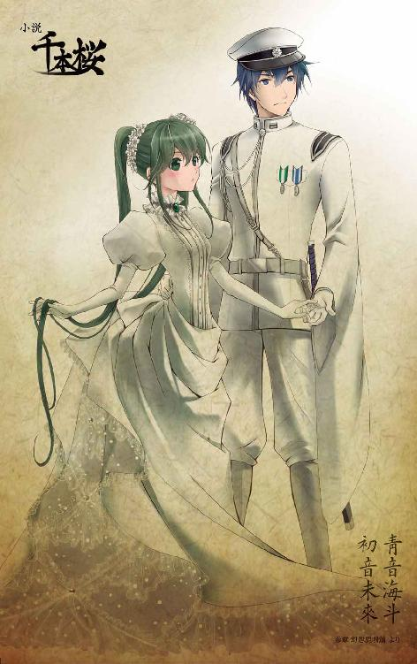
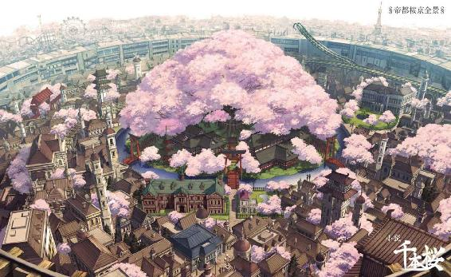
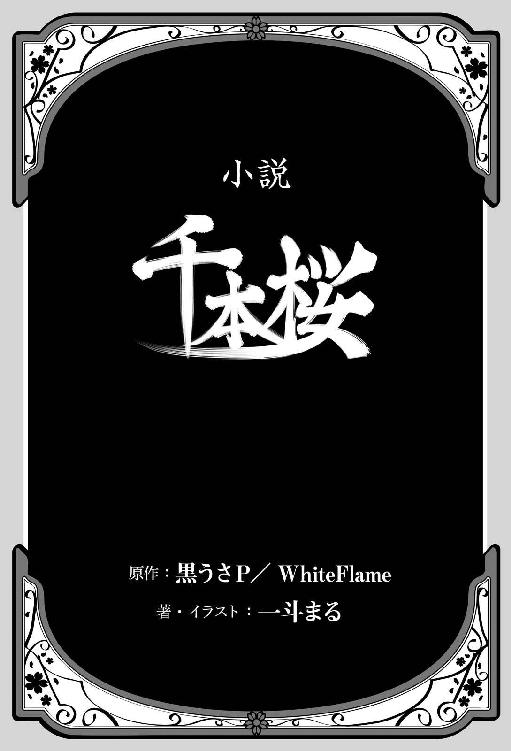
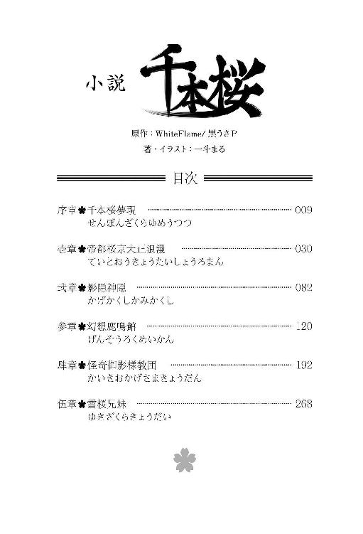
本書（電子版）に掲載されているコンテンツ（ソフトウェア／プログラム／データ／情報を含む）の著作権およびその他の権利は、すべて株式会社ＫＡＤＯＫＡＷＡおよび正当な権利を有する第三者に帰属しています。
法律の定めがある場合または権利者の明示的な承諾がある場合を除き、これらのコンテンツを複製・転載、改変・編集、翻案・翻訳、放送・出版、公衆送信（送信可能化を含む）・再配信、販売・頒布、貸与等に使用することはできません。
序章千本桜夢現
日ノ本の国に今年もこの季節が巡り来た。
満開の桜が咲き誇り、街中が薄紅色に染まる季節──雲ひとつ無い絶好の花見日和。
夜桜を肴に酒を吞むのも一興だが、桜の木の下で長閑に微睡みたいのなら、やはり日中が好ましい。
木陰に留まる薄汚れた冬の忘れ雪をもとかすように花びらが優しく覆っていく。
「ほんっと春っていいわねぇ、ぽっかぽか陽気の中で、桜を肴にのんびり吞む酒はまた格別だわ〜」
目の前に広がる春ならではの景観を楽しみながら、日本酒の一升瓶を片手に杯に注ぐのももどかしげに豪快に呷っていた美女が感嘆の声をあげる。
その美女の膝枕で心地よさげにうたた寝をしている男が「飲み過ぎ、鳴子」と呟くと、鳴子は「うるさい、海斗」と即座に返し、彼の額をぴしゃりと叩いた。
海斗は苦笑しながら「はいはい」と答え、彼女とは逆側に寝返りをうった。微睡みの中、うっすらと瞼を開けると、澄み渡った空の下、春風に舞う桜の花びらの中で鶯色の髪の乙女が歌い踊っている。
「......未來、また歌がうまくなったなぁ」
思わずそう漏らし、そのまま再び眠りに落ちていく海斗に、鳴子は「本当にね」と頷いて未來に拍手を送った。その拍手の音につられるように、鳴子たちの真向かいに座していた金髪の双子もぱちぱちと拍手を送る。
未來と呼ばれた少女は、面食らったようにみんなを振り返った。
「やだ鳴子姉、鈴も錬も......いったいなぁに？」
「歌がうまくなったなぁって、素直に感心してんの。春の中で舞う歌姫......うん、なかなか絵になってたわよ」
何気ない姉の褒め言葉が嬉しくて、未來は朱が刷かれた頰を見られまいと照れくさそうに背を向ける。
「だって......だって見て、本当に綺麗。こんなに満開の桜の下で歌が歌えるなんて、まるで夢の中みたい......」
両の腕を広げ桜色に染まった春風をその身いっぱいに受け止めながら、未來は夢見る瞳で桜を見上げ微笑んだ。
毎年、春が訪れる度にこの桜並木の下で花見をしながら食べたり飲んだり歌ったりすることが、未來たちの一番の楽しみだった。
去年もその前もそうであったように、来年も再来年も、ずっとこうして同じようにみんなと日々を重ねていくに違いない。それはとても平凡な幸せだけれど、何ものにも代えがたい大切な日常なのだ。
桜の木々の間から零れる暖かな春光が、そんな未來たちのささやかな未来を照らしているようで、誰もが自然と笑顔になった。
「こんな見晴らしのいい場所を取ってくれた海斗兄に感謝しないとなー」
一番下の弟、錬が、美味しそうに三色団子を頰張りながら云った。
そのすぐ隣で同じ顔で同じように三色団子を食べている双子の姉、鈴が続ける。
「ふふ、でもその海斗兄は、せっかくの桜に背を向けてまた居眠りしちゃってるんだけどね」
鈴の言葉に頷きながら、鳴子は自分の膝枕で気持ちよさそうに熟睡している海斗を一瞥してあきれ顔で云った。
「いくら場所取りで疲れているとはいえ、まったく失礼な男よねぇ。身近な花にも気づきやしない」
鳴子は不満そうに一升瓶を摑み上げた。その一升瓶を海斗の頭の上にでも振り下ろすのかと、その場にいた全員が一瞬冷やっとしたが、何事もなかったかのように、ぐびぐびと吞み続ける鳴子の姿に、一同は安堵する。
しかし吞むペースがいつもよりやけに早いのは、単に酒が好きだという理由だけでもないようだ。
「そういえばさぁ、この辺りに伝わる奇妙な噂、知ってる？」
相当出来上がっているのか、鳴子が何の脈絡も無く唐突に話し始めた。
未來は舞を続けながら、再び鳴子の話に耳を傾ける。
「奇妙な噂って？」
「美しい桜に心を奪われていると、どこからか神様が謡う歌が聞こえてきて、『神隠し』に遭うんだってさ」
神様の謡う歌......神隠し......。
未來は瞳を輝かせ両手を胸の前で合わせ考える。もしそんな歌が存在するなら、それはどんなに素敵な歌だろう。
「ねえ、鳴子姉。神隠しってなあに？」
双子の姉──鈴が、興味津々の顔で訊ねた。弟の錬の方は、今度は重箱のお弁当に箸を伸ばしている。
「神隠しっていうのは......神様にさらわれて、どこかにいなくなっちゃうこと、かな？」
小学六年生になったばかりの鈴にもわかるように、鳴子はなるべく簡単な言葉を選んで説明した。といっても、これ以上詳しく訊かれても鳴子にもわからないのだが、おそらく意味は間違っていないはずだ。
「じゃあ、流歌姉も神隠しにあったの？」
鈴は西洋人形のような、つぶらな瞳をしばたたかせて訊ねる。
「流歌が？ どうして？」
「だっていないもん」
鈴の言葉に、爆睡中の海斗を除いた全員が辺りを見回した。そういえば上から二番目の姉、流歌がブログに載せる写真を撮りにいくと云い出して出かけたまま、もうかなりの時間が経っている。
「あの子のことだから、またどっかで迷子になってるんじゃないの？」
鳴子は明るく笑い飛ばしたが、未來はそれを聞いた途端に顔面が蒼白になる。無論、流歌が『神隠し』に遭ったなどと思ったからではない。彼女が信じられないほどの方向音痴だからだ。
あれは去年の花見の席。同じように買い出しに出かけて、流歌はとうとうその日は戻ってこなかった。未來たちは警察にも届け出て必死に捜し回ったが、結局、流歌は一週間後に自力で歩いて家に戻ってきたのだ。
「流歌は方向音痴のくせに桜の木と保護色だから、こういう場所で迷子になると捜すの大変なのよね」
保護色......。
確かに流歌の長い髪は見事な撫子色だが、今はそんな冗談に感心している場合ではなかった。未來は急いでポケットから携帯電話を取り出し、電話を掛けてみる。去年の教訓から家族全員、一人一人携帯電話を持つようにしているのだ。
次の瞬間。鳴子の傍らに置かれたバッグの中から、流歌の持ち歌『紅一葉』の着メロが鳴り響いた。流歌の携帯電話の着信音だ。
「あの子、ケータイ忘れてってる。というより、バッグごと置きっ放し！ あーあ、もう。ご自慢の一眼レフのカメラも持っていってないってナイんじゃない！ いったい何をどう撮るつもりらったのよ!?」
開けっ放しの流歌のバッグの中から携帯電話を取り出し、「もしも〜し。ただいま流歌は迷子中です。ピーという発信音の後に......」と云うと鳴子は一人で爆笑した。だめだ。完全に出来上がってる。
問題の流歌もカメラを忘れたことに気づいたら、普通ならすぐに引き返してくるはずだが、それが戻らないとなると、やはりまた迷子になっているとしか考えられない。
「はあ、もう仕方ない。アタシ、ちょっと流歌を捜してくるわ。桜並木沿いに歩いていけばすぐに見つかるれしょ」
鳴子はひとしきり笑った後、一升瓶を支えにして立ち上がろうとして、それができないことに気づいた。膝の上で気持ちよさそうに寝ている海斗を睥睨して忌々しそうに舌打ちする。
「あ、やっぱりボクが捜してくる。鳴子姉はそのままでいて。海斗兄も場所取りでここのところ、寝てないし......」
疲労困憊の海斗と泥酔寸前の鳴子の身を案じ、未來は流歌を捜しにいく役を買って出た。
「ん。そう？ なんかわるいわね、未來。しかしあんたってば、歌だけじゃなくて空気読むのまでうまくなっちゃって〜」
「だって鳴子姉もかなり酔ってるみたいだし、そのままいかせたら迷子が一人増えそうなんだもん」
「はは、違いないわ」
すでに茣蓙の端にしゃがんで太ももまである長いブーツを履き始めている未來に、鳴子は肩をすくめて苦笑した。
「じゃあ、いってくる。流歌姉が見つかったら電話、する......から......ふわぁ......」
立ち上がった瞬間、未來は意識を失いそうになるほどの強烈な睡魔に襲われた。
──あれ。なんで、こんなに急に眠く......。
「わたしたちも一緒にいこうか？」
大きなあくびをしてふらつく未來を見て心配げな顔を向ける鈴と錬に、大丈夫だからと未來は微笑んだ。その代わり泥酔気味の鳴子と眠りこけている海斗をお願いねと告げる。
「ああ、待って、未來」
未來が歩き出そうとしたところで、鳴子が呼び止める。未來は地面に付きそうなほどの長い髪を翻し振り返った。始終ご機嫌だった鳴子が、やけに真剣なまなざしを未來に向け、一言釘を刺す。
「流歌を捜しにいくのはいいけど、あんたも子供の頃に、ここで一度迷子なったことがあるんらから......気をつけなさいよ」
「え......？」
未來は息を吞んだ。
鈴と錬も驚いたように同時に鳴子を見つめ、次いで未來を見た。
ボクが──ここで迷子になったことがある？
初耳だった。そんなこと、いま鳴子姉に云われるまで知らなかった......。
「まあ、あんたの場合は、すぐ見つかったんらけどね......」
そう、鳴子は付け足した。
──流歌姉、どこまでいっちゃったんだろう......。
いけどもいけども桜、桜、桜。
果てしなく続いているのか、それとも同じ所をぐるぐると廻り続けているのか、それすらもわからなくなるほど、未來は、この桜の迷宮をもう四、五〇分は走り回っている。並木というよりまるで桜の森──この一帯を『千本桜』と呼称する所以だ。
木々の合間から漏れる光と桜の花びらが幾重にも降り注ぎ、未來のゆく手を阻むように世界を桜色に塗り替えていく。
それは幼き頃に見た、くるりと廻せばきらりと光り、様々に姿を変える万華鏡のように......。
忘れていた遠い記憶が蘇った気がして、その光の先に手を伸ばした刹那──。
千本桜 夜ニ紛レ......
どこからともなく響き渡る美しい旋律と声音に、未來は弾かれたようにその場に立ち止まる。
そして、気づいた。
降りしきる桜吹雪の中、眼前にそびえる視界を覆うほどの巨大な桜の樹に。
その堂々たる幹には、大きな注連縄が厳かに巻かれていた。
「なんて立派な桜......」
幹に手を触れて感嘆のため息を漏らし、未來は思わず呟いていた。
美しい桜に心を奪われたりすると、どこからか神様が謡う歌が聞こえてきて、『神隠し』に遭うんだってさ──。
ふと、先ほどの鳴子の話を思い出した。
──ま、まさか、これが神隠し？
未來は咄嗟に自分のツインテールを両の手で握ると、思い切り横に引っ張ってみた。
び〜ん。
痛い。やはりこれは現実だ。
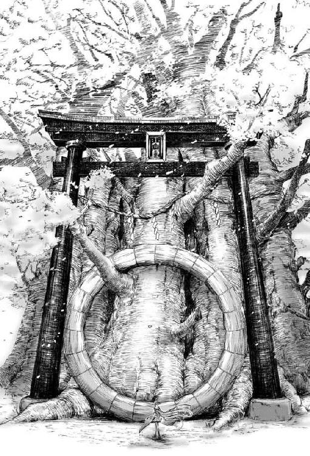
でも、現実なら──先ほどお花見でランチを食べたばかりだというのに、どうして空には蒼白い月が浮かんでいるのだろう。
冷ややかな月の光を目にするうちに、急に不安に駆られて未來は叫んだ。
「だ、誰かいませんか!?」
周囲にはもう花見客もいなければ、勿論神様も見あたらない。
この桜に囲まれた世界にいるのは、自分一人になったように思えてくる。
もう一度、大声で叫ぶ。
すると、桜の木の陰から、黒い何かが目の前に飛び出してきた。
──えっ！ な、なにあれ!?
その姿は一見した限り......そう、黒装束の......『忍者』だった。
何故こんな場所に忍者の恰好をした人がいるのか!? だが、その忍者は同性の未來から見ても、息を吞むほど美しかった。
「ああら、どうかして？」
忍者は女性にしてはやけに低い声で、未來を挑発するかのように一歩踏み出した。
たわわな胸が上下に大きく揺れる。
このボクへの──挑戦としか思えない。
未來も負けじと一歩踏み出す。
しかし、残念ながら何も揺れなかった。
「あ、あのう......ひっ!?」
声を掛けようとした次の瞬間、空気が音を立てて唸る。
反射的に、未來は背骨が軋むほど大きく上体を反らした。と同時に、鼻先を掠めるように何かが高速で飛び越していく。
逃げ遅れた長い髪がひと房、引き千切られて闇に舞う。
「ふっ。さすが帝國軍人......確実に仕留めたと思ったけど、まさか避けるとは......大したものだわ」
「て、ていこく軍人!?」
未來は改めて自分の姿を見て、そのクリッとした瞳をさらに大きく見開いた。
先ほどまでは確かに銀色に輝くノースリーブの上着にプリーツの入った黒のミニスカート、そのスカートと同色の太ももまである長いブーツを履いていたはずなのに......。
それがいつの間にか、未來は着物の袖に『桜』と覚しき柄の入った長春色の軍服を着ている。下はミニスカートで、太ももの半ばまであるニーハイソックスと、靴底が下駄という見たことも聞いたこともないような膝下まであるブーツを履いていた。
──いつの間に、ボクはこんな恰好に!?
「ふふ、あなたの考えていること、手に取るようにわかるわよ。アタシの声が低いから、オカマだと思ってるんでしょ！」
「い、いえ、そんな失礼なことこれっぽっちも思ってませんっ！」
未來は慌てて首を横に振った。
彼女のかすれたような低い声は、きっとハスキーボイスというものなのだろう。
いや、いずれにせよそんな理由でまた襲われたのでは、たまったものではない。
「いいのよ。本当のことなんだから」
「は？」
「オカマなのよ、アタシ」
ええーっ!? 本物？
「わかるわよ、あなたの考えてること。アタシがオカマであちこち偽物だから、バカにしているんでしょう？」
「ば、バカになんてしてません......」
いきなりオカマだとカミングアウトされたことには驚いたけど、できればもうこれ以上、関わりたくないだけです......。
「フン。あんたなんて本物の女のくせに、ろくすっぽ胸も膨らんでないじゃない」
失礼な。
「でも......いいわよね、あんた」
目の前に対峙した忍者......否、オカマ忍者は、急に哀しそうな声で云った。そのルージュをひいたような赤い唇から、長年の疲れを吐き出すように、深いため息を漏らす。
「若くてぷりぷりしてて、肌もしっとり綺麗で、きらきらしてて可愛くて......うらやましいわ」
一転して未來のことを嫉妬するような表情で睨み付けると、手元にパシリと『鎖鎌』を引き戻し握り締めた。
「そして同時に......そのぷりぷりしっとりキラキラがこれ以上無いほどに妬ましいのよっ！」
怒気と共に鎖鎌の一方の端──分銅を地面に叩きつけると、分銅は地中に抉り込み、その地響きに揺らいだ巨樹がばっと桜の花びらを散らした。
先ほど空気が音を立てて唸ったのは、この武器のせいだ。
もし、あんなものが本当に当たったら、絶対に怪我だけじゃ済まされない。
「あの、その鎖鎌とか......何かの冗談ですよね？ これって映画か何かの撮影で、カメラがどこかにあるんですよね？」
そうだ。これは映画の撮影なのだ。
映画のセットなら、この見たこともないほどに巨大な桜の木の存在にも頷ける。
よくできてるけど、きっと作り物だ。
ボクは何かの映画の撮影に紛れ込んでしまって、このオカマ忍者は演技を続けているのだ。
未來は恐怖に引きつった表情で、ゆっくりと後ずさる。
「撮影？ あなたこれが活動写真か何かだと思っているの。でも、あいにくとそんなものじゃないわ。あなたはこれから、アタシに『喰われる』のよ」
く、喰われる!?
「あら、わからない？ つまりはこういうことよ！」
オカマ忍者に蹴り飛ばされたと理解したのは、未來が何メートルも後方の桜の木に激しく頭と背中をぶつけた後だった。
「......くっ......ぁ」
痛みは意外にも感じず、意識だけが遠のく。
軽い脳震盪を起こしたのか、視界が霞んだ。
全身から力が抜けていく。桜の幹に寄りかかった軀が、徐々に傾いで地面に倒れていく。
「他愛も無い......反撃はどうしたのよ？ 帝都を守護する『神憑』といえど、所詮、小娘の力ではこの程度なのかしら？」
オカマ忍者は無様に地面に転がったままの未來に近づき、見下すような口調で吐き捨てた。睥睨したまま片足を上げると、まだ動けないでいる未來の軀を踏みつける。
未來は朦朧とする意識の中で、なんとか軀を潰されないように両腕を胸の前で交差させて護る。
そして両腕に力を込め、声無き声で抗議する。
なんてこと！
よりによってなんで胸!?
「弱すぎる......が、まあいいわ。永遠に生きる『神憑』を喰らえば、アタシはまた暫くこの美貌を保つことができる......」
どこかうっとりするように呟いたオカマ忍者は、ようやく未來を蹴りつけるのをやめると、今度はその細い首に手を掛けて、そのまま片手で未來の軀を持ち上げた。
蒼白い満月の光が反射して、オカマ忍者の残忍な瞳が鈍く光る。
彼女はまるで吸血鬼のように、未來の首筋に唇をつけようとする。
──こ、殺される......。
「ちょっと待った！」
突如として投げかけられた声に、オカマ忍者は振り返った。
黒い半外套を小粋に翻して現れた金髪の少年が、上斜め前方に挙手しながら声を張り上げる。
「我ら大日本帝國『神憑特殊桜小隊』！ 鏡音錬！ そして、今一人はっ」
そう息巻く錬と名乗る少年の横には──。
心ここにあらずといった表情の隻眼の少女が、ぼうっと突っ立っていた......。
「い、今一人は、姉の鈴！」
仕方なく少年は補足する。
「錬!? それに鈴も！」
未來は目の前に現れた双子の姉弟の姿に目を見開いた。
二人ともいつ着替えたものか、未來と同じような振袖の付いた軍服を着ている。鈴と錬の振袖にはそれぞれ、『蝶』と『扇』の模様が施されていた。
きっと二人のことだから、何か遊びの延長だとでも勘違いして、目の前に飛び出してきたに違いない。鈴も錬も知らないのだ。目の前にいるオカマ忍者がどれだけ危険かということを。
「かっこつけてないで、二人とも、に、逃げて！」
必死の思いで未來は擦れた声を絞り出して叫んだ。こんなわけのわからない相手に、大切な妹と弟を傷つけさせるわけにはいかない。
「神憑特殊桜小隊？ ふん、そうか、なるほど。ではこの娘と同じ、『神憑』か。ふふ、今夜は食べ放題じゃないか」
「貴様！ 未來姉から離れろ！」
錬が叫んだ。着物の柄ではない本物の扇を二柄、袖の中から摑み出すと錬は果敢にもオカマ忍者に向かって走る。
それを見て、オカマ忍者が、くっくと嗤った。
二柄の扇を武器に、真っ正面から勢いよく突進してくる錬を、オカマ忍者は鎖鎌を構えもせずに待ち受けていた。
だめ──錬、相手にしちゃ！
戦いの経験など皆無だったが、未來はそう確信した。
「未來姉を護る！」
未來が制止するよりも一瞬速く、錬はオカマ忍者に黒き疾風のごとく飛び掛かった。ジャンプし空中で身をよじり、右手の扇を投げつけ、それを相手が鎌で弾き飛ばした瞬間、更に左の扇で打ち掛かる。
だが、オカマ忍者は錬の左扇を軀を軽く傾け紙一重で避けると、錬の顔を狙って分銅を繰り出した。
「ぐっ！」
「錬!!」
夜目にもはっきりと、血飛沫が上がった。
片目を押さえて、どうっと地面に落ちる。
「ひ、人殺し！」
叫びながら未來は、咄嗟に拾い上げた石を投げつけた。
こんなものでこのオカマ忍者を撃退できるとは思えない。が、黙って見ているわけにはいかない。
「二人に、手を出すな！ ボ、ボクが、相手になってやる......！」
未だ視界は回復せず、ともすれば意識すら手放しそうになる中で、未來は必死にオカマ忍者を睨み付ける。自分はどうなっても、大切な家族、鈴と錬を護らねば。
「立ち向かってくるというなら容赦はしない」
「うっ！」
オカマ忍者が軽く手首をひねったと思った次の瞬間、未來の細い首が鎖鎌で絞め上げられた。
瞬時にして呼吸する術を奪われた未來は、首に巻き付いた鎖を引き剝がそうとして藻搔くが、鎖は首に深く食い込むばかりで、未來の力ではとても解けそうにない。
窒息寸前の未來の耳に、突然、別の男の声が飛び込んできた。
「俺の大切な妹を放してもらおうか」
──か、海斗兄？
寂を含んだ声は紛れもなく兄のものだった。
助けを求めようにも、未來は声が出せないどころか、巻き付いた鎖に首を潰されないよう藻搔くので精一杯だ。
「アタシの胸に刀を突きつけるとは無礼な男。そんなにこの小娘の首をへし折られたいか！」
「試してみるか？ 俺の刀がお前の心臓を貫くのと、どちらが速いかを......」
「............」
一瞬の沈黙の後、不意に未來の呼吸が楽になった。刀を突きつけられたオカマ忍者が飛び退いて、鎖鎌の縛めが解かれたのだと理解したときには、未來の軀は糸が切れた操り人形のようにその場に崩れ落ちた。その軀を、駆けつけたばかりの女性が地面に倒れる寸前に優しく抱き留める。
「あたしたちが来たからにはもう大丈夫よ、未來」
──鳴子......姉......？
「ちっ。相手が多すぎる。少々、遊びすぎたか」
舌打ちし、吐き捨てるようにオカマ忍者は呟くと、未來たちの足元に何かを投げつけた。その直後、濛々とした煙に包まれ、視界が完全に遮られた。
「煙幕だ！」
忌々しげに海斗が叫んだときには、未來は鳴子の腕の中で昏倒していた。
壱章帝都桜京大正浪漫
窓の外を飛び交う雀たちのさえずりが、昏々と眠り続けていた乙女に朝の訪れを告げる。
その愛くるしい鳴き声をぼうっと聴きながら、未來は小さなあくびを嚙み殺して冷え切った両足の先をこすり合わせた。
うう、寒い〜。
春先だというのに、今朝はやけに底冷えがする。
体の芯まで突き刺す寒さから逃げるように未來は頭まで布団を被り直すと、両の膝を抱え込み、その身を丸く縮ませた。
いつしか雀たちのかしましいおしゃべりは止み、朝を報せる役目は雀から時計へと移行したようだ。しんと静まりかえった部屋に、秒針が時を刻む無機質な音だけが規則正しく響いている。
今は......何時だろ？
姉代わりの二人が起こしに来ないところをみると、まだ学校の時間には早いようだ。叩き起こされる前に、できればもう一眠りして昨夜の夢の続きを見てみたい。
昨夜の夢とは勿論、満開の桜の下を舞台に、オカマ忍者と姉弟たちがチャンバラを繰り広げる冒険活劇だ。危うく殺されかけたりして怖い場面もあったが、あんなスリルに満ちた経験は現実ではなかなか味わえるものではない。
未來はぎゅっと目を瞑るとあの後の夢の続きを想像してみた。
そうだ。結局皆は、あのオカマ忍者を倒すことができたのだろうか？
花見の途中で迷子になった流歌姉は、無事に家に帰ることができただろうか？
あれ？
何かおかしい。夢と現実が、一部ごっちゃになっている。どこまでが夢で、どこからが現実？
そもそもボクはいつ自分の部屋に帰って来たんだろう......そんな記憶すら何故か曖昧だ。
............。
そっか。
ボクはまだ寝ぼけているんだ。
そのとき、不意にノックの音がした。
流歌姉かな？ 鳴子姉だったらノック二回で済むわけがない。
一番上の姉の鳴子は人を起こすのに手段を選ばないタイプで、ノック一つをとっても容赦がない。早く起きなければボクより扉が大変なことになる。
でも下の姉ならまだ起きなくて大丈夫。鳴子姉と違い流歌姉はどこまでも未來を甘やかしてくれる。起こしに来た流歌姉まで、未來の横で眠ってしまうこともしばしばあるくらいだ。いつも優しく抱きしめてくれて、ふわふわしていて、そう......まるで綿菓子で出来た毛布みたいに......そんな事を考えながら再び夢の中へとまどろみかけたとき。
ドアを開け、人が入ってくる気配。やがて、ぱちぱちと火が燃える音。
──部屋の中なのに......どうして、火？
朝の起こし方にしては、少々過激すぎやしないだろうか。
慌てて布団をはねのけ、未來は飛び起きた。
──ん？
未來は目を瞬かせた。
部屋に入ってきたのは、鳴子でも流歌でもなく、知らない女性だ。
女性はオーソドックスなパフスリーブの黒いメイド服に身を包み、未來に背を向けるような恰好で、煉瓦造りの暖炉に薪をせっせとくべている。暖炉にメイドといった見慣れない光景に茫然と部屋の中を見回す。
白塗りの格子の出窓にリボンとレースのカーテン。見事なカーブを描いた猫足ラインのテーブルにスツール。柱にはランプがキラキラと光を灯し、天井からは上品そうなシャンデリアが厳かに未來を見下ろしている。極めつけは自分が寝ている寝台だ。レースやフリルが盛りに盛られた羽根布団、天蓋の四隅にはロマンティックな半透明のカーテンがリボンで束ねられ、独特の雰囲気を醸し出している。
こんな天蓋付きの寝台なんて初めて見た。
まるでどこかの国のお姫様の部屋だ。
やはりボクはまだ、寝ぼけているのだろうか？
おそるおそる様子をうかがっていると、メイド服の女性は暖炉の薪をくべ終えたらしく、こちらに振り返った。寝台の上に茫然と座っている未來に気づいて、微笑と共に深々とお辞儀をした。
「よかった。ようやくお目覚めになられたのですね......未來お嬢様」
未來お嬢様ってナニ!?
「え、えっと......ここ、どこ？」
「未來お嬢様のお部屋で御座いますが......？」
女性は怪訝そうな表情を浮かべて首を傾げた。何故そんな当たり前のことを訊ねるのだろうといった顔だ。
ここが、ボクの部屋？
未來は改めて部屋の中をぐるっと見回したが、どう考えたって、こんな豪華な部屋が自分の寝室のわけがない。
「質問していい？」
「ええ、何なりと。未來お嬢様」
女性は両手を前に組むと、膝を折り腰を落としながら答えた。
「どうしてボク、こんな処で寝ていたの？ あと、ボクの家族知らない？ いつの間にか、はぐれちゃったみたいで......」
「は、はい!?」
女性は何故か今度は大変驚いたような顔をして、よろよろと大袈裟によろめきながら後ずさった。
そしてまるで未來の前から逃げ出すように慌てて部屋から飛び出していったかと思うと、「未來お嬢様のご様子がおかしくなられました！」などと大変失礼な言葉を叫びながら廊下を走り去っていった。
いったい、なんなの、本当のことなのに──。
未來は抗議するように頰を膨らませると、ぶーっと一気に息を吐きながら寝台から飛び降りた。
寝台の横にある見事な彫刻があしらわれた鏡台に座り、乱れた髪を綺麗に結い直す。
「なんだか高そうな鏡だなぁ......」
鏡台続きの洋簞笥の上には上品なリネンのレースドイリーが敷かれ、その上に金襴緞子や、びろうど、ちりめんに彩られた古風雅な写真立てがいくつも並んでいる。
うわ、流歌姉が好きそうなアンティークがいっぱいだ......。
古い物を集めるのが趣味みたいな流歌は、特に明治時代や大正時代のアンティークを好んで蒐集している。未來も姉の部屋で色々と目にしている内に、自然とそういう物に対して詳しくなってしまっていた。
未來は何気なくそのうちのひとつを手に取って見る。
雪の結晶と桜の模様があしらわれた、びろうどの表紙の切り込みにそっと挟まれた古ぼけた一枚の写真。満開の桜に囲まれた白煉瓦の屋敷の前で、小さな少女が傍らに立つ少年と手を繫いで嬉しそうに微笑んでいる。
これ......。
未來は息を吞んだ。
写真の中で屈託無く微笑む少女はどことなく自分に似ていた。いや、どことなくどころの騒ぎではない──まるで瓜二つだ。そしてその傍らで、ほんの少しはにかんだようなぎこちない笑顔を浮かべている少年──これは......。
不意に勢いよく扉が開いて、二つの人影が飛び込んできた。
未來は慌てて、そちらを振り向いて目を丸くする。
「鈴！ 錬！」
「未來姉！」
左右から飛びついてきた双子の姉弟を、未來はぎゅっと腕を回して抱きしめる。
まるで生き別れの姉に久しぶりに出逢ったかのように、しばらく未來にしがみついていた二人は、やがて腕を緩めると不安そうに顔を上げる。
「未來姉、目が覚めたんだね良かったー！ あのままずっと目を覚まさないんじゃないかと心配したよ。あのオカマ忍者にやられた怪我は、もう治ったんだね!?」
「オカマ忍者って......どうして錬がボクの見た夢の中のことを知っているの？」
「夢？ 夢なんかじゃないよ。未來姉が怪我をしたのは現実だよ。海斗兄が必死にあのオカマ忍者を捕まえようとしてくれているから、もう心配ないよ」
海斗兄が......？
でもあのチャンバラ冒険活劇が現実っていったい......。
「未來姉の意識が戻ったって聞けば、海斗兄も喜ぶよ。僕、知らせてくる。あ、そうだ。未來姉、お腹減ってない？」
未來は自分のお腹に手を当てた。その途端、思い出したかのように空腹感を覚える。
まるで一週間くらい何も食べてないみたいにお腹がぺこぺこだ。未來は頷く。
「やっぱりね。きっと怪我の再生に力を使い果たしたんだよ。普通の人間なら死んでもおかしくない怪我だったからね。いくら治癒能力の優れた未來姉とはいえ、もうしばらく寝ていた方がいいよ。僕、爺に云って未來姉のご飯用意してもらってくる」
よほど早く海斗に知らせにいきたいのだろう。部屋に入ってきたときよりも、さらに勢いよく部屋を飛び出していく錬の背中に、未來は声を掛けた。
「待って、錬！ 死んでてもおかしくない怪我ってなに!? だって夢の中の話だし、ボク何処もなんともないよー！」
一旦部屋から出ていった錬が、わざわざ戻ってきたのか再び扉から顔を覗かせる。
「頭を怪我したから、記憶がきっと混乱しているんだよ......鈴！ 未來姉の傍で見ていてあげて！」
弟の錬の言葉に、鈴はこくりと静かに頷いた。
そして未來の混乱をよそに、錬はそれだけ云い残すと、扉も開けっ放しで今度こそさっさといってしまった。
未來は、看病を任されて取り残された鈴に向き直る。
「ごめんね、なんだか心配かけたみたいで」
〈──痛クナイ？〉
どこか作り物めいた硝子細工のような瞳をこちらに向けて鈴が云う。
否。鈴の声じゃない。鈴の唇は動いていなかった。声を発したのは彼女が大切そうに抱きかかえているアンティークな布製の洋装人形──文化人形だ。
〈──痛クナイ？〉
「う、うん、もう痛くないよ。ありがとう、鈴」
未來は人形の発した音声に、相手を気遣うような感情の響きを感じ、最近の玩具のアイデアや精巧さに感心しながら鈴の頭を撫でる。
「喋る文化人形なんて素敵、鳴子姉か流歌姉に買って貰ったの？」
「............」
鈴は撫でられるまま大人しくしている。その硝子細工のような瞳は、瞬きすら忘れたかのように微動だにしない。
なんだろう、この違和感──。
鈴はもっと快活で利発な少女だ。それなのに、目の前にいる鈴と会話していると、まるで幼児と向かい合っているような気分になる。
もしかしたら鈴の方こそ具合でも悪いのかもしれない。
「ボクはいいから、鈴こそどこか痛いところや辛いところがあったらきちんと云わなきゃ駄目だよ？」
その言葉に鈴は未來の顔を不思議そうな表情でジッと見つめ、数秒遅れてゆっくりと小さく頷いた。
「未來が目覚めたというのは本当か!?」
突然、息を切らして寝室に飛び込んできた青年の声に未來は振り向いた。
その声は紛れもなく兄代わりでもある海斗だ。鏡台に座っている未來を見つけるなり、真剣な面持ちで駆け寄ってくる。彼の後ろには、一番上の姉である鳴子もいた。
「皆がどれだけ心配したか......」
海斗は、言葉を詰まらせ未來の両肩に手を掛けたまま脱力したようにその場に膝をつく。
大袈裟だなあ。まあ、心配性の海斗兄らしいけれど。
「錬も心配してたけど、どこも怪我してないから大丈夫だよ。鳴子姉も、心配かけてごめんね」
寝室の入り口に立つ鳴子にも未來は微笑んで見せる。鳴子は優しく頷くと、軍帽のような帽子を脱ぎ、ほっと安堵のため息をついた。
「............」
あんないかつい帽子を鳴子姉が持っていただろうか？ 一度引いたはずの違和感が、再び波のように押し寄せる。未來は改めて兄姉たちを見つめた。
見た目は未來の知る兄姉に瓜二つだというのに、何かが違う......？
「そういえば海斗兄もみんなも、どうして変な着物袖の服や制服を着ているの？」
海斗や鳴子や鈴だけではない。今は部屋にいない錬も、昨夜見た冒険活劇の夢のときとまるで同じ服装だ。
「なにを云ってるんだ。軍人なら軍服を着用して当然だろう」
「ぐ、軍人!?」
ようやく気を持ち直したかのように軍帽の被り位置を直しながら立ち上がる海斗を、未來は驚いた顔で見上げる。
「軀の怪我は完全に治癒したようね。それはさすがだけど......でも──今の言動からすると、まだ軽い記憶障害でも起こしているのかしら？」
心配そうな顔で、鳴子が未來の背後に回り込む。頭を打った箇所を調べるみたいに、鳴子は未來の後頭部に手を当てて、細かく念入りに視線を這わせる。
「昨夜の戦いで頭を強く打った、その後遺症か......」
「記憶障害ってどういうこと？」
「後で辞書でも引け。昔から云っているだろう、わからないことは辞書を引けと。それよりもここがどこか位はわかるだろう？」
「ううん。さっきも暖炉に薪をくべてたメイドみたいな人に、ここがどこだかわからないって云ったら、ボクのこと頭がおかしくなったって」
未來は口を尖らせた。
そりゃあ、学校の成績はかなり低空飛行ではあるけれど、未來は未來なりに努力した結果、その成績なのだ。だからといって、見ず知らずのメイドにまであんな風に云われたくはない。
「......確かにおかしいな」
「え？」
そこは否定して欲しかった。
「俺が誰だかわかるか？」
さり気なく分けた前髪の奥で、未來に向けられた気遣わしげな蒼い瞳が揺れている。
「海斗兄でしょ？ 変なこと訊かないで」
不安を煽るような少々意地の悪い海斗の質問に、未來は即答する。
だが、海斗の厳しい表情は少しも晴れない。それどころか、眉根に刻まれた皺は、ますます深くなるばかりだ。
ど、どうしてそんな顔するの？ まさか、違うなんて云わないでよね。
「そのお前らしくもない奇妙な言葉使いは、いったいどうしたんだ？」
「えっ。そこ？」
意表を突かれた未來は声を上げる。
「いつも『御兄様』か『海斗兄様』と......、そう呼んでいただろう？」
「お、おにいさま!?」
未來は兄から顔を背けると、口元を押さえた。
なあんだ、みんなして、ボクをからかっていたんだ。
でもいまのは海斗兄にしては珍しく、渾身のギャグだった。思わず噴き出してしまいそうになるくらいに。
「じゃあ、ボク......鳴子姉のことも、『御姉様』って呼んでいたとか？」
海斗兄の冗談に付き合って、未來も冗談で返答する。
「いいえ。あたしのことは鳴子姉よ。でも変ね......なんだか、未來が別人みたい。本当に記憶障害のせいかしら？」
心なしか鳴子姉の視線が鋭い。
「......それしか原因は考えられない。あのとき、かなり強く頭を打っていたからな......未來、今日が何年の何月だか答えられるか？」
え、まだ続けるの、それ......。
「......平成二五年の四月でしょう？」
いいしれぬ不安がまた未來の胸に押し寄せてくる。
未來は先週、中学二年生の始業式を迎えたばかりだ。その週末に、みんなで桜の花見に出かけたのだから、この質問は間違えようがない。
しかし嫌な予感は的中した。
海斗と鳴子が更に表情を硬くして、互いの顔を見合わせ息を吞んでいる。
鳴子は口もとを手の平で押さえて顔を背け、海斗も沈痛な面持ちで改めて未來の顔を見据えた。
「ヘイセイ？ なんだそれは......」
「いや、なんだそれはと云われても、平成は平成としか説明のしようがないよ......」
未來はしどろもどろに言葉を返す。
「未來、いいかよく聞け」
「な、なに、海斗兄。そんな怖い顔して」
本能的に、この話の先を聞いてはいけないような気がして、未來は身構える。
もし聞いてしまったら、ボクはもう二度と元の世界には戻れない......そんな不安が何故か胸中を満たす。
「『ヘイセイ』とやらは初耳だ。今は大正一〇〇年、長月の一七日。そしてお前は、この音子爵家、華族の娘だ」
思わず耳を塞ごうとしたが間に合わなかった。兄の言葉は、未來の想像を遥かに超えていた。
「......た、大正一〇〇年!? し、ししゃくってなに？ みんなしてふざけてるの？」
もう、兄たちが何を云っているのかまるで理解できない。
だが、云い知れぬ不安に襲われて思わず声を荒げてしまった未來は、絶望の淵に立たされたかのようなため息を吐いた海斗の表情を見て押し黙る。
海斗は、未來以上にショックを受けていた。その両手はとっくに未來の肩から離れて、床に着いている。まるで甲子園の決勝戦の最終回、サヨナラ逆転満塁ホームランを打たれて、マウンドに沈み込んだピッチャーだ。
床についていた彼の両手はやがて頭を抱え込み、悶え苦しんだ果てに懊悩するかのように、海斗は「はあああ......」と、口から魂まで抜け出てしまいそうなほどの深いため息を漏らした。
このまま憔悴して、白髪だらけになって燃え尽きてしまってもなんらおかしくはない。
未來はこんなに打ち拉がれ落胆する兄の姿を、今まで見たことがなかった。
「俺の育てた未來はどこへいってしまったんだ......」
「えっ。ボクならここにいるよ？」
しつこいほど深いため息を再び吐きながら、海斗は首を横に何度も振って嘆く。
「自分を『ボク』などと呼ぶ妹など、俺は知らん！」
「は？」
「嗚呼、俺はお前を華族の娘として、どこに出しても恥ずかしくない『完璧な淑女』に育てあげたはずなのに......」
ぶつぶつと意味不明な言葉を呟いている兄のあまりの姿を見かねて、未來は自分の境遇も忘れて思わず口走る。
「へ......、平成から来てごめんなさい......」
とにかく何でもいいから謝って、兄の心を救わなければ......。このままだと本当に壊れてしまいかねない雰囲気だ。
「聞いたか、鳴子。あああ、俺の未來がまたおかしな事を口走り始めた......」
「あなた、他にいくあてのなくなった未來を、本当の妹以上にずっと大切に育ててきたものねえ......」
鳴子は心の底から同情しているような口ぶりで云い、頭を抱えくずおれる海斗の傍らに膝をつくと、その背を慰めるように掌で擦った。
「未來姉、食事の到着だよ！」
海斗がいつまでも立ち直れずにいる間に、再び錬が寝室に戻ってきた。
錬に続いて寝室に入ってきた初老の男性と、先ほど暖炉に薪をくべていた女性がてきぱきと食事を運び入れる。
「あ......さっきの」
料理皿の載ったキャスターテーブルを寝台に横付けすると、女性は未來へと深々と頭を垂れる。
「未來お嬢様にお仕えする身でありながら、先ほどは取り乱してしまいまして、大変な失礼を......申し訳ございませんでした」
「え、そんな......ボクの方こそ驚かせてごめんなさい」
そう告げると未來も負けじと頭を垂れた。
そんな遣り取りを横で見ていた初老の男性が一歩前へ出て、海斗に向かって丁寧な所作で深々とお辞儀をすると、慇懃な口調で報告した。
「海斗お坊ちゃま。只今、御前賀大将閣下からお電話がありまして、後ほど近衛師団に登営するようにとの仰せです」
「わかった。後ほど向かうと返答しておいてくれ」
いつの間に復活したのか、毅然とした動作で起立した海斗は、手を後ろに組み重々しく頷くと、更に初老の男性と侍女に向かって厳しい声音で言い渡す。
「未來は任務で負った怪我のせいで、一時的に記憶障害を起こしている。今後は今まで以上に俺の妹を注意深くしっかり世話してやってくれ」
「承知致しました。海斗お坊ちゃま」
二人は、海斗に恭しく頭を下げると、揃って寝室を出ていった。
まるで別人のように威厳を増した海斗に、未來は呆気にとられながら、小声で錬に訊ねる。
「......今のおじさん、誰？」
「爺だよ。この音家の執事」
執事──。
物語の中でしか見たことが無かったけれど、本当にいるんだ......。
「海斗、ちょっと」
暖炉を背にして立っている鳴子が目配せすると、近づいた海斗になにやら耳打ちをする。未來はその話の内容が少し気になったが、小声で話しているせいで全く聞こえない。未來の知る兄と姉もいつもああして二人だけでよく会話を交わしていた。見慣れないのは着ている服と、その周りの風景だけで、海斗も鳴子も、そして鈴も錬も未來の知る家族の姿だ。
やはり未來が意識を失い夢を見ている間に世界で異変が起きたのか、それとも未來が平成と呼んだ世界が幻だったのか、考えれば考えるほど、考えが上手くまとまらない。
押し寄せる不安を頭を振って追い払うと、用意された食事に手を付ける事なく未來は立ち上がった。
思い悩んでこの部屋でただ過ごしていても何も始まらない。まずは行動しなくては。
そんな様子を心配そうに近くで見ている鈴と錬に、それまで思案していた海斗が声をかける。
「鈴、錬。あとのことは俺に任せろ。お前たちは巡回に出かける時間だ」
「えー」
海斗が頃合いを見計らったように云うと、錬はすかさず抗議の声をあげた。
「あれ？ 鳴子姉は？」
「鳴子には一足先に軍本部へ向かってもらった」
さっきまで海斗の横にいた鳴子の姿が何処にもない。いったいいつ部屋から出ていったのだろう......全く気づかなかった。
「海斗兄は鳴子姉と一緒にいかなくて良かったの？」
「お前は余計な心配をしなくてもいい。本部には後で向かう」
「海斗兄こそ心配しないで、お仕事があるならそっちにいって。ボクなら大丈夫、ここの周りの様子も確かめてみたいし......」
その言葉に海斗は心配そうに未來の顔を見る。
「確かめる......？ 大丈夫なのか？ 外傷ではない。頭の方だ」
失礼な。
しかし、これだけみんなに頭がおかしいと連呼されると、さすがに自分でも自信が持てなくなってくる。
だからこそ、これが夢でないのなら、今自分がどんな状況に置かれているのか、少しでも外の世界をこの目で見て確認しておきたい......未來は大きく頷いた。
その様子に海斗は小さなため息を漏らすと、軍帽を正し未來へと向き直る。
「わかった。俺も付き合おう。記憶を早く取り戻すには、生まれ育った帝都を自分の目で見るのが手っ取り早い。 支度が出来たら玄関先まで下りて来るといい。ただし玄関先まで一人で来られないようなら今日は大事をとって一日安静にしているんだな。その方が『再生』も早まるだろう」
「テイト？ ......サイセイって？」
「......辞書を引け。さっきも云ったはずだ」
そう答え、踵を返した海斗の背を錬が慌てて追いかけると、鈴もその後に続く。
「ねえ海斗兄。あとで未來姉をいつものカフヱに連れて来てよ。この間、巡回が終わったらシベリアを食べようって未來姉と約束してたんだ」
渋面ながらも海斗が頷くと、錬は大喜びで鈴の手を取り、またあとでねと未來に声をかけ部屋を出ていった。
またしても耳慣れない言葉の登場に未來は首を傾げる。
「シベリア......？」
部屋を出ていきかけた海斗が軍帽の目庇を上げ訝しげに振り返る。
「辞書を引け」
海斗はばたんと大きな音を響かせ後ろ手に扉を閉めた。
静まりかえった部屋に一人残された未來はきょろきょろと辺りを窺う。
見れば見るほど豪華な部屋の造りに圧倒されながらもクローゼットと覚しき場所を見つけ、そっと折りたたみ扉に手をかけた。
「えーっと、やむを得ずお邪魔します......、お借りします......かな？」
念のため断りを入れながら扉を開けると絢爛豪華な錦の世界が目の前に拡がっていた。二、三〇畳はあると思われる部屋一杯に、所狭しと並んだ色取り取りのワンピースにドレスやケープに毛皮のコート。それに、着物袖のついた学生服まで揃っていた。
未來は学生服の隣に夢の中で自分が着ていた軍服を見つけると、迷うことなくそれを手に取り袖を通してみる。
間違いない、これは兄と姉が着ていた物と同じデザインの軍服だ。
兄と姉の姿を思い出しながら、未來は一通り身支度を済ませると、おそるおそる鏡台の中の自分の姿をのぞき込む。
両手を拡げ着物の袖をぴんと張り、そのままくるりと一回転してみた。
鶯色の長い二本の束ね髪がゆるやかな弧を描けば、その中心で桜の花びらのように長春色のスカートがふわりと躍る。
次いでおもむろに右手を掲げると、鏡の中の自分に敬礼を送ってみる。
なかなか悪くない。
ううん、結構いいかも。
そんな事を考えながら、未來は帽子掛けから同色の軍帽を手に取ると、小走りに部屋を後にした。
両開きの部屋の扉を開けると、未來の目の前に吹き抜けのエントランスが拡がった。
白と灰の市松模様の大理石の床に落ち着いた紺青のカーペットが敷かれ、玄関正面の大階段の踊り場に置かれた大きな時計が静かに時を刻んでいる。
「う......わ、ホテルのロビーみたい」
未來の部屋の扉の横に控えていた侍女が、飛び出してきた未來へと浅く腰を落として目礼した。そして、海斗からの伝言を静かに伝える。
「海斗様が先ほどから下でお待ちです」
「下......というと、あの大きな階段で下に降りればいいの？」
ここに住む者にとっては至極当然の事だが、それでも侍女は丁寧に答える。
「はい、左様でございます......この吹き抜けの真下に見える、あちらの扉が外へ出る玄関になります」
未來は侍女に礼を告げると、一目散に階段を駆け下りていく。
階段を降りきったその時──踊り場の時計が一三時を告げる鐘を一つ鳴らした。
未來は弾かれたように立ち止まり、そして大階段の古時計を振り返る。
この景色、そしてこの鐘の音......何故だろう、どこか懐かしく感じる......。
こんな豪奢な場所に来たのは初めてのはずなのに。
未來が不思議そうに古時計を見つめ、首を傾げていると、背後から声がかかった。
「未來お嬢様......海斗様がお待ちかねです」
声の主は先ほど未來の部屋に料理を届けてくれた執事とやらだ。扉のノブに手を掛け穏やかに微笑んでいる。
「ありがとう......あ、用意してもらったお料理、帰ってきたらいただきます。なんだか色々あって......急に食欲が無くなって、手つかずのままなの」
「ああ、いえいえ、どうかお気になさらず。何かお召し上がりになりたいときは、いつでもこの爺にお申し付けください。それでは、いってらっしゃいませ」
執事は恭しくお辞儀をすると、黑金に縁取りされた木製の大扉を開け放った。
表に出て空を見上げ、未來は感嘆の声をあげた。
「わ......ぁ......」
帝都の中心に位置する高台に、澄み渡った青空へと向かってそびえ立つ桜の巨樹──その枝は桜の花をいっぱいに纏って、帝都を抱くように四方へと拡がり、秋風にはらはらと踊る無数の桜の花びらが街中に降り注いでいる。
その巨樹の下、大正浪漫漂う和洋折衷の街並みと、その路地をいき交う人々の群れ。まるでこの帝都は、時代を止めたまま動く絵画のような異空間に思えてくる。
そのあまりの美しさに、未來は言葉を失っていた。目の前に拡がる情景に魂を奪われたように立ち尽くしていると、間の抜けたような車のクラクションが辺りに響く。
平成の世では考えられないほど、ゆっくりとした速度で目の前を通り過ぎていく旧式の黒塗りの車の登場に、途端に未來は我に返る。
これはもう兄妹たちが仕組んだ悪戯でも、映画の撮影でもなく、ましてや夢でもない。今の未來の現実となりつつあった。
深く考えるとまた波のように不安が押し寄せてきそうで、未來は頭を振った。大丈夫、ここには兄妹たちがいてくれる。これこそが唯一の未來の救いであり支えなのだ。
ふと今出てきた屋敷を振り返り、未來は瞠目し再び声をあげた。
「こ、これが、海斗兄の家なの!?」
未來の寝室が豪奢だったことからある程度は予想していたものの、こんな豪華な西洋風の洒落たお屋敷はどう考えても未來の知る兄が購入できる代物ではない。
「未來......」
屋敷の前で待っていた海斗が、どこかうんざりした顔で云った。
「記憶が混乱しているのはわかるが、せめて目上の者には『様』を付けろ。淑女としての礼節の問題だ」
耳慣れない『淑女』や『礼節』といった言葉に未來は閉口する。しかしよく考えれば確かにその通りだ。海斗の云うことは間違ってはいない。
しかもこんな立派なお屋敷に住んでいるのだから、あの兄が『様』付けで呼ばれていてもなんら不思議ではない。未來自身、この屋敷の使用人たちに『お嬢様』と呼ばれているのだから。
「しょ......しょうがないなぁ──じゃあ、海斗兄様。ぷ」
未來は試しに呼んでみた。変な意味で声が震えた。
「なんだ、最後の『ぷ』は？」
「ううん、なんでもない」
本格的に噴き出すのを誤魔化すように未來は海斗の腕を取った。
「待て。どこへいく？」
「え？ だって、海斗兄......いえ、兄様。散歩に付き合ってくれるって......」
「まさか歩いていくつもりか？」
「違うの？ あ、じゃあ自転車......？ あそこにあるの自転車でしょ」
未來は屋敷の桜の下に立てかけてある、前輪がやけに大きい不恰好な自転車らしき乗り物を指さして云う。
昔見た、セピア色の古ぼけた大正時代の記録映画の中で、職業婦人とやらが颯爽と風を切って乗っていた。
「お前の頭が正常に戻るまでは、あれに乗るのはやめておいた方がいい」
「でも乗ってみたい」
「いや。馬でいく」
ウマーっ!?
未來は口を大きく開けて海斗の顔を見上げた。
桜の花びらを乗せた一陣の風が、二人の間を吹き抜けていく。
「......冗談でしょ？」
「いや、至って正気だが。帝都の街は複雑に入り組んでいるからな。車よりは馬の方が都合が良い──厭か？」
厭とかそういうことではなくて、ただ、『馬』はあまりにも予想外だった。
「お前は車よりも馬の方が好きだっただろう。秋には少し肌寒いかも知れんが、必要なら俺の外套でも羽織れば良い」
「秋......？ でもあの桜......」
未來は、庭のずっと先に見える桜の巨樹を指さしながら海斗を振り返る。
「桜は一年中咲く花だ。この帝都で桜の花びらが舞わぬ日はない」
「え......」
未來のいた世界では、桜は春にしか咲かない。咲き始めて散るまで一週間ももてば良い方だ。桜は短命だからこそ、その散り様が儚く美しいとされている。それがここ帝都では一年中咲いているという......。
どうやら生態系も未來の知る世界とは異なるらしい。
どうしよう。
勉強とか一からやり直しになるのかもしれない......。
「どうした？ ほら、いくぞ。日が暮れる前に出かけよう」
海斗が玄関先の執事に顎を向けると、庭の奥に控えていたのか御者が馬を引いて来た。
「わあ！ すごい、こんなに間近で本物の馬なんて見たことない」
事情をまだ知らされていないのか、御者が怪訝そうな表情を浮かべ何か告げようと口を開こうとすると、執事はそれを制し、主人である海斗へと向き直る。
「お車か馬車をお出ししなくて宜しいので？」
乗馬用の革手袋を差し出しながら執事は海斗に問う。
「単なる散歩だ。そこらを一周して俺はそのまま本部へ登営する。未來は錬たちと合流させるが......」
物珍しそうに馬を眺めている未來を見ながら、海斗は声を落とし執事に命じた。
「......念のため、遠巻きに護衛を付けろ」
「畏まりました」
陽の光を浴び藍白に輝くその馬は、体高も毛艶も良く、ほっそりとした美馬ながら、骨格はしっかりしている。ただの白馬ではなく、たてがみや尾、旋毛部が淡い灰青を帯びていた。
「本当に綺麗な子。ねえ、兄様、この子なんていう名前？」
「雪斎だ」
「おとなしくて、いい子......宜しくねセッサイ。きゃっ」
未來が馬の顔に触れると、雪斎は突然、未來の顔を舐め始めた。
「お前が雪斎を忘れても、雪斎の方はしっかり覚えているようだな」
海斗は先にあぶみに足をかけ白馬に跨がると、反動をつけて一気に未來の手を引き上げた。未來の背後から手を回すようにして手綱を握る。
「二人乗りなんかして、雪斎は重くないかな？」
未來が心配そうに云うと、海斗は笑った。
「さて。いきたい場所はあるか？」
未來のすぐ背中から海斗の声が響いた。
だが、いきたい場所と云われても、未來にはこの世界の地理はさっぱりわからない。何しろここは大正一〇〇年の帝都なのだから。
「ねえ、海斗兄......ううん、兄様。その前に話があるんだけど」
「......なんだ」
「たぶん、ボク......この世界の人間じゃないような気がするんだけど」
「......」
二人の間に沈黙が流れ、通りに敷き詰められた煉瓦の上をいく馬の蹄の音だけがやけに耳に付く。
この手の話を切り出すと、一瞬にして空気が変わってしまい、なんだかいたたまれない。
「海斗兄様は......どう思う？」
「ああ、そうだな」
「え？ 信じてくれるの？」
「ああ、そうだな」
「信じてない！」
せっかく思い切って云ったのに......。
そりゃあ、いきなり信じてもらえるとは思っていなかったけど、仮にも妹であるボクの言葉を端っから信じようとしないだなんて......。未來のいた世界の海斗なら、エレベーターのボタンを連打すれば加速すると云えば信じてしまうほど単純なのに......。
脳天気な素直さが取り柄の兄だったはずが、今こうして馬の手綱を握り爽やかに笑う兄はまるで別人のようだ。
「特にいきたい場所が無ければ、適当に雪斎を走らせるが？」
「じゃあ、あっち」
最初に視界に入った──いや、視界に入りきらぬほどの巨樹の桜を未來は指さした。
海斗は「よし」と頷いて手綱を引くと、馬の腹を蹴り、雪斎に駈歩を促すかけ声を発した。
突然襲ってきた馬特有の揺れに小さく悲鳴をあげてしまったが、未來は自分の置かれている状況を理解するために目に映る全てのものを焼き付けようと、必死に周りを見る。
「おい、落馬してまた頭を打たないでくれよ」
「だって......馬に乗るのなんて初めての経験だし。あっ、海斗兄様、あの大きな建物はなに？」
「近衛師団──『大日本帝國軍本部』だ。そのすぐ隣にある店が、先ほど出がけに錬が待ち合わせだと云っていたカフヱ、『みるくほうる』だ」
──なんだ、両方ともこんなに近いんだ。
「ほとんど屋敷の前と云ってもいい近場だから、お前でも迷うことはないだろう」
未來は頷いた。馬に乗ったまま頭だけで後ろを振り返ると、確かに音家の屋根が見える。いくら未來がこの帝都の街のことを知らなくても、これなら迷子になりようがない。
海斗は桜の巨樹に近づくにつれ、雪斎を駈歩から常歩へと切り替える。
近づくほどに大きさを増していく巨樹を目の当たりにして、その圧倒的な存在感に未來は息を吞む。
「あれがこの帝都桜京の御神木......『千本桜』だ」
「千本、桜......？」
「幾重にも桜の木が連なっているだろう。千本の桜が重なり合って、ああして巨樹の桜になったと云われている」
千本の桜が重なり合って出来た千本桜......。
所々色の違う花が垣間見えるのは、異なる種の桜が混じり織り連なっているからなのか、例えようもない艶やかな景観を生み出している。
「付け加えれば、お前が昨夜、頭を打ち付けたのもあの御神木、千本桜だ」
「えっ」
じゃあ、あのオカマ忍者とチャンバラをやったのは、あの大きな桜の木の下!?
明るい内に遠くから見ると、昨夜とはずいぶんと違って見える。
事情はどうであれ、御神木に体当たりするなどと大それた事をして、そのうち罰が当たらなければいいけれど......。未來は心の中でそっと手を合わせた。
「千本桜の下に神社が見えるだろう。あれは『千本神社』と云って、そこの宮司が千本桜の管理をしている」
未來は千本桜から、その下の神社に視線を移した。御神木を管理するだけあって、広くて立派な神社だ。あんなに大きな桜の木の下に神社があったら、大量に落ちる花びらの掃除だけでも管理は大変に違いないなどと、他愛もない想像をしてしまう。
千本桜の周りにはお堀が一周、ぐるっと円を描いていた。海斗はそのお堀に沿って、馬を歩ませる。
お堀の外側には住居など建物が密集しており、さらにその外周に街を囲むように築かれた砦が外敵から帝都を護っているのだと海斗は説明する。
普段はお堀の内側──つまり千本桜のある場所には、『千本鳥居』という鳥居を通らないとたどり着けない。それに、民間人は近寄れなくなっているらしい。昨夜のオカマ忍者は、そこへなんらかの方法で侵入し、未來を襲ったのである。
未來はひとつひとつ、必死にこの街の地理を頭に叩き込もうとした。
海斗の望むような記憶を思い出すことは無理だが、元の世界に帰る方法がわからない以上は、しばらくこの世界で暮らすことになるかもしれない。それなら元の世界に帰る前に、この世界のことをできるだけ知っておきたいと未來は思った。
そんな未來の内心を知ってか知らずか、海斗は馬の歩を進めてはあれはこうでこれはああでと、どこか機械的に説明を加える。
「あれがお前の通っている學校。帝都桜京學院だ」
「ボクの？」
未來は馬から身を乗り出すかのように、校舎の方を見やった。海斗が云うには、未來だけではなく、鈴と錬の二人もここに通っているらしい。未來は中等科二年生で、鈴と錬は初等科六年生だ。
「學校へは、怪我の後遺症で一時的に記憶が混乱していると連絡しておく。いけるようなら明日から學校へいくといい」
ボクがこの時代の學校に通うの!?
大丈夫だろうか。でも、この時代の學校というものにも、ちょっと通ってみたい気もする。
未來がこの時代の女學生になった自分の姿を想像しているうちに、今度はひときわ派手な建物が見えてきた。
「海斗兄様、あの派手な建物は？」
「『鹿鳴館』だ」
「ろくめいかん？」
聞いたことがある。歴史の授業で習ったような記憶があった。でも確か、昭和と呼ばれていた時代に取り壊されたはずだ。それがこの世界ではまだ存在している。
「鹿鳴館は、簡単に云ってしまえば社交場だ。まあ浮ついた奴らが好む場所だとでも覚えておくといい」
「浮ついた奴らって？」
「俺の嫌いな人種だ。よってあの場所には出来れば関わり合いたくない......が、華族である以上、いかねばならない日もある。それはお前も等しくな」
なんだか言葉に棘を感じ、未來はもうそれ以上訊ねることは控えた。
鹿鳴館の前を通り過ぎ、そのまましばらく進むと、大きな赤い門が未來の目にとまった。その赤い門の左右には、ひとつの区画を封じ込めるように木造の塀が巡らされている。
「あの赤い門はナニ？」
「............」
心なしか急に馬の歩みが速まった気がする。赤い門の左右の塀は高く、中の様子がよく見えない。未來は身を乗り出して見ようとするが、海斗がそれを腕で阻む。
「ど、どうしたの、海斗兄様。あの赤い門はナニ？」
「......花街だ」
やや早口でぶっきらぼうに云う。
「ハナマチって？」
「..................花畑だ」
「お花畑？」
「............」
「兄様？ きゃっ」
いきなり雪斎が駈歩を始め、赤い門は、ぐんぐんと遠ざかるとあっという間に視界から消えた。そしてそのまま海斗は馬を走らせ、しばらくお堀の周りをいくと、やがて未來の知っている屋敷が見えてきた......音家だ。
最初の場所へと一周し戻ったのである。
砦に囲まれた街......帝都桜京。帝都は未來が想像していたより、ずっと狭くて小さい街で、強いていえば『箱庭』──という表現がしっくりくる。
海斗は小洒落たカフヱの前で馬を止めて云った。
「何かひとつでも思い出したものはあったか？」
「う、ううん──ごめんなさい」
頭のすぐ後ろから聞こえる声に、未來は首を横に振った。
「謝ることはない。いずれ思い出す」
未來が謝ったのは、勿論、何も思い出せなかったからではなかった。元々思い出すはずがないのに、海斗を案内役として散歩へと連れ出してしまったことへの謝罪だ。
「カフヱで錬たちと約束しているんだろう？ この時間ならもう来ているはずだ。店には一人で入れるな？」
「えっ。海斗兄様は、一緒に入らないの？」
「俺は近衛師団の本部に呼ばれているからな、このまま登営する。おい、そう心細そうな顔をするな。近衛師団は、このカフヱの隣だ」
カフヱの隣──。音家に負けず劣らずの広い敷地に、厳つい西洋風の赤煉瓦の建物がある。あれが近衛師団というところなのだろう。
海斗は先に馬から降りて、未來を抱きかかえるようにして馬から降ろすと、再び馬に跨がって、後ろも振り返らずに近衛師団へと向かった。
未來は海斗の背中を見送ってから、硝子に『みるくほうる』と書かれた扉を押し開けた。
カランコロンと、扉に付いたカウベルが愛嬌のある長閑な音色で客の訪れを告げる。
「いらっしゃいませ。『カフヱみるくほうる』へようこそ〜！」
店内で給仕をしていた薄紫色の着物の上に白いエプロンを着けたメイド姿の女給がカウベルの音に気づいて小走りに駆け寄って来て、人懐こい笑顔と共に未來を出迎えてくれた。
その女性の顔を見た途端、未來は思わず駆け寄って叫んでいた。
「流歌姉!?」
「ど、どうしたんですか、未來さん。驚いた顔して......わたしの顔に何かついてます？」
花見の席で迷子になったまま行方不明になっていた二番目の姉、流歌だった。
しかしメイド姿の姉は、きょとんと立ち尽くしてから、急に頰を真っ赤に染める。
「る、『流歌姉』だなんて......いつも流歌さんって呼んでるのに......あ、でもわかります、わたし。それって、女學生の間で大流行の『エス』っていうやつですよね」
「はっ？」
流歌はなぜか未來の前でエプロンの端を握って嬉し恥ずかしそうに俯いて、もじもじしている。
「最初のお手紙は、わたしから書きますね」
「手紙？」
なんのことだろう。
「このお姉さんは、いつもおかしいんだよ」
声のした方を見上げると、中二階のテーブルに同じ顔の姉弟が横並びに腰掛けて、こちらに手を振っていた。その様子はどこか滑稽で、なんだか愛らしく微笑ましい。
「今日はご姉弟でお食事ですか？ いいですよね、家族って」
メイド姿の流歌はどこか羨ましそうに云った。
ボクたちはあなたの妹と弟でもあるんだけど......そう喉まで出かけた言葉を未來はかろうじて吞み込んだ。もしかしたら流歌に似た別人なのかもしれない......。
未來は気を取り直すように、流歌に似たメイドに店内に貼ってあったポスターの飲み物を注文する。
「あれ、あります？ えっと......スピカル」
「え？ ああ、ルカピスですね。少々お待ちください。ただいまお持ちします」
メイドはぺこりと頭を下げて、厨房へ小走りに戻っていった。
──ああ、この時代って、文字は右から読むんだ......。
一人納得しながら、未來は鈴、錬の待つテーブル席に腰掛けた。
「海斗兄と帝都の街を散歩して何か思い出した？」
座ったばかりの未來に錬が案じたように訊ねた。未來は首を横に振る。
「ううん、なにも」
思い出すも出さないもない。だけど、錬の未來を気遣う表情を見ていると、とてもそうは云えない。
〈ダイジョウブ？〉
また鈴の抱いている人形が喋った。どうなってるんだろう？
「ねえ、錬。今、鈴の人形が喋ったよ？」
「そりゃ、喋るよ。鈴の人形なんだから」
「............」
当然のように錬に云われた。
未來はもう一つ、気になっていたことを質問する。
「ねえ、錬。もうひとつ訊いていい？」
「どうしたの、未來姉。そんな真剣な顔で僕の顔見つめたりして」
「どうしたのじゃないってば、錬。あのオカマ忍者に顔を怪我させられたでしょう？」
昨夜、頭を激しく打ち付けて意識は朦朧としていたものの、確かに錬が未來を護ろうとして、顔に怪我をするのを見た。
それは決して、浅い傷ではなかったはずだ。なのに、錬の顔を見ると、まるで昨夜のことが、ただの夢だったかのように、どこにも傷ひとつついてない。
「ああ、なんだ、そのことか。治っちゃったよ。一晩かからずに」
「治った!? 一晩で？」
「どうしたのさ、未來姉。僕たちは、『神憑』だよ。魂や『断頭台』で首さえ飛ばされなきゃ、あの程度、怪我の内にも入らないってば。未來姉の怪我だって、普通の人間だったら即死もんだったけど、『神憑』だからもうなんともないでしょ？」
あっけらかんと告げる錬の言葉を俄には受け止めきれず、未來は俯いた。
半信半疑ながらも頷かないわけにはいかない。錬の怪我も、そして自分自身も、この短期間で傷痕ひとつ無く完治してしまったのは厳然たる事実なのだから。
とても人間業とは思えないその『能力』と『カミツキ』という四文字。
「昨夜のオカマ忍者も、確かそんなこと云ってた。ボクのこと『カミツキ』だって。いったいそのカミツキってなんなの？」
錬は暫し目を白黒させ、次いで思い出したように叫んだ。
「そうだった！ 未來姉の頭の中の怪我はまだ治ってないんだった！」
頭の中の怪我という、錬の微妙な云いまわしが気になったが、先ほどの問いに対する答えを促すように未來は頷いた。
「んーと、神憑っていうのは、文字通り神が憑くと書いて『神憑』。未來姉にも僕らにも、それぞれの魂に別々の神様が憑いていて、他の生物に比べると色々と能力が勝ってるんだって。まあそれで、御國や帝都を護る軍人になれたんだけどね」
神が憑いた軍人......？
錬はとんでもない事をさらりと云ってのける。
「つまり僕ら『神憑』は平和を脅かす『悪しきモノたち』から帝都を護るのがお役目ってこと。僕らはまだ見習いの学徒兵だけど、巡回も戦闘も大変なのはどこも同じらしいよ。どこもナントカ不足だから頑張ってくれって偉いおじさんが云ってた」
未來の脳裏に帝都の美しい街並みが過る。
この場所を護るために、あの夢のようなチャンバラ劇を日常茶飯事的にやれとでも云うのだろうか。
「なんだかまだ夢の続きを見ているみたいで、頭の中がぐるぐるなんだけど......。えっと、じゃあ、あのオカマ忍者も錬の云うその『悪しきモノたち』の仲間なの？」
そういえば、ボクを喰うとか云ってたような......。
「わかんない」
「えっ」
一転して暢気な錬の答えに未來は拍子抜けする。
「悪しきモノにも色々あるから......あ、僕らの担当は『影憑』の排除だからね」
「......カゲツキ？」
「そう。神に憑かれた『神憑』とは真逆の天敵。影に憑かれたのが『影憑』だよ」
ガッシャーン！
「きゃあああっ！」
「!!」「!?」
けたたましい物音と悲鳴に、未來は反射的に振り返っていた。
鈴を除いた全ての客が、一斉に音のした方を振り返っている。
「またかい、流歌！ あんた、今日だけで何度目だい!? いくらなんでも、ものには限度ってものがあるだろうに!!」
床には銀のトレイと割れたグラスが転がっている。零れた液体はおそらく、さっき未來が注文した飲み物だろう。この惨状から察するに、どうやら先ほどのメイドが、厨房から運ぶ際に転んで台無しにしてしまったに違いない。
「御免なさい、御免なさい、申し訳ありませんっ！」
厨房から飛び出して怒鳴り散らす店主に、そのメイド──流歌は、ぺこぺこと何度も頭を下げて平謝りしていた。錬がその様子を見て、気の毒そうにため息をつく。
「あのメイドさん、いつもあんな調子で怒られてんだ。僕らの飲み物も、さっきやっと届いたばかりだよ。あの様子じゃ、未來姉のも暫く来そうにないね」
あの様子を見る限り、やはりあれは流歌姉だ。この世界でも、流歌姉がドジなの、変わらないんだ......。
名前も同じ『流歌』。ということは、未來の家族は六人全員、同じ名前でこの帝都にそれぞれ存在することになる。未來はほっと安堵のため息をついた。
「......なんだみんな一緒なら......ちょっと安心」
「ん？ 一緒って？ 僕らのこと？」
錬の問いに未來は仄かに微笑んだ。
「......今まではそれが当たり前で、なんでもない事だったはずなんだけど......今はそれがあるから頑張れる気がするの」
後半は自分に云い聞かせるような言葉だった。無論、錬は何のことかわからないといった風に首を傾げている。
「どうしたの？ 喉が渇いてるの？ 僕の少し飲んでいいよ」
「あ、いや、そうじゃなくて......」
錬の見当違いな気遣いがおかしくて、でも嬉しくて自然と笑みがこぼれる。
「それじゃ、ちょっとだけ貰うね、ありがと、錬」
差し出されるグラスを、未來は受け取る。
考えてみればこの世界に来て初めて口にする飲み物かもしれない。
からん。
傾けたグラスの中で、氷が涼しげな音色を奏でた。
仄かに甘酸っぱい優しい味に、どこか懐かしさを感じる。
冷たい液体を喉に通しながら、ふと『初恋の味』という似た名前の商品のふれ込みを思い出した。
──でも、初恋ってどんな味だろう？ そもそも初恋に味があるのかさえ、未來にはよくわからない。
そんなとりとめのないことを考えていると、鈴がじっと黙ってこちらを見つめていることに気づいた。
「どうしたの、鈴？ 何かボクに話したいことがあるの？」
未來は鈴に問いかける。しかし、右目に眼帯をしている鈴は、人形のような、硝子のようなその左の瞳で未來を見つめるだけだ。
そういえばこの世界に来てからというもの、人形の声は聞いたが、まだ鈴自身の声は一度も聞いていなかったことに未來は気づいた。未來は黙って鈴が口を開くのを待つ。
「鈴は言葉を話せないよ、未來姉。それも忘れちゃったの？」
錬が少し寂しそうに呟いた。
言葉を話せない？ 鈴が？
どうして──と続けようとして、未來は思いとどまる。訊けば余計に彼らを傷つけることになるのが解ったからだ。
「済みません。大変御待たせ致しました......」
着物の袖から伸びた細くて綺麗な手が、未來の注文した飲み物をテーブルに置いた。
先ほどのメイド──流歌だった。
「さっき転んでいたみたいだけれど......大丈夫？」
「あ、はい。お恥ずかしいところをお見せしてしまって済みません。わたし、いつもおっちょこちょいで......」
メイドは未來の前で気まずそうな、ぎこちない笑顔を作った。目が赤い。今し方まで奥で泣いていたのだろう。姉の流歌と顔も姿も瓜二つなだけに、未來にはそれが余計に痛々しく思えた。
「どうしたの、未來姉？」
流歌が立ち去った後もずっとそちらの方向を見つめていた未來に、錬は不思議そうに訊ねた。
「未來姉って、何をやっても完璧だから、ああいうドジな人を見ると助けてあげたくなっちゃうんでしょう？」
「完璧？」
完璧って、誰のこと？
あれ？
ふと、今更ながらに思い当たる。
ボクが元の世界に戻る方法を見つけるのと、同じくらいに重要なこと。
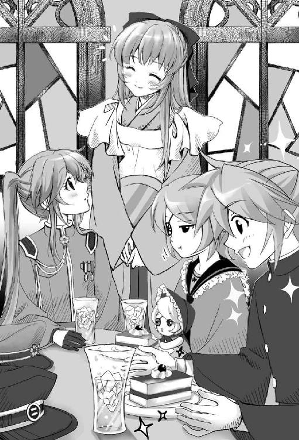
それは。
──元々この世界にいた『初音未來』は、いったいどこにいったんだろう？
屋敷に戻ると、未來はすぐに自分の寝室で寝間着に着替えた。
鈴と錬も今日は疲れたみたいで、大人しく自分たちの部屋に戻っている。
海斗はまだ近衛師団から帰ってきていない。執事──爺に訊ねると、今夜は遅くなると連絡があったそうだ。
鏡台の鏡に向かいながら、未來は考え事をする。
......ここがボクの部屋？ どう考えたって、それはありえない。海斗は将校みたいな軍服を着て子爵だとか云っていた。今が大正一〇〇年だなんて、もっとありえない。
そりゃあ、みんなどこか時代錯誤な恰好をしてたけれど......。大正は一五年でその時代の幕を閉じ、昭和を経て平成になった。それくらいの知識はいくら勉強の苦手な未來でも知っている。
まさか......。
無意識のうちに考えないようにしてきた言葉を、未來は心の中で呟いた。
──神隠し。
桜の木の下で聞こえた不思議な歌。
千本桜の前でいきなり襲いかかってきたオカマ忍者。
あれらは全部、こちらの世界で起きた現実？
未來は鏡台から思いたったように立ち上がった。
クローゼットを開け学生服を引っ張り出すと、ポケットの中を探る。
あった──『生徒手牒』。
ページを開いてみる。
帝都桜京學院中等科女子部二年生──初音未來。
そこには兄様から聞かされた學校名と生徒名が記されていた。
今度は学生服の隣に掛けてあった軍服を取り出す。
あった。胸ポケットに手帳が入っている。手に取り確認する。
表紙には星形のマーク。その下に『軍隊手牒』の文字。そして──。
神憑特殊桜小隊。
これがボクの所属する軍の部隊名。
未來は不安と同時に、ひとつずつ謎が解き明かされていくような奇妙な興奮を覚えた。
ボクはどうやらこの世界では本当に、『女學生』で『軍人』で──『華族のお嬢様』らしい。
未來は手牒を元に戻してから、学生服と軍服を再びクローゼットの中に掛け直した。ここにもドアノブ同様に、黒猫の尻尾を象った取っ手が付いている。どこかで見覚えがあるように思えたが、気のせいかもしれない。
未來は何かを決意したかのように、ぱたりと静かに扉を閉じると、大きなため息をついた。
もうこの世界が夢か何か、などという考えは、すっかり消えて無くなっていた。
ここで自分の主張を頑なに貫いたところで、今の問題が解決するとは思えない。
それは未來が元の世界の話を切り出した時の周囲の反応を見れば明らかだった。
無理を通そうとすれば、記憶喪失の治療と称して、病院送りにされてしまうかもしれない。
下手をすれば『未來』に化けた正体不明の異分子として捕らえられる可能性すらある。
そういった事態は避けたいし、なによりもこの世界の家族のみんなを悲しませたくない。
......特に今日の海斗の落ち込みようは相当なものだった。
だから未來は、元の世界に帰れるその時までこの世界の『未來』でいることに決めた。
きっとボクは、あの不思議な歌が聞こえた直後、鳴子姉が云っていた──『神隠し』に遭ったのだ。
そして、この世界でもボクは──初音未來。
この時代の空気を取り込むように深呼吸をし大きく伸びをすると、未來はそのまま寝台の上に身を投げ出した。振動で天井の煌びやかなシャンデリアのカットガラスがゆらゆらと揺れ、幻想的な瞬きを見せていた。
＊ ＊ ＊ ＊ ＊
「ううう......」
普段は人が滅多に訪れることのない幾重にも閉ざされた奥の部屋から、異様な呻き声が聞こえてくる。
明かりは灯されていない。室内は、真の暗闇である。
その中で、もぞもぞと芋虫のように畳の上を這いずっているモノがいる。
しかしこの暗闇では、それが人なのか動物なのか、はたまた魔物なのか、判別することは難しい。
それは、何が哀しくて泣いているのか。
或いは、何が恨めしくて苦しんでいるのか。
何に怯え、震えているのか。
這いずるモノは、いつまでも苦しげに慟哭し続けていた。
弐章影隠神隠
あなたが川に落としたのは、金のネギですか？ それとも銀のネギですか？
いいえ、ボクが落としたのは──。
「おはよー！ 未來姉ーっ！」
「!?」
錬は寝室の扉を開けるなり、未來の寝台の上に飛び乗ると、激しく布団を揺すって、まだ夢心地の彼女を起こそうとする。一緒についてきた鈴も、弟の行動を真似て未來の軀をゆさゆさと揺すり始めた。
「起きて、未來姉。早く起きないと學校に遅刻しちゃうよ？」
「んんー、學校って？」
何か夢を見ていたような気がしたのだが、双子の姉弟に素敵な起こし方をされて忘れてしまった。
「桜京學院のことだよ、海斗兄から學校にいくように云われたんじゃないの？」
その言葉に、未來は今日から學校にいくようにと、海斗から説明を受けたのを思い出した。
未來は、ごしごしと目を擦りながら緩慢な動作で上半身を起こすと、大きなあくびをひとつして、天蓋付きの寝台を降りて窓際へと向かった。
窓掛と窓を開けて、新鮮な空気を室内に取り込む。朝陽を浴びながら、大きく背中を反らして深呼吸をすると、ようやく目が覚めてきた。
未來はクローゼットから學生服を出して、鏡台の鏡の前で着替え始めた。下着の代わりに胸にはさらしを巻きつける。その隙に錬が未來の鞄に教科書を揃える。
「えっと、今日の時間割は......第一時限が裁縫でしょ、それから第二時限は算術で、その次が綴方、あとは唱歌と......」
「えーっ、裁縫!?」
「未來姉は、裁縫嫌いだっけ？」
「き、嫌いじゃないってば......ただ、得意じゃないだけで......」
──裁縫や唱歌はいいとして、サンジュツとツヅリカタってなんだろう？
未來は耳慣れない科目名に一抹の不安を覚えつつも、鏡台に向かって、着替えを続ける。
帝都桜京學院中等科の制服は、当然のことながら未來のいた時代とはデザインが違う。振袖が付いた黒いセーラー服に、太ももまである同色のニーハイソックス。黒い生地に白いラインが一本、上着、スカート、ハイソックスのそれぞれに入っているのがお洒落だ。未來はこの學校の制服がいっぺんで気に入ってしまった。
「どう。似合うかな？ サイズもぴったり」
「そりゃそうだよ。未來姉の制服だもん」
錬の云うとおりではあったが、この時代の未來と自分が、体型も全く同じだということに改めて感動する。
「あっ。リボン、忘れてるよ、未來姉」
鞄と巾着袋を片手に寝室を出ようとすると、錬が呼び止めた。
「リボン？」
リボンならたった今、結んだばかりだ。胸の赤いリボンを見下ろして未來は首をかしげた。
「髪を結ぶリボンだよ。あ、覚えてないのか。未來姉は、いつも頭の両脇に結んで學校にいってたんだ」
「そうなんだ。じゃあ、ボクも同じようにしなきゃね」
未來はクローゼットに引き返す。
「違うよ、リボンは鏡台の引き出しの中だよ」
現在の部屋の持ち主より、錬の方が詳しいことに未來は苦笑した。おそらく錬と鈴は、毎日のように『未來』を起こしに来ていたに違いない。昨日の朝は女中が部屋に来たが、それはこの双子なりに気を遣ってくれていたのかもしれない。
未來は鏡台の椅子に腰掛けて引き出しを開けた。錬の云った通り、黒いリボンがふたつ並んで入っていた。元の持ち主の性格を表すかのように、ふたつのリボンは一ミリの狂いも無く整然と並べられていた。この時代の未來は几帳面な性格なのかもしれない。
髪をとかし、最後に左右の髪を黒いリボンで結び終えると、未來は両手を水平に伸ばして、双子の姉弟の前でくるっと一回りしてみせた。短めのプリーツスカートと、床に付きそうなほど長い振袖が遠心力で優雅にたなびく。
「着替え完了！ お待たせ、錬、鈴」
華族である女學生のほとんどが人力車や車を使って登校する中、未來たちは巾着袋と鞄を手に徒歩で學校へと向かっていた。
錬から帝都桜京學院の話を聞きながら歩く。幸いにして屋敷から學校まではそれほど遠くはないので毎朝の通学は少しも苦ではないらしい。
しかし、なんだかまるで転校生になった気分だ。
三人とも同じ帝都桜京學院に通っていると聞いて内心ほっとしていたのだが、錬と鈴は初等科。しかも、男子部と女子部は校舎が別々。共学は存在しないとのことだった。
大正一〇〇年とはいっても、男女に厳格なところは未來の考える大正時代のイメージそのままだ。
ひらひらと舞い散る桜の花びらを眺めながら歩いていると、突然、背後で車のクラクションが鳴り響いた。未來は慌てて錬と鈴の手を引いて道の端に寄る。
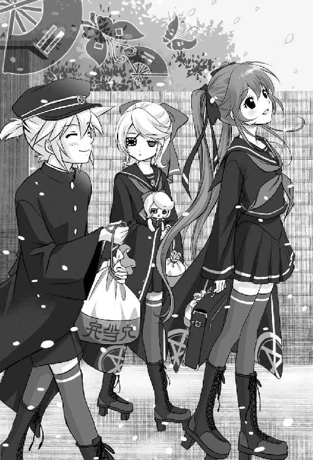
屋根のない黒塗りの車が、ゆっくりとした速度で目の前を通り過ぎていく。と思いきや、未來たちを追い越してすぐに停車した。徒歩の未來たちが車に追いつくと、その車の後部座席に座っていた女學生が、未來たちを振り返って親しげに声を掛けてくる。
「ご機嫌よう。未來さん。今日も良いお天気ですわね」
「ご、ご機嫌よう──え、えっと」
誰だろう？
とっさに挨拶を返したが、もちろん未來の知らない女學生だ。同じ制服を着ているところを見ると、帝都桜京學院中等科の生徒だろう。後部座席に座ったまま声を掛けてきた女學生の髪型は、漫画でしかお目にかかれない『くるくるの巻き毛』をしていた。気品の漂う整った顔立ちで、おそらく彼女もお金持ちのお嬢さまに違いない。
「なにをきょとんとしていますの？ 幼馴染みの顔をお忘れ？」
「お、幼馴染み？」
未來は助けを求めるように、こっそりと錬の方を見た。
「裏の大きなお屋敷に住んでる御前賀家の意地悪悠那だよ」
「そっ、そこのちっちゃいの！ 聞こえましたのよ！」
悠那という女學生は、キッと錬の顔を睨んだ。錬の方は、そっぽを向いて知らん顔だ。
──この二人、仲が悪いのかな？
「未來さん。もう學校へいらして平気なの？ わたくし、父から聞きましたわ。なんでも、名誉の負傷をなされたとか......でも見たところ、どこも悪くなさそうですのね。それとも負傷したというのは、犯人を取り逃がした言い訳かしら？」
「未來姉が悪いのは頭の中だけだぞ！ 見た目よりずっと酷いんだ！」
錬......かばってくれるのは嬉しいけど、その表現は様々な誤解を招く。
「犯人だって僕らで絶対捕まえてやるんだ！」
「あら？ ずいぶんと威勢が良いのね。まあ、あなた方、鏡音姉弟は『神憑』というだけで音家に住まわせてもらっているのですから。せいぜい海斗様のお役に立てるように頑張らないとね」
それだけ云うと、悠那は運転手に命じて車を走らせた。その瞬間、タイヤが小さな水たまりを踏んで、泥水が運悪く未來の制服のスカートに跳ねてしまう。眠っている時は気づかなかったが、朝方、少し雨が降ったのかもしれない。
「あっ......」
未來は思わず自分のスカートを見つめた。
「追いかけよう、未來姉！ 謝らせるんだ」
未來がしょんぼりとしていると、錬が云った。
「い、いいよ。わざとじゃないし。これくらい......」
「未來姉がそう云うならいいけど......でも、悠那姉はいつも未來姉に意地悪だから、あまり好きじゃないんだ。あんなのが中等科の生徒会長だなんて世も末だよ」
「え？」
未來姉に意地悪？
てっきり仲が悪いのは、悠那と錬のことだと思ったのだが、どうやら違ったらしい。だがそれよりも、悠那はもっと気になることを云っていた。
──神憑というだけで音家に住まわせてもらっているのですから、せいぜい海斗様のお役に立てるように頑張りなさい──。
これはどういう意味だろう？
「大丈夫？ よかったらこれお使いになって」
突然、見知らぬ──といっても大抵知らないが──女學生にハンカチを差し出されて、未來は受け取ろうかどうか迷った。長い髪に京紫のリボン。未來より背が高く大人びている。おそらくは上級生だろう。
「あ、でも、ハンカチが汚れてしまうから......」
「うふふ。おかしなことを云うのね。いいのよ、ハンカチは汚れるものなの」
なんだかとっても素敵な言葉に、未來は彼女の瞳を改めて見つめた。
「じゃ、じゃあ、お借りします。あの、あとで洗って返します......」
「いいのよ。お気になさらないで。わたしは教えてもらった通りにしただけだから」
それだけ云うと、彼女はやや憂いを帯びた優しげな微笑みを残し、先にいってしまった。
「親切なお姉さんだね。悠那姉とは全然違うや......あ！ そのハンカチいい匂いがする」
錬がハンカチを貸してくれた女學生の後ろ姿を見送りながら云った。
「それじゃ、男子部はこっちだから、僕ももういくね。鈴のこと、頼んだよ未來姉」
錬は元気よく敬礼すると、帝都桜京學院の男子部の正門へと駆け出していく。
「錬も頑張ってね。鈴のことは任せて」
未來の言葉に振り返りこちらに手を振る錬に、未來は先ほどの親切な上級生に手渡されたハンカチを振って応えた。
上品で甘くどこか妖しい香りが鼻孔をくすぐる。
未來がハンカチを拡げてみると、隣でぼーっとしていた鈴が珍しく反応して未來の手元に視線を移した。
「ほら見て、鈴。名前が刺繡されてる......よかったぁ。洗って後日、何かお礼と一緒に返しにいかなきゃ」
未來が向き直ると、鈴はまたいつものようにただ宙をぼんやりと見つめていた。
廊下の床はリノリウムではなく、天然の木材でできていた。一歩足を踏み出すごとにぎしぎしと床が軋むのがなんだか楽しい。床も天井も教室の壁も全部木材でできているというだけで、こんなに心が安らぐなんて知らなかった。
未來は鈴に付き添って初等科の校舎までいこうと考えていたが、逆に鈴に中等科にある未來の教室の前まで案内されてしまった。鈴はその間も一言も喋らずに、未來の制服の袖の端を小さな手でぎゅっと握り締めて歩いていたので、未來はてっきり、鈴が初等科の自分の教室へと向かっているのだと勘違いしていた。しかし、それが間違いだと気づいたのは、すでに未來の教室の前に到着し、鈴が足を止めた後だった。
『二年桜組』
右から左へとそう書かれている。
「ここ、ボクの教室？ もしかして、ボクが自分の教室がわからないと思って案内してくれたの？」
「............」
鈴は人形のような瞳を未來に向けただけで、言葉を発するどころか頷くことすらしなかった。ただ、どこかぼやっと不思議そうに表情を揺らしている。それでも、未來には鈴の気持ちがわかったような気がした。
「ありがとう、鈴。すごく助かったよ」
未來が鈴の頭を撫でて云うと、鈴はしばらくされるがままに撫でられていたが、そのうちふらふらとした足取りで今来た道を引き返し始めた。今度こそ、初等科の教室へと向かったに違いない。
このまま鈴を初等科に一人でいかせちゃっていいのかな？
一瞬、鈴の背中を追って歩きかけて未來は立ち止まった。鈴を初等科に送ったら送ったで、再び鈴は未來を中等科の校舎まで送ろうとするだろう。そんな風に二人していったり来たりしていたら、二人とも完全に遅刻だ。
未來は鈴の背中が見えなくなるまで見送って、それから思い切って自分の教室に入った。すると、いきなり複数の女學生に声をかけられた。
「ごきげんよう、初音さん」
「ごきげんよう、未來さん」
「......ごっ、ごきげんよう」
控えめな声で上品に朝の挨拶をする彼女らに、未來もとっさに応える。
うわあ。本格的なお嬢様學校だ！
未來を含め、この帝都桜京學院に通う女學生は、そのほとんどが元は公家や武家の家柄の娘たちだ。予鈴の前に立ち話に興じている彼女たちは、確かに皆気品が漂っているように見える。
幸い、未來に違和感を感じている者は誰もいないようだ。學校へ向かっている間は、転校生になった気分でいたが、こうしているとまるで、何年も前からこの教室で勉学に励んでいたような気分になってくる。が、それがただの錯覚でしかないことは、未來が先ほどから、黒板の前をいったり来たりしていることからもはっきりしていた。
自分の席が、わからないのだ。
といって、「わたくしの席はどこだったかしら？」などと訊ねるのもヘンなので、未來は始業時間が近づくとともに次第に空席が埋まっていくのを眺めながら、自分の席はいったいどこなのだろうと教室内をさまよい歩いていた。
そんな未來の不自然な行動に気づいたのか、女學生の一人が未來に訊ねた。
「どうかなさったの、未來さん？」
「う、うん、まあ......ボクの席ってどこだっけ？」
未來は鼻の頭を指で搔いて言葉を濁す。
「まあ、ふふ。朝からいったい何の御冗談？ 未來さんのお席は、私のお隣でしょう？」
女學生は口もとに手を当てて上品に笑うと、「こっちよ」と未來の手を引いて窓際の一番後ろの席に案内してくれた。
「ここが初音未來さんのお席。でも、未來さんが御冗談を云うなんて、珍しいこともあるのね」
そう云ってこの女學生は未來の隣の席に座ると、愛想良く微笑んだ。
「そういえば、この間の話......」
「えっ、なになに。なんの話？」
「私もね、お父様に、いま話題の活動写真に連れていって頂いたの」
「活動写真ってナニ？」
「え、何って......未來さんがこの間、御兄様に活動写真に連れていって頂いたってお話ししていたでしょう？」
訝しげな表情で女學生は未來の顔を見る。
いや......それ、云ったのボクじゃないから。
なんて説明しよう。未來が迷っていると、予鈴が鳴り響いた。同時に教室に先生が入ってくる。朝の挨拶を終えると、開口一番に先生が云った。
「先日、初音さんは軍の任務で頭部を負傷しました。そのため、一時的に記憶を失ってしまったのだそうです。いいですか、皆さん。級友として、初音さんの記憶が戻るまで、できるだけ手助けしてあげてください」
......そういえば昨日、海斗は學校には連絡しておくと云っていた。
突然のことに、教室内がざわめく。視線が窓側の一番後ろである未來の席に集中した。
「ご免なさい、私、そんな事情があったなんて知らなくて。未來さんの御冗談だとばかり......」
「えっ、ううん」
未來は首を横に振った。
先ほど未來の手を引いて席に案内してくれた隣の席の女學生が、未來に同情して泣き始める。慌てる未來に、女學生は改めて、多々良琴子よと名乗った。
一時限目、裁縫の授業が始まった。この教室ではどうやら、前回の授業の続きで『袴』を縫っているらしい。女學生たちは各々、教室の後ろにある生徒用の『棚』に作りかけの袴を取りにいくと自分の席に戻った。未來も彼女たちに倣って、生徒用の棚に自分の名前を探す。その筆跡まで自分とそっくりの名札がある棚に、未來の作りかけの袴があった。色の濃い、紫色の袴だ。
羽織姿の年配の女教師が、前回の授業のおさらいを軽く口頭で説明。続きを縫い始めるように生徒たちに指示を出す。
未來は縫いかけの袴を机に拡げて、早速、慣れない裁縫に取りかかる。
周りの女學生らが慣れた手つきで淡々と作業をこなしているなか、未來が糸を針の穴に通すのに四苦八苦していると、バタバタと慌ただしく廊下を駆けてくる足音が聞こえてきた。
生徒たちは皆、いったい何事かと裁縫の手を止めて廊下を注視する。
足音は未來たちの教室の前で止まった。ノックの後、扉が開くと初老の女性の難しい顔が現れ、応じた先生が廊下へと出ていく。
「またなにかあったのかしら。あれ、三年の學年顧問の先生よ」
琴子が未來に囁く。
勿論、未來にわかろうはずがなかったが、琴子の云い回しに疑問が残る。
──また？
しばらくして裁縫の先生が教室に戻って来た。深刻な面持ちで生徒たちを見回す。
「三年の九条さんが、登校後、行方不明になったそうです。事件の可能性があるので、本日は休校とします。皆さん、寄り道はせず帰宅するように」
教室内は、先ほどよりもずっと大きなざわめきに包まれた。皆、近くの席同士で顔を見合わせている。
學年顧問は再び廊下を駆けていった。おそらくこの後、一年生の教室も同じように回るのだろう。
授業終了の鐘が鳴り、重いため息と共に裁縫の先生が出ていく。教室内は再び騒がしくなった。
「九条先輩って......あの有名な先輩よ」
「有名？」
多々良琴子が帰宅の支度をしながら、声を潜めて囁いた。未來は訊ね返す。
「所謂、成金の新華族。九条家はお金で爵位を買ったのよ」
琴子が露骨に眉を顰めた。彼女が九条のことをあまりよく思っていないのが未來にもわかる。
未來は今朝方、先輩に借りたハンカチをポケットから取り出して、刺繡の名前を確認する。
──九条。
「未來姉っ！」
突然の男子の声に、教室の誰もが振り向いた。未來も顔を向ける。廊下の窓から身を乗り出して、錬がこちらに手を振っている。
「れ、錬!?」
その隣には鈴もいた。でも、どうして男子部の錬が、女子部の教室に!?
未來は慌てて廊下に駆け出す。
「駄目じゃない。ここ、女子部の校舎よ。錬が入って来たら、大騒ぎになっちゃう」
未來が一人おろおろしていると、錬はさも当たり前のように笑った。
「學校公認だから平気だよ。未來姉は覚えていないかもしれないけど、いつも事件の度に未來姉の教室に来てたんだ。ほら、その証拠に誰も驚いてないでしょ？」
未來は背後を振り返った。そういえば皆、錬の声に振り返りはしたけれど、騒ぎにはなっていない。それどころか『かわいい』『中に入っておいで』なんて云って手招きしている子たちもいる。どうやらこの教室では、錬はマスコットのような扱いを受けているらしい。
「錬がこっちに来たのって、九条先輩が行方不明になった事件のこと？」
「そう。あたしたちの任務だからよ」
気配も無く背後から掛かる声に、未來は慌てて振り返る。
いつの間にか、やけにスタイルの良い眼鏡を掛けた女教師が立っていた。未來はその教師の顔を見上げて目を丸くする。
「め、鳴子姉!?」
ど、どうして鳴子姉が學校の先生に!?
未來は思わず大きな声を出しそうになって、慌てて声を潜める。
「近頃、この學院で行方不明になる生徒が多いから、時々潜入調査していたのよ」
「潜入って......鳴子姉が？」
「そうよ、時には庭師、時には教師、時には女學生。あたしは桜小隊の密偵なの」
時には......女學生？
未來と錬はどちらからともなく顔を見合わせた。
「それよりあなたたちも聞いたわね？ 中等科三年の九条蘭が行方不明だということ」
未來と錬は頷く。鈴は文化人形を抱えて、誰もいない廊下を見つめている。
「もうこの學院の行方不明者は彼女で三人目。明らかにここの女學生が狙われていると見てまちがいないわ。それに、今回は犯人が証拠も残してくれたし」
「証拠？」
鳴子は頷き、手にしていた鞄を未來に渡した。
「彼女の鞄よ。校内の涸れ井戸の近くに落ちているのを見つけたわ。鞄の中には......ううん、実際に見た方が早いわ。でも驚かないでね」
未來が胸に抱きかかえた九条蘭の鞄を、鳴子が開けた。その瞬間、鞄の中に黒い虫が蠢いているのが、未來の目に入る。未來は鞄を抱えたまま、投げ出すことも忘れて悲鳴を吞み込んだ。
な、なに今の、黒い虫!? 九条先輩の鞄の中に、どうしてあんな気持ち悪い虫がたくさん!?
「驚かないでって最初に云ったのに......」
「こんなの、誰だって驚きます！」
「よく見て、未來。それは虫じゃないのよ」
「い、厭！ 気持ち悪い！」
ようやく金縛りが解けたように、未來は鳴子に鞄を突っ返した。
鳴子は鞄を受け取りながら苦笑する。
「ごめんなさい。でもこれを見せれば、未來が何か思い出すかも知れないって、錬が......」
錬〜〜〜〜〜っ！
未來が睨み付けると、錬はそっぽを向いて、尖らせた唇からシューシューと鳴らない口笛を吹き始めた。そんな錬を見て、未來は怒る気力が急速に失せる。
「この鞄の中にいる虫のことを、あたしたちは『影虫』って呼んでいるわ。影のような虫だから」
「影虫......でも、その影虫っていうのと九条先輩と、いったい何の関係があるの？」
未來はまだ心臓の動悸が治まらない。鞄から目をそらしながら訊ねる。
「影虫に魅入られるというのはね、本物の化けもの──『影憑』になる前兆なの。『影憑』は、人間の生命力を食い物にして、どんどん肥大化する化けものよ。九条蘭が、影憑の次の犠牲者になる前に、捜し出さないと大変なことになるわ」
鳴子は早口で簡潔に説明した。鳴子自身、急いでいるのだろう。
未來は訊きたいことがいくつもあったが、鳴子は説明を切り上げる。
「詳しいことは道々錬から聞いてちょうだい。あたしは、この學院内にまだほかにも影虫が残っていないか確認しないとならないから。大丈夫。すぐに追いつくわ」
「追いつく？」
「僕たちで、九条先輩を捜して、化けもの退治をするってことだよ。それが僕ら、神憑特殊桜小隊の任務なんだから」
錬は、とんでもないことを、さらっと補足した。
化けもの退治......。
未來は昨夜見た軍隊手牒を思い出す。
──神憑特殊桜小隊 初音未來。
昨日、カフヱで錬が云っていたことは本当だったのだ。
未來と錬、鈴の三人は、屋敷にも戻らずに、制服のまま帝都の街に出た。
「ねえ、錬。本当に九条先輩はこっちの方角にいるの？」
訊ねる未來に、錬は不敵な微笑みを向けた。
すでに随分歩いて、帝都の外周──砦の目の前まで来ている。
「実はね、鈴には遠距離からでも影憑の居場所がわかるんだよ」
「えっ、鈴にそんなすごい能力があるの!?」
何の手がかりもなく捜し歩いているのかと思っていたけれど、鈴にそんな能力があるのならば、影憑になりかけているという九条先輩を捜し出すことも出来るかも知れない。
未來は自分の袖を摑んで付いてきている鈴の顔を顧みた。
しかし、鈴は相変わらず一言も口をきかないまま、胸に例の文化人形を大切そうに抱きしめて、ガラス玉のような瞳でうつろな視線を前方に向けている。
とても目的を持って歩いているようには見えない。
鈴は右目に眼帯をしているけど、......もしや、その隻眼に何か秘密でもあるのだろうか。
「まだ特訓してる最中だけど、そこそこ見つける確率は高いと思うよ。あっ！ 見て、未來姉!!」
錬が前方を指さして叫んだ。まさかもう九条先輩を見つけたの!?
「駄菓子屋があるよ、未來姉！」
「えっ」
思わず未來は転びそうになった。
鈴が未來の袖から手を離して、トコトコと駄菓子屋に入っていく。見るからに嬉しそうに錬もその後に続いた。
未來は茫然とした。本当に影憑を探知する能力があるんだろうか？
まさか、駄菓子屋に来たかっただけなんじゃ......。
「未來姉、鈴がこれ欲しいって。僕にも買って！」
駄菓子屋の中から、錬が叫んだ。疑念が確信へと変わる。未來も小走りに駄菓子屋の中に入った。
「あのね、二人とも。真面目に九条先輩のことを捜してくれないと」
あめ玉やら何やらを物色している双子の姉弟を未來は咎める。
「ちゃんと捜してるよ。確実に対象には近づいてるはずだから、これ買って」
「本当かなあ」
怪しいものだった。もしや、からかわれているだけなのでは......。
そんな疑念まで脳裏に浮かんでくる。
仕方なく未來が制服のポケットに小銭でも入ってやしないかとさぐっていると。
「も、もしかして、未來さんじゃないですか!?」
背後からすがるような声がかかった。まるで迷子になった子供が出すような声だ。
振り返ると、買い物かごを下げた流歌が、真っ赤になった目を手の甲で何度も擦っている。
「ど、どうしたんですか、流歌さん。こんなところで」
「迷子になっちゃったんです......よかったぁ。知ってる人に出会えて」
流歌は両手で顔を覆うと、安堵のためか、うわっと泣き出した。駄菓子屋にいた他の子供たちが、何事かと流歌を取り囲んで突っ突き始める。
「と、とりあえず、これで涙を拭いてください。あと、本当に申し訳ないんですが、小銭あったら貸してください。今、手持ちが全然無くて」
「え？」
未來からハンカチを受け取り、涙を拭いながら流歌は駄菓子屋の店内を見やった。
「あら。未來さん......このハンカチ、九条って書いてありますよ？」
あ、しまった。九条先輩に返すハンカチを渡してしまった。
「あのう、仲、いいんですか、この人と」
「い、いえ。ちょっとハンカチを借りるときに一回だけ話したことがあるだけで......」
未來がそう説明すると、何故か流歌はぱあっと明るい顔をする。
店の中では、すでに鈴と錬が、お菓子をいくつか食べ始めていた。流歌は未來の代わりに駄菓子屋の店主に双子の姉弟が食べた代金と、あと花見団子を二つ追加して払う。
「未來さんもおひとつどうぞ」
「あ、ありがとう」
未來は流歌から花見団子を受け取った。駄菓子屋の前に置いてある板を貼り合わせただけの簡素な長椅子に二人して座って串団子を食べる。
「美味しいですねぇ〜」
流歌が口をもぐもぐさせながら、ほくほく顔で云った。
「やったー！ 流歌姉が買ってくれたくじ引きで、絵本が当たった！」
「え、お金は貸しただけなんですけどぉ......って、わあ、絵本って一等賞じゃないですか！」
錬が嬉しそうに持つ絵本の名は、『地球のっとり大侵略大作戦』......大が二つもついていて、如何にも凄そうだ。
表紙は、火星人が地球を侵略している絵だった。
「わたし、なんだかこの絵の『火星人』に、すごく親近感を感じます......」
流歌はこの絵本のどこに興味を引かれたのか、錬と鈴と一緒になって夢中で絵本を読み始める。
えっと、なにをしているんだろう。今は一刻も早く九条先輩を捜さなければならないのに。
「困っている人を助けるのも、僕らの仕事だよ」
困っている人......迷子の流歌と一緒に絵本を読みながら、錬が云う。
「流歌姉は、どうしてこんなところで迷子になっていたの？」
流歌が働いているカフヱは帝都でも中心部にある。この辺りはもうかなり砦に近い。どこかで買い物をして帰るならば、ほとんど反対方向に歩いていたことになる。
「わたしにもわからないんですけど、気がついたら迷子になってたんです。帝都って、狭いくせに道が迷路みたいに入り組んでて厭になっちゃいます」
それには未來も頷いた。錬たちと一緒だからまだいいようなものの、彼らがいなかったら未來もとっくに迷子の仲間入りだった。特にこの『砦』の内側は複雑で、増築に次ぐ増築で、建物を何層にも無秩序に積み重ねた迷路のような造りになっている。
「高いところから街を見渡せば、帰り道がわかるんじゃないかと思って、それで砦に向かって歩いていたんです。でも、考えてみたらわたし、高いところって苦手で」
流歌は砦を見上げ、自分の頭をこつんと軽く叩いた。
「せっかくここまで来たんだから、ここから街を見渡してみる？ 僕、いい場所を知ってるんだ」
名案とばかりに錬が云った。それを未來が制止する。
「駄目だよ。ボクたちは九条先輩を捜さないといけないんだから」
「勿論、街を見渡しながら九条先輩も捜すんだよ。鈴だって、その方がきっと早く見つけるだろうし」
「本当かなあ......」
未來は疑いのまなざしを双子の姉弟に向ける。捜すと云っても、別の駄菓子屋を探すだけのような気がしてならない。
「未來さんたち、誰かをお捜しなんですか？」
訊ねる流歌に、未來は行方不明になった女學生の話を聞かせた。「じゃあ、このハンカチの持ち主が......はぁ、それは心配ですよね」と流歌は云う。期待していたわけではなかったが、やはり流歌は何も知らないようだ。となると、やはり頼りになるのは、まだ特訓中？の鈴の『探索能力』しかない。
今のところ、かなり頼りないけれど。
「わかった。錬、そこに案内して」
それしか他に方法はなさそうだった。
駄菓子屋の横にある砦の街側の扉を開けると、複雑に入り組んだ非常階段があった。
未來たちは非常階段を上り、所々錆色に朽ちた鉄骨群の脇に腰を下ろした。
流歌は何度も下を見ては「ひっ」「ひっ」と短い悲鳴を上げて、未來にしがみつく。
「どうしてわたしまで付いてきてしまったんでしょう......」
足元は椅子代わりの鉄骨のみ。目も眩むほどずっと下に帝都の街並みが見える。
いきなり、蒸氣の音が近くで聞こえた。
流歌はビクッと背中を丸めながら耳を塞ぐ。
「今の音は帝都鉄道だよ。砦の周りには、月に向かう蒸氣機関車が走ってるんだ」
「て、帝都鉄道!? 月!?」
未來は目を丸くした。なにかの冗談かと思ったが、
「ほらあそこ、見てください、未來さん！」
流歌が指さす空。未來は視線を上げて目を見張った。
──蒸氣機関車が飛んでる！
未來は思わず口をぽかんと開けて空を飛ぶ蒸氣機関車を眺めた。
「蒸氣機関車が......そっ、空を......」
「何をそんなに興奮しているのさ、未來姉？ そりゃ、飛ぶよ。蒸氣機関車なんだから」
当然のように錬が云う。
「未來さん、ご存じなかったんですか？ 有名ですよ、帝都鉄道」
二人にそう言われても、どうにも未來には、ピンとこない。
しばし呆気にとられて、未來は空を見上げていたが、やがて空を飛ぶ蒸氣機関車は見えなくなった。
「すごい。ボクも乗ってみたい」
未來は興奮したように云った。
「え、あんなの乗るもんじゃないですよ。怖いですよ。高いですよ」
流歌がおすすめできませんといった感じで首をぶんぶんと横に振った。まるで、乗ったことがあるような口ぶりだ。
そこへ。
〈──影憑〉
突如、鈴の文化人形が呟いた。
「ど、どこに？ 鈴!?」
未來と錬は、同時に振り返って鈴の顔を見る。すると、文化人形が鈴の手を離れて自分で歩き始めた。鈴もとことこと、その文化人形を追うように無言で歩き始める。
「な、なにがあったんですか!? それと、どうして人形がひとりでに歩いているんですか!?」
一人だけ事情を知らない流歌が、慌てて未來に縋り付いて説明を求める。
未來ですら完全に事情を把握しているとは云いがたい。
「流歌さん、詳しい説明はまた後で！ ボクたちが捜してる人が、すぐ近くにいるかもしれないの。後で必ず迎えに来ます。流歌さんは、ここで待っていてください」
「嗚呼、未來さん！」
怖々と鉄骨にしがみついている流歌を置き去りにして、未來たちは先ほど出たばかりの扉からもう一度、砦の中へと戻る。
もし本当に砦の中に影憑が現れたのならば、砦の外にいる流歌はかえって安全だ。
先に扉から砦の中に入っていた錬が唐突に叫んだ。
「未來姉！ あれ見て！」
錬が指さす夕闇の中、さっきの駄菓子屋の店の前。
帝都桜京學院の制服、乱れた長い髪に京紫のリボン。行方不明の九条蘭と思われる少女だった。鈴の能力は本物だ。でも、もう一人──異様にどす黒い色をした『何か』がいる。
「影憑だ！」
「か、影憑!? あれが!?」
人の形をした黒い影のような化けものが、未來たちの見ている前で、九条の白い首筋に嚙み付いた。
その瞬間、九条の軀がビクッと跳ねて、恍惚とした吐息が漏れる。
「いけない。早く九条先輩を助けないと！ 影憑に嚙まれたら、人間は──」
錬が云い終わらぬうちに、影憑は九条の首筋から唇を離した。
「遅かった。もう九条先輩は......」
悔しそうに歯嚙みする錬を嘲笑うかのように、影憑は九条を残し、用が済んだとばかりに足元に落ちる自らの影の中に消えていく。
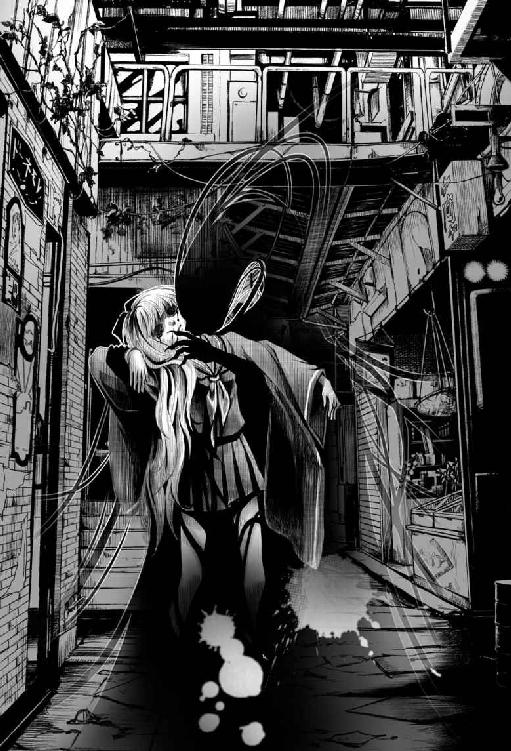
「待て！」
錬は鋭く叫び、水没するように地面へと消えた影憑を追おうとして、次の瞬間に足を止めた。
その場に残された九条が、変わり果てた姿で、こちらを見ていたからだ。
ぽっかりと穴が開いたような目からは、漆黒の体液がぼたぼたと流れ落ち始め、まるで黒い涙を流して助けを求めているようにも見える。
初めて見る影憑を前にして、未來は立ちすくんでしまった。化けものを倒すのが仕事とはいえ、未來には肝心の影憑への対処法がわからない。
「未來姉、急いで！」
「い、急ぐって!? あっ、鳴子姉に報告を......」
「違うよ。そんなことしてたら間に合わない。未來姉の『桜大幣』で影憑になった九条先輩を祓うんだ！」
「さ、さくらおおぬさって!?」
「影憑をお祓いする神器だよ。未來姉じゃないと使えないんだ！」
「神器って!? だってそんなのボク、どこにも持ってないよ!?」
「言霊を乗せて、『桜大幣』って叫ぶんだ。頑張って、未來姉なら必ずできるよ！」
錬は魔法少女アニメかなにかに出てくるマスコット的な動物が云うような説明をした。
ここまできたら、引き下がるわけにもいかない。錬の言葉を信じて未來は構える。
「わ、わかったわ。本当はよくわかってないけど、やってみる──桜大幣!!」
......。
何も起きない!?
やっぱり、いきなりそんな、魔法少女みたいなことが出来るはずがない！
「危ない、鈴！」
錬の悲鳴が上がった。未來は慌てて振り返る。影憑は、何も出来ずに立ち尽くしている未來には見向きもせず、鈴に向かって突進していた。
鈴は何もわかっていないような顔で、まるで本物の人形のように微動だにしない。
「鈴っ！」
咄嗟に未來は疾走。自分が常人を遥かに超えた速度で数メートルの距離を一気に走ったことにも気づかず、そのまま体当たりするように鈴を抱きしめて、ごろごろと地面を転がる。
その拍子に、鈴の振袖から光り輝く蝶蝶が何匹も飛び立った。
「え、なに!? 鈴の振袖の中から、蝶蝶がっ!?」
「未來姉、それは蝶蝶じゃないよ。『蛾』だよ！」
「蛾!?」
思わず鈴から離れようとした。しかしどういうわけか、鈴と一緒に地面に転がったまま軀が全く動かない。
「鈴は危険を感じると毒の『蛾』を出すんだ。それが鈴の『神器』なんだよ。鈴の蛾の鱗粉に触れると、軀が麻痺しちゃうんだ。すぐに鈴から離れて！」
「それを先に云って!!」
すでに未來は、鈴の光り輝く蛾が撒き散らす鱗粉をたっぷりとその全身に浴びている。
軀が痺れる！ ち、力が入らない......。動けない！
「未來姉、逃げて！」
恰好の獲物だと思ったのか、影憑は動けなくなった未來に標的を変える。錬は神器である扇を両手に握り、影憑と未來との間に入ろうとする。しかし、間に合わない。
──海斗兄様!!
未來は思わず胸中で叫んでいた。
その瞬間、目の前で銀光が閃く。
わずかに先んじ、影憑を一刀両断したのは、まぎれもなく海斗の軍刀だった。
影憑は氷の彫刻のように凍りついたかと思うと、次の瞬間に四散した。
その場には人の形に戻った九条先輩が倒れていた。
「間一髪、間に合ったな。これがお前の學校で行方不明になっていた女學生か？」
「か、海斗兄様!? どうしてここに!?」
動けない未來は、海斗に抱き上げられながら訊ねた。
九条を斬った軍刀を鞘に収めながら海斗は冷静に答える。
「鳴子から報告を受けて急いで駆けつけた」
見ると、その鳴子は、倒れている九条蘭の傍に片膝をつき、彼女の軀を確認している。
「九条先輩を......殺してしまったの？」
未來は影憑に取り憑かれた状態の九条蘭を海斗が軍刀で斬りつけるのをその目で見ていた。
恐る恐る訊ねる未來に、鳴子は微笑する。
「海斗の『雪清』は、あなたの『桜大幣』と同じく、魔だけを祓うわ。安心して。この女學生はかなり衰弱しているけれど、命に別状はないから」
「本当に？」
「俺たちがお前に噓を云ってどうする」
「う、うん......ごめんなさい」
未來は、自分が全く役に立たなかったことを悔やんだ。
「お前たちが無事ならばそれでいい」
海斗は麻痺した未來を抱きかかえたまま慰めるように云う。
「そうだよ。みんな無事で良かったよ、未來姉！」
錬が笑うその横には、鈴が人形を抱いて立っていた。鈴も一緒に蛾の鱗粉を浴びたはずなのに、いつも通りの顔をしている。
──ボクだけ痺れて動けないなんてずるい......。
屋敷に戻った後、夜中になってやっと未來は動けるようになった。寝台から起き出して、蠟燭の明かりを手に、浴室へと向かう。今日は學校に軍の任務にと大忙しの一日だった。
授業中、裁縫が上手くできなかったけれどなんとかやり過ごせたし、行方不明になっていた九条蘭も見つけることができた。もちろん、未來は自分が役に立てたとは思っていないが、それでも、結果的に先輩を助けることができたのは、良かったと思う。
影虫に取り憑かれて影憑になりそうになった九条先輩はかなり衰弱していたが、軍の病院でしばらく手当てが必要だが、命に別状はないとのことだった。
何もできなかったけれど、九条先輩が助かったというだけでも救いだ。
未來は熱い湯船に肩まで浸かって、今日一日の疲れを取る。目をつぶると、遠くの空から汽笛の音が聞こえてきた。こんな夜遅くにも、帝都鉄道は月へ向かって飛んでいくらしい。
帝都鉄道......。
砦の線路から月へと飛び立つ、蒸氣機関車。
あれ？
何か忘れているような気がする......。
未來は、はっとして湯船から立ち上がった。
「あっ。砦に流歌さん、置いてきちゃった！」
＊ ＊ ＊ ＊ ＊
「ううう......また、何の罪もない魂を......」
奥座敷の主は、紙のような白い顔に、死相を貼り付かせた若い女が、目の前の畳の上に横たわっている様を見て呻いた。
しばらくすると、その死んだような女から視線をそらし、燭台に灯した明かりを手に、ゆらゆらとよろめきながら歩をしるす。主の向かう場所には、大きな姿見があった。
何度もためらい、だがそれでも、主はおそるおそる姿見を覗き込む。
「ううう......やはり、まだ贄が足りないというの......」
姿見に映る己の姿は、誰が見ても干涸らびた老人......枯れ枝のような手足や、大きく目の窪んだ頭部はさながら骸骨だ。最早、主の姿は、即身仏か木乃伊のようであった。
主は深いため息と共に、恨めしげに呟く。
「誰か、誰か......」
「はっ。こちらに」
すぐ外に控えていた黒装束の男が、一寸ほど襖を開けて応える。
「新しい『贄』を捜して連れてくるのよ。若く美しい娘を。この身が朽ちて手遅れになる前に......」
「はっ！」
控えていた黒装束の男は短く答えると、音もなく気配ごと消失した。
参章幻想鹿鳴館
帝都の街に一五時を告げる桜京駅時計台の鐘の音が響き渡る。
未來は兄である海斗との待ち合わせ場所──帝都の中央に在る神域、御神木である千本桜へと息を切らせながら向かっていた。
二つ目の鐘で、お堀に架かる橋、深紅に染まる千本鳥居が見えてくる。
鳥居の間から零れる陽光と桜の花びら、延々と続く紅の迷宮に時折心を奪われそうになりつつも、未來は千本鳥居の下を疾風の如き速さで潜り抜けた。
千本鳥居を抜けると、それまで紅一色だった世界が一気に桜色へと塗り替わる。
時計台の鐘が最後の鐘を鳴らした。
「兄様！」
千本桜の袂。
降りしきる桜吹雪の中に佇む人影が、軍帽の徽章と同じ吹雪紋の入った袖を翻して振り返る。
空とも海とも思わせる爽やかない瞳が未來をとらえた。
「遅刻だな」
「ええーっ!? 一五時ちょうどです、兄様。間に合いました！」
いつも携帯している懐中時計の蓋を開けて文字盤を見せる。
「一秒でも遅れれば遅刻は遅刻、帝國軍人ならば言い訳はするな。さあ、早速、特訓開始だ」
「は、はい......兄様......」
未來は俯きながらこっそりと嘆息した。
せっかくの桜の木の下。つい、お花見と洒落込みたくなるような景観を前にしながら、兄の唇はへの字を描いたまま、今日も機嫌が良いとは思えない。
「未來」
「はい、兄様！」
「隊務中はいかに家族であろうと俺を『兄』と呼ぶな。『隊長』か、もしくは『准佐』と呼べ。そういつも云っているだろう」
「はぁい。もしくは准佐」
「『もしくは』は不要だ。それに、返事はもっと短くしろ」
「はっ、海斗准佐！」
未來は軍靴の踵を揃え、勇ましく敬礼してみせた。
海斗は未來の所属する神憑特殊桜小隊の隊長──未來の上官だ。隊務中は何を云われても何をされても逆らえない。それが軍という組織のしきたりだ。
ちょうど一ヶ月ほど前......未來は女學校の先輩である九条蘭を助けることができなかった。
戦うこともできず、ただ海斗に助けられただけだ。
あの事件の後、その後悔の念をいつまでも引きずる未來を見かねて、兄である海斗はもう一度、妹を一から鍛え直すと宣言した。今の未來を、以前の完璧な神憑である初音未來に戻すために。
しかし。
「前のボクならいざ知らず、今のボクにいくら特訓したって、完璧な神憑になるのなんて無理です......」
「ははは、何を弱気な！ いまだ記憶が混乱しているとはいえ、お前は俺の育てた芸術品だぞ？ はっきり云って、お前は無敵だ」
──芸術品って......。
自信たっぷりに云う海斗とは裏腹に、未來はがっくりと項垂れた。
「もう少し、お前が記憶を取り戻すのを待つつもりだったが、九条蘭を襲った影憑の正体がいまだに判明していない以上、そんな悠長なことは云っていられない。だが、案ずるな。心配はこれっぽっちもいらん」
「本当に？」
「本当だ。この兄を信じろ。俺がお前を必ず短期間で、以前の文武両道の軍人に鍛え直してやる」
どうしよう。
兄は今日もやる気満々だ。
「いいか、未來。神器とは帝都の平和をおびやかす『影憑』を倒すための唯一の武器だ。祓詞に言霊を込めて、体内に宿る力を神器として具現化する。影憑に対抗する神憑特殊桜小隊に所属する未來が、そのための武器──『神器』を具現化出来ないのでは、話にならない」
未來は海斗の言葉を手牒に書き移す手を止め嘆いた。
「ちょっと、ちょっと待って、兄様、難しい漢字がいっぱいで書き切れません！」
「准佐だ」
「准佐......」
「せめて『神器』くらいは出せるようになってくれなければ困るな。でなければ、この特訓はいつまでも終わらないぞ」
それは困る。最近、錬たちと遊ぶ時間が激減しているのだ。
その分、兄といる時間が増えたが、その兄は、このような有様だ。
「──普通の人間が、神器を出すなんて無理です......」
「お前が普通の人間ならばな。だが、神憑ならば誰でもできることだ。術のようなものと捉えればいい。一度でもその要領さえ摑んでしまえば、頭で考えるまでもなく神器は扱えるようになる。あの幼い錬や鈴でさえも、影憑を祓って人間に戻すことはできないが、神器で戦うくらいはできる」
「影憑を人間に戻せるの？」
「お前の『桜大幣』ならば可能だ。元々、大幣というのは『御祓い棒』......つまり、お前の神器は御祓いが専門だ。俺の軍刀──『雪清』も、一応、祓うこともできることはできるが、お前の桜大幣ほどの力ではない。いいか、そもそも神憑にとって、神器というものは......」
海斗は未來の神器がいかに素晴らしいかを滔々と説明するが、未來には何度説明されても海斗の話の半分も理解できなかった。
とにかく、神器が使えなければ、神憑特殊桜小隊の一員として自分が役に立たないということだけは、かろうじて理解できる程度だ。
第一、その『桜大幣』というのがどんなものか、まだ一度も見たことがないのでいまいちイメージが湧かない。
しかも、神器はそれぞれ固有の物で、海斗と未來の神器は異なるし、もちろん、錬や鈴、鳴子とも違うのだ。
「では今日も俺が神器を出すところを見せる。お前はそこでよく見ていろ」
「は、はい！」
海斗はおもむろに前方に右手を翳した。
急に周囲の気温が低下し、舞い散る桜の花びらの中に純白の『雪』が混ざる。
海斗が翳した手の平に光の粒子が結集し、蒼く光る円陣を描いて拡散した瞬間、彼の手中に神器が出現した。
「どうだ、少しはわかったか？」
「少しもわかりません！」
即答した。
手順も何も無かった。
いつもながら手品としか思えない。
ただ海斗は、軽く前方に手を翳しただけだ。それだけで、何も無い空間から目の眩むような光と共に彼の神器である『雪清』が立ち現れるのだった。
「次はお前の番だ。やってみせろ」
「えっ!?」
「えっ、ではない」
「でも」
「でもではない。出来ると信じろ！ さあ、やってみせろ」
有無を云わさぬ海斗の気迫に圧され、未來は渋々、先ほどの彼の構えを真似る。
半身に構え、前方に翳した自分の手を見つめる。
「桜大幣！」
もう一度叫ぶ。
「桜大幣!!」
海斗は腕を組み、真剣な表情で未來の顔を見つめている。
「──出来ません、兄様！」
「諦めるのが早い！ 気を散らさず、精神を落ち着かせて一点に意識を集中しろ。大丈夫だ、お前は俺が育てた退魔の天才だ。あと、何度も云わせるな、准佐だ」
「了解、准佐！」
しかし......。
何度やっても出来ないものは出来なかった。
繰り返し神器の名を呼ぶが、僅かな手応えすら感じ取れない。
叫び疲れて、喉がからからに渇いてきたところで海斗が止めた。
「何故お前は神憑でありながら、『神器』を未だ出すことが出来ないのかわかるか？」
「ボクが平成人だから？」
「へいせいじん......嗚呼、また俺の未來が、わけのわからないことを云い始めた......」
海斗はがっくりと両手と膝を地面について、うずくまってしまった。
いけない。これは禁句だった。
でも噓はついていない。
未來はきゅっと唇を嚙みしめると、もう一度兄に告げる。
「きっと神憑じゃない......だってボク......」
未來の言葉を遮るように、空風に木々がざわめき、辺り一面に千本桜の花びらが舞った。
「──そらあり得まへんえ」
降りしきる無数の桜吹雪の中から、白無紋の浄衣に身を包んだ人影が露先を揺るがせながら姿を見せる。
「......宮司様」
いつの間にかキリッとした表情に復活した海斗が宮司の前に片膝を付き頭を垂れる。未來も兄に遅れじと同様に慌てて頭を下げた。
「まずはおめでとうさんどす、初音はん。あんじょう神憑特殊桜小隊に入隊さらはりました。これであんさんの希望通り、御國んために働けますえ」
「は、はい、その節はありがとうございます」
どの節かは皆目見当がつかなかったが、未來は再びぺこりとお辞儀した。
「噂は聞きましたえ......何でもあんさんは入隊早々、大怪我を負わはったとか......えらいことどしたなあ」
「は、はい......」
どこまでをどう話していいものか困窮していると、海斗が横から助け船を出す。
「宮司様こそ、そのお軀でこんなところまでお出でになっては......」
「いえ、最近はちびっとばかりこの辺りを歩けるようにまでなったんどす。伏せってばかりではあかんと、先日巫女たちに叱られてしまいました」
海斗が苦笑すると、宮司の顔全体を覆った護符の奥から清らかな笑い声が漏れる。未來は上目遣いにその中の様子を窺った。無論未來はこの宮司とは初対面だったが護符の印やその中が気になって、つい凝視してしまう。
視線に気づいたのか、宮司は未來へとつと歩を進めその眼前に立ち凜とした声で告げた。
「先ほど、貴女は嘆いてはられましたが、あんさんはうちとはちゃう。神の恩恵を受けし『神憑』その人どす」
兄が隣で頷くも未來は頭を振り、宮司を見上げると愁訴する。
「でも、どうしても神器が出せないんです......それにボク......」
「うちが認めた以上、万に一つも間違いはおへん。あんさんには初音家に代々伝わる『桜神』が憑いていますえ。神器が出せへんのは、あんさんの心の問題。ご自分の力を信じとくれやす。うちは同じ公家一族として、初音家の血筋であるあんさんには期待しとるんどすえ」
「......はい」
未來は曖昧に頷くしかなかった。
期待してくれるのは素直に嬉しかったが、現状では何も出来ないのでどうにも返答に困る。自信喪失中の未來は、自分がこのまま役に立たないままなのではないかと思えて仕方がない。
「ところで、海斗准佐」
「はっ」
「今まであんさんに請け負って頂いとった儀式......神無月の神楽舞を、次から初音はんに頼みたいんどすけど」
「未來に神楽舞を？」
「准佐に唄を、初音はんに舞を、それぞれお願いしたいんどす。この世に影が増え、世界全体が脅かされとる今、せめて神に捧げる神事は絶やすことなく続けていきたいんどす。あんさんの神楽舞、期待していますえ」
「えっ、あ、はい！」
自分の意思を訊ねられるまでもなく話が進んでしまったが、未來は慌てて返事をした。
立ち去る宮司の背中を見送ってから、未來は海斗に振り向く。
「ボクにそんな大役が務まるかなぁ......」
「そう心配することはない。神楽舞なら俺が手取り足取り特訓してやる。なに、神憑なら出せて当然の神器の出し方を教えるよりは容易いことだ」
蒼白な顔で固まっている未來の頭を撫で、海斗は苦笑した。
赤茶けた帝都煉瓦街。いき交う人々や乗り物でごった返す喧噪の中を、長春地に桜紋を染め抜いた振袖を翻して、泳ぐように未來は歩を進める。
特訓は時間切れで中断。結局、未來は『桜大幣』を出せるようにはならなかった。海斗と未來はその場で別れ、帝都の見廻りへとそれぞれ出かけることとなった。
帝都商店街を一人で巡回していると、いきなり目の前に、焼き上がったばかりの香ばしい焼とうもろこしが、ひょいっと現れた。
「見廻りご苦労様、未來ちゃん」
満面の笑みを向け、未來に焼とうもろこしを差し出しているのは、商店街の一角にある焼屋を切り盛りしている名物女将だ。頼めば何でも焼いてくれるそうで、その手の客には有名な店らしい。
「焼屋のおばさん！ こんにちは」
挨拶を返し、差し出された売り物の焼とうもろこしを受け取るのを躊躇していると、焼屋の女将は、いいからと未來の手を取り焼とうもろこしを握らせる。
「こんな昼の日中に友達と遊ぶのも我慢して見廻りかい？ かわいそうにねぇ。帝都をいつも護ってくれてありがとうね」
思いやりに溢れる言葉に、未來は首を横に振った。
「あんたと同じ桜京學院の子たちがここら辺りの雑貨屋で油売ってるのをよく見かけるよ。あんただってたまには覗いてくりゃいいのに」
そう云いながらこの先にある雑貨屋の並びを指さすと、女将は未來の肩をぽんっと叩き促した。
「しかめっ面して見廻るお務めもそりゃあ大事だけどね......うまい息抜きの仕方もそろそろ覚えるといい。生きていくのがずっと楽になる」
未來は頷くと、女将ご自慢の焼とうもろこしを齧った。とうもろこし本来の優しい甘みと、香ばしい醬油が口いっぱいに広がり、未來は美味しいと微笑んだ。
「人生酸いも甘いもって云うだろ。酸っぱいだけの人生じゃつまらないじゃないか。たまには甘い時間を過ごしてこそ、人生も味も深みが出るってもんさ」
大口を開けて笑いながら店に引っ込んでいく女将に手を振ると、未來は息抜きにと勧められた雑貨屋通りへと視線を移す。
あか抜けた店が軒を連ねた狭い裏路地を上品そうな女學生や書生が楽しげにゆき交い、モガやモボと覚しき洒落た出で立ちの店員が店を出入りしている。
未來は焼とうもろこしを齧りながら、路地の突き当たりにひっそりと佇む店の看板に興味を引かれて駆け寄った。
『乙女百華堂』......。
見ているこちらが赤面してしまいそうになる店名を堂々と掲げた看板だ。未來は興味津々の顔で、店内の様子を窺う。
店先の硝子張りの陳列棚に目を凝らすと、所狭しと並べられた可愛らしい小物たちが柔らかな陽射しを受けきらきらと瞬きながら未來を出迎えてくれた。
ギヤマン細工に、びいどろのおはじき、ちりめんのお手玉や鼈甲の櫛。色も形も様々だが慎ましく古めかしい小物たちはどこか懐かしく、遠い想い出を蘇らせるような不思議な輝きを放っている。
目の前にちりばめられた愛らしい商品の一つ一つを手に取り眺めたい衝動を抑えるかのように陳列棚の硝子にそっと手を添えると、その表面に見覚えのある姿が映り込む。
純白の前掛、半色地の振袖には紅葉の模様、紫ぼかしの袴と髪留め、加えてあの撫子色の長い髪は......。
「今なら初めて体験入信する方には、初回特典付きで〜す！ よろしくおねがいしま〜す」
「流歌さん？」
「え？」
流歌は未來の姿に気づくと、ぱあっとお日様が当たったように顔を綻ばせて、未來の元へと駆け寄って来る。
「こんな所で奇遇ですね。未來さんは見廻りですか？ お務めご苦労様です」
「ほんとに奇遇。でも流歌さん、みるくほうるカフヱはどうしたの？」
「今日は少しお暇を頂いて、ビラ配りの御手伝いをしているんです」
未來に問われると、流歌は待ってましたとばかりにうきうきとした様子で、抱えたビラの束の中から一枚取り出して未來に差し出した。
「未來さんもどうぞ」
未來は勧められるままに受け取ると、ビラに視線を落とす。
そこには、赤フチ黒太字の怪しげな書体で大きく『御影様教団 ただいま信者大募集！』と書かれていた。
「えー......っと。みかげ......？」
「そこは『おかげさま』って読むんですよっ」
にこにこしながら、流歌は教えてくれる。
「おかげさま......教団」
「この世のあらゆること、全ての人や物に、おかげさまと云って感謝し合うとっても素敵な教団なんです。街の御奉仕活動も、とっても盛んらしいですよ。わたしも、この間、教団の信者の方に助けて頂きましたし」
「この間？」
「未來さんたちに砦に置き去りにされたときです......」
流歌は視線をそむけるとほんの少しだけ拗ねるように云った。未來は慌てて頭を下げる。
「御免なさい！ 忘れていたんじゃないの。ただ、なかなか思い出せなかっただけで......」
「ふふ、別に怒ってませんよ。そりゃあ、置き去りにされたときには茫然としましたけど、そのおかげで、御影様教団という素敵な教団と出会えたのですから」
流歌は目をキラキラ輝かせて、ビラの謳い文句を朗読してみせた。
「どなたもこなたもおかげさま♪ この世に生まれておかげさま♪ 御奉仕活動おかげさま♪ 感謝の気持ちをおかげさま♪ ね？ 素敵な唄でしょう？」
「う、うん！」
確かに素敵な唄だった。思わず軀を揺らして未來も歌いたくなってしまう。
流歌の歌い方が楽しげだからかもしれない。
「しかもココ見てください。ココです」
流歌はビラの中の一点をとんとんと人差し指で叩いて、真剣な眼差しで未來に訴える。
「今ならこの御影様教団に入信すると『初回特典』と、先着一〇〇万名様には『限定版』も送られてくるんです！ 更に今なら同じモノがもう一個！」
これはお買い得だとばかりに、流歌はまたビラに書いてある売り文句を読み上げた。
「しかも送料無料ですよ」
流歌の迫力に気圧されている未來を感心しているものと勘違いしたのか、流歌はここぞとばかりに付け足した。
しかし、初回特典だとか限定版という文字は確かに書いてあるが、肝心の商品説明はビラには一切書かれていなかった。送料無料で同じモノをもう一個送ってくるようだが、いったい何が送られてくるのだろう？
「わたし、このビラを見てそれは深く感動したんです。胸のこの辺り、魂っていうんでしょうか？ すごくココが震えちゃって......」
流歌は未來が羨ましくなるほどの大きな胸に手を置いて、うっとりとした顔で云う。
「どうですか、試しに未來さんも入信してみましょうよ。きっと楽しいですよ！」
「もしかして流歌さん......もう入信しちゃったとか？」
「いえ、まだ体験入信なんです。でも体験入信でも特典はもらえますよ。ほら見てください。これが『初回特典』なんです！」
クビから下げられたリボンの先に燦然と輝くそれを、流歌は自慢げに見せる。
未來は裏表と返しながらまじまじと観察する。どこから見ても、銀と黒の折り紙で作られただけの、ただのワッペンだ。
「これ......が？」
「はい。世界に一つしか無い、手作りのお守りだそうです！」
「今なら同じモノをもう一個っていう特典がこれ？」
「はいっ！」
流歌は嬉しそうにエプロンをまくると、袴に付けた根付けからぶら下がっている銀と黒のワッペンを指さした。
世界に一つしかないお守りを、『もう一個』......。
──これ、単に騙されているのでは？
その折り紙のワッペンも、手作りということを考慮に入れれば、世界に一つしか無いという解釈もできなくはないけれど......でも、こんな子供騙しのような特典や、取って付けたような胡散臭い煽り文句に本気で踊らされて入信してしまう人がいるとは思えない......。
「このワッペンを下げていると、ありとあらゆる悩みから御影様が解放してくださるんです。しかも、今ならどんな願いも叶っちゃいますよ！」
ああ──目の前にいた。
完全に騙されている人が。
「未來さん、あなたこんなところで何をしているの？」
未來は、突然、背後から声を掛けられて振り向いた。
「せ、生徒会長!?」
帝都桜京學院中等科の生徒会長──御前賀悠那だ。
彼女の斜め後ろには、いつもの取り巻きの女生徒たちも一緒だった。
「未來さんのお知り合いの方ですか？ うわあ、お綺麗な方ですね」
「うん、ボクの......海斗兄様のお屋敷の裏手に住んでる悠那さん。桜京學院中等科の生徒会長なの」
「うわあ、生徒会長ですか。すごいです！ あっ、わたし、小学校の頃に『生き物係』ならやったことありますよ。生徒会長さんも、どうぞ。今なら同じ物がもう一個付いてきますよ」
誰とでもすぐ仲良くなってしまう流歌は、にこにこしながら生徒会長にビラを差し出した。生徒会長はそのビラを受け取ると、一瞥するなり興味もなさそうに云った。
「こんな物に騙される人がいるなんて思えませんが」
未來と同じ感想だった。
しかし、流歌は如何にも意外だという顔で驚いている。
「えっ」
「だいたい、どんな願いも必ず叶うというのが如何にも胡散臭いですわ。なにを根拠にこんなでまかせを」
「で、でまかせなんかじゃないですよ。わたしもまだまだ修行中の身なので詳しくはわからないですけど、ただ信じているだけで簡単に幸せな人生が訪れるんです。どんな願いでも信じていれば『いつかは』叶うそうですよ」
「いつかは叶うって──具体的にはいつ？」
「え、えっと......あ、明日か、明後日くらい」
「それは、どんな願いも叶うの？」
「はい！ 仕事も恋もなんだって叶っちゃいます。いずれお皿だって割らなくなります！」
興味なさそうな顔で流歌の話を聞いていた生徒会長が、初めて表情を変えた。
「恋も叶うの？」
「叶いますよ！ 絶対たぶん！」
絶対たぶん......。
どっちなのだろう。
「まあ、どの道──家柄、容姿、教養、あらゆる方面に恵まれているわたくしには、縁の無い宗教ですわね」
何故か未來の方をちらりと見やりながら、生徒会長は云った。
「そうですかあ......残念です」
ビラを突き返されるとばかり思っていた流歌が手を伸ばすと、生徒会長は「まあ、あなたもお仕事でこんなビラ配りなどしているのでしょうから、一応は受け取ってあげます」と云って、ビラを四つに折りたたみ、そそくさと自分の着物の胸元へと差し入れた。
「ところで、生徒会長はこれからどちらへ？」
流歌と生徒会長の話の区切りが良さそうなところで、未來が訊ねる。
「『異世幸』の職人に舞踏会に着ていくドレスを持って来させることになっているの。そのことをお話ししたら、こちらの皆さんが是非拝見したいって云うものだから、今からお屋敷に戻るところなのよ」
生徒会長の取り巻きたちが一斉に頷いた。
「舞踏会に着ていくドレス？」
「ええ。鹿鳴館のパーティに着ていくドレスのことよ。そういえば未來さんあなた......舞踏会に全くお姿を見せませんけれど。どうしていらっしゃらないの？ 今回はもちろんご出席なさるのでしょう？」
「あ、えっ。ボク？」
未來は戸惑った。確かに未來はまだ舞踏会にはいったことがない。この間、海斗と馬で鹿鳴館の前を通り過ぎただけだ。
「まさか、今回も来ないおつもりとか？」
「ええと......あの、その......ここのところ、任務が忙しくて......」
「まあ呆れた。未來さんあなた、そんなことでは『初音家』の家督を本当に失ってしまうわよ」
「......家督？」
「だって、そうでしょう？ あなたは音家にご厄介になっているだけで、初音家には男子の跡継ぎがいないんですもの。女子のあなたでは家督は継げないのだから、學校を卒業したら結婚するなり、養子を取るなりしなければならないのよ。そのためには、舞踏会に出席して、将来のお相手を見つけなければならないの。いつまでも海斗様のご厚意に甘え続けているわけにはいかないのよ？」
「でもボクは、ずっとあの家にいたいんですけど......」
つい本音が口をついて出てしまう。海斗や鈴や錬と離れて暮らすなんて考えられない。未來が元の世界へ帰る方法がわからなくてもこうして平静を保っていられるのは、以前と同じ『家族』が未來の周りにいてくれるからだ。
「あら、それは無理よ。だって未來さんは、女學校を卒業するまでには御婚約するでしょうし、海斗様もいずれ他家の華族からお相手を見つけられて御結婚なさるのだから。名のある華族の殿方で初音家の婿養子にと望んでいらっしゃる方は多いのよ。何しろ初音家は公家名門の永代華族。しかも今は跡取りの嫡男が不在となれば、誰だってその座を狙うものでしょう？ しかも未來さんは神憑ですもの。お世継ぎに神憑が出ればお家安泰、こんな美味しい話に飛びつかない殿方がいない方がおかしいわ」
生徒会長の取り巻きたちが大きく頷く中で、未來だけが首を横に振った。
「でも、ボクはまだ學生だし、お嫁さんになるのは早すぎ......」
「何が早いものですか！」
生徒会長は未來の言葉を遮って一喝した。
「今は御國の一大事。産めよ増やせよの精神で、妻妾制度まで復活する有様なのよ。影憑に対抗するためにも神憑の皆さんには特に早く、何がなんでも早く御結婚なさって神憑をたくさん産んで頂かなくては」
「そ......、そんな無茶な......」
生徒会長の取り巻きたちは生徒会長に熱いエールと拍手を送っている。商店街に買い物に来ていた人たちまでもがいつの間にか集まっていて、もはや政治家の街頭演説のような有様になっていた。
「宜しいですか皆さん、わたくしたち、皆等しく、一人一人がこの日本の、そして地球の父や母となるのです。このまま人類が影憑の餌と成り果てぬよう、子を生し地球の一大事に備えましょう！」
悠那が何か発言する度、聴衆から歓声と拍手が湧き上がる。その声援に応えるかのように、生徒会長の話の規模も底なしに大きくなっていく。
未來は彼女たちに背を向け、その喧騒から逃れるように、桜の花びらが舞い散る中を一人侘びしくとぼとぼと歩き始めた。
確かに生徒会長の云うとおり、初音家の家督の話は、真剣に考えなければならないことなのかもしれない。おそらく自分が考えているよりも、ずっと重い話。だが、自分が結婚するなんて、やはり想像もつかない。
生徒会長の云う『舞踏会』には大いに興味があったが、それが結婚相手を捜す場となると、途端に気後れしてしまいそうになる。
将来のことなんて......考えたことも無かった。
もし自分がこのまま元の世界に戻れないとしたら、どうなるんだろう？ やっぱり結婚するんだろうか？
「............」
うん。帰ったら相談してみようかな。
海斗兄様に。
帝都桜京の中心地、処狭しとひしめき合う住宅街の一角に音家の屋敷が在る。
石造りの立派な洋館の門扉の両脇には、暖かな光を湛えた瓦斯灯が主人の帰りを待ちわびるようにゆらゆらと灯っていた。
玄関へと続く白煉瓦の階段を駆け上がり青銅の呼び板に手を掛け、ただいま帰りましたと未來は告げる。
「お帰りなさいませ。未來様」
重厚な扉が左右に開かれた先には、音家の総執事。そして複数の召使いたちが、いつものように未來を出迎えた。
「未來姉っ、お帰りーっ！」
続いて、錬と鈴も、まるで未來を待っていたかのように玄関に飛び出してくる。
「海斗兄様は？」
脱いだ軍帽を未來付きの侍女に手渡しながら初老の執事に訊ねる。
彼は、海斗が生まれる前から音家に仕えているベテランの執事だが、海斗が『爺』と呼ぶので、未來や錬たちも親しみを込めてそう呼んでいた。
「そ、それが......」
「どうしたの、爺？」
何故か、爺は申し訳なさそうに言い淀む。不思議に思って未來が周りの召使いたちへ振り返ると、彼女たちは一様に視線をそらした。
「え？ なんだか、みんな、変だけど......海斗兄がどうかしたの？」
「いえ、先ほどまでおいででしたが......」
「でしたが？」
歯切れの悪い執事に未來が再度問うと、執事は観念したように口を開く。
「海斗様は近衛師団本部からお戻りになられた後、『花街』へとお出かけになられました」
「花街......」
「えっちな処だ！」
すかさず錬が僕知ってると云わんばかりに声を上げた。
「えっちって？」
きょとんとして未來は錬へと振り返る。
「よくわかんないけど學校の友達が云ってた！」
「でも、海斗兄様はお花畑だって......」
「さようでございますとも！」
執事は突然声を裏返らせた。
「花街は、大人のお花畑なのでございます！」
念を押す執事の言葉に、召使いたちも大きく頷いた。
何故か皆一様に、表情が引き攣っている。
未來と錬はふうんと頷いた。
「じゃあボクも今度、海斗兄様にそのお花畑に連れてってもらおうっと」
「なりません。そこは大人専用のお花畑でございますから、子供は立入厳禁です」
再び泡を食ったように、執事らは慌てている。
「さあさあ、花など腹の足しにもなりはしません。今夜のお食事は如何なさいますか？」
「ボクはいいや。ちょっと部屋で考え事をしたいから」
「僕はまだ食べられるよ！」
〈食ベル〉
二人──錬と鈴の文化人形は、待ってましたと云わんばかりに即答する。
「では、鈴様と錬様のお食事の用意をすぐにさせましょう」
執事は女中たちに告げ、鈴と錬を食堂へと促す。
「今夜の夕飯、なに？」
「西洋松露鶏肉詰、簀巻卵に根菜の御煮染、甘味は開新堂のミルフヱでございます」
「よくわかんないけど美味しそう！ ね、鈴！」
嬉しそうな錬に鈴も頷く。
未來は彼らの背中を微笑ましく見送りながら、一人、ホールの階段を上がっていった。
黄昏どきの遊郭が紅から群青へと染まる頃、高張提灯に火が灯る。
それを合図に見世出しの縁起棚の鈴が鳴り、大門から水道尻までの仲の町通りを遊客や素見が我先にと見立てに訪れ、通りは俄に活気づく。
客寄せの禿の太鼓に笛や、新造の見世清搔きのお囃子をたずさえ、目も眩むような仕掛（打掛）を纏った遊女が次々に惣籬の張見世へと現れる。
「さァさァ、よぅく見さっし、格子の中の蝶がお待ちかね、さァ、おいでなんし」
妓夫の声が響く籬の門口を尻目に、一際目を引く花魁が艶やかな虹色ぼかし地に三ツ椿をあしらった仕掛を翻し内所に入っていく。
「椿かい、お上がり」
楼主は面を上げることなく、羅宇煙管の火皿に煙草を詰めている。
椿と呼ばれた花魁は長火鉢の前へと腰を下ろすと、楼主の背後にある遊客から預かった刀を収める刀掛をちらりと見やる。
上から三段目に置かれた瑠璃の下緒の吹雪鐔に気づくと、安堵したかのようにそっと瞼を伏せた。
「雪清を見りゃもうわかるだろうが、今日は子爵様が来ているからそっちへ回っとくれ。今月分の揚代も中将様と子爵様から頂いたから今夜から座敷に出なくともいい」
「あい」
やんわりと艶を帯びた気怠げな返事に面を上げ、椿花魁を見つめながら楼主は続けた。
「あんたは軍の後ろ盾のある特別な花魁の一人だけどね、その中でもあんたはずば抜けて恵まれてるんだから、あの馴染みの御二方には感謝しなけりゃいけない」
楼主が真鍮の火皿に火種を落とすと、刻みの煙が内所に漂い芳しい香りが四隅に広がった。
「くれぐれも悋気なんぞ起こさせないように上手く立ち回っとくれ。孰れにしても子爵様は久方ぶりのお越しだ、あんたも存分に可愛がって貰って心から御奉仕するんだよ」
花魁は深々と頭を下げると内所を後にし、楼主に云われた子爵の待つ部屋へと向かう。
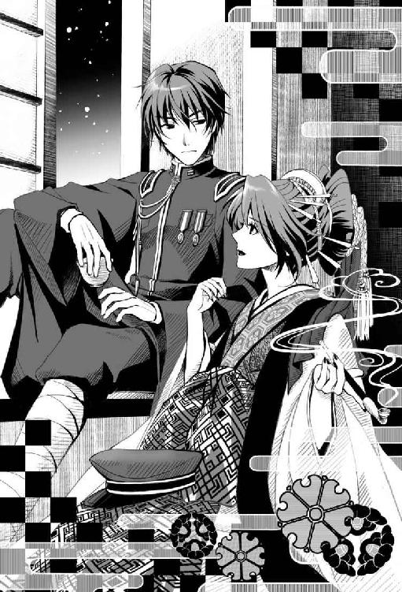
花魁が襖を開けると、子爵──音家の当主である海斗が、大門を一望出来る手摺りにもたれながら、妓楼に灯る鬼灯色をその澄んだ瞳に宿し、仲の町通りで繰り広げられる浮世を見つめていた。
「あら。出花なんか飲まんして、お酒はつけんでいいでありんす？」
「ああ、酒はいらん。悪いが早めに屋敷に戻らなければいけない」
海斗は、仲の町通りの方角を見つめたまま応えた。
花魁は煙管を口に咥えて吸い込むと、無粋な男に煙を吹きかける。
「もう......折角、二人だけの逢瀬でいなんすのに、つれないでありんすぇ」
花魁の芝居がかった言葉に、海斗はどこか愉快げに苦笑する。
「いや、つれなくしているつもりはないんだが」
「ここしばらくは、主やァ未來にかかり切りでござんした。妬けるほどにぇ」
そう云って、花魁は海斗の傍に座った。
寄りかかるように海斗の肩に触れると、白粉の香りが彼の鼻腔を妖しくくすぐる。
「ほんに、気がかりは気がかりでごさんす」
「どうした？」
「勿論、未來のことでござんす。しどい怪我ではありんしたけれども、主がすぐに『奉魂』して神憑の生命力を分け与えなんしたもの......いかほど頭部といえ、あんなふうに後遺症が残りなんすことがあるものでありんすか？」
「現に未來は何も思い出せていない。他に手の施しようがない以上、あいつの回復力に賭けるしかないだろう」
「そうでありんすが......」
花魁はまだ何か云いたげであったが、男の横顔を見て小さく首を横に振った。
海斗の膝に、細い指先をそっと添える。
「......ようござんす。あの子のことは、主が全ていいようにしなんす。今まで通りに」
海斗はここで初めて花魁の顔を見つめて本題を切り出した。
「で、つかんだ情報とやらはなんだ？ 紅音少尉」
鳴子は自嘲するようにため息をつくと、崩していた姿勢を正して改めて海斗に向き直った。
その顔は、すでに軍人のそれだ。
「以前から目を付けていた『怪しげな教団』があるんだけど、最近多発している行方不明者の事件と、どうも関係があるようなのよ」
「怪しげな教団？」
海斗の鋭い視線に鳴子は頷いた。
「──御影様教団。以前は『奉仕活動』を主体とした善良な人たちの集まりだったのだけど、最近、どうも彼らの動きがおかしいのよ」
「どうおかしいんだ？」
「若くて美しい女性を手当たり次第に勧誘しているの。その後、その女性たちは行方不明......まるで『影隠し』に遭ったみたいに......」
「影憑が関係していると思うか？」
「そこまでの確証はまだないわ......教団内に潜入した憲兵隊と連絡がつけば、まだ内部の様子がわかるんだけど、彼らとも連絡は途絶えてしまったし」
「捕らわれたか......」
呟く海斗に、鳴子は黙って頷く。
「隊長であるあなたの許可が得られれば、すぐにでもあたしが動くわ」
「──頼む。心してあたってくれ」
鳴子は海斗の言葉に頷くと、桜皮細工の煙草盆に煙管を載せて敬礼をした。
夜更けになってようやく海斗が花街から帰宅した。
大階段で毛布を被り、うたた寝している未來に気づいた海斗が訝しげに声を掛ける。
「おい、そんなところで居眠りしていると風邪を引くぞ」
「はっ!? はい！ 寝てません！」
兄の声に未來は寝ぼけて飛び起き、敬礼した。
「いや、むしろ夜はきちんと自分の部屋で寝ろ」
「は、はい......」
未來は顔を赤らめて俯く。
「で......なんだ、こんな遅くまで俺の帰りを待っていたと云うことは何かあるんだろう？」
眠い目をこすり、毛布を引きずりながら未來は海斗の後をついていく。
「はい、えっと御前賀生徒会長から、鹿鳴館の話を聞いて......」
先をいく兄の歩みが海斗の自室の前で不意に止まった。
「......鹿鳴館？」
「！」
立ち止まった兄の背に強かに顔面を打ち付けた未來が鼻をさすりながら答える。
「に、兄様、急に立ち止まらないでよ......確かそう、舞踏会って云ってた」
暫しの間、海斗は何やら考え込んでいたが、扉を開けると振り返らずに未來に告げた。
「なるほど。鹿鳴館の舞踏会か。お前にいく気があるなら準備させよう」
「え、いいの？」
あまりにもすんなり事が運び、未來は少々面食らいながら兄の顔色を窺う。
特に怒る風でもなく、海斗は暖炉の前にある揺り椅子を未來に勧めながら言葉を続けた。
「いいもなにも、俺はいくなと云った覚えはない」
海斗は襟元をゆるめ、次いで白手袋を外す。
「あ、あの......でも、ボクの舞踏会に着ていくドレスは......」
生徒会長は、どこか高そうな店だか職人だかに、舞踏会に着ていくドレスを作らせたというようなことを云っていたような気がする。
「ドレス？ それなら衣装部屋にいくらでもあるだろう。それよりお前、社交術は大丈夫なんだろうな？」
「......しゃ、社交術？」
耳慣れない言葉に思わず未來は訊き返す。
「記憶と一緒に忘れているかもしれんな。お復習の意味も含めて、もう一度やっておくといい。家庭教師を用意しておこう」
えっ!? また勉強することが増えた!?
もしかしたら、墓穴を掘ってしまったかもしれない。
「話というのはそれだけか？」
「あ、えっと、その......」
「なんだ、遠慮することはない。妹の相談に乗るのも、兄の務めだ」
なかなか話し始めない未來に、海斗は促した。直接、海斗に訊ねた方が早いと思っていたが、いざ本人を目の前にしてみると話しづらい。
沈黙が続き、やがて海斗はおもむろに立ち上がった。そして未來の前を通り過ぎ、扉を開けた。
「に、兄様、どちらへ？」
「風呂だ。戻って来るまでに話の内容をまとめておけ。それが無理なら今夜は諦めて自室へ戻れ。いいな」
そう云い残し海斗は後ろ手に扉を閉じた。
「............」
一人ぽつんと残された未來は、暫く毛布にくるまりながらゆらゆらと揺り椅子に揺られ、大人しく兄が戻るのを待っていた。
待つこと約一時間。なかなか海斗は戻って来ない。
「遅いなぁ......お風呂で眠ってたりして」
待ちくたびれた未來は、時間つぶしに兄の部屋の中を探索し始めた。
未來は海斗の大きな机に向かうと、その椅子の肘掛けに手をついて座り、兄の口真似をしながら思いっきり偉そうにふんぞり返ってみた。
「......辞書を引け」
椅子の支柱が、ぎぃっと音を立てる。
未來はくすくすと笑うと、次に机上に目をやった。
いつもはきちんと整頓された机の上に、珍しく山積みになった本と数枚の資料が散らばっている。もしかしたら、何か仕事中なのかもしれない。
無造作に置かれた資料を一枚手に取り、そこに記されている細かな文字に目を凝らす。
難しい漢字や外国語ばかりで、ほとんど未來には何が書いてあるのかわからなかった。ただ、まるで活字のような筆跡から、兄の几帳面な性格が窺えるようで、未來は苦笑した。
「......？」
その中に、幾つか何語だかさえわからない筆記体の走り書きを発見した。
意味はわからないが、なんだか難しいことだけはわかる。これ以上解読に挑戦すると頭が痛くなりそうなので、そっと資料を元に戻した。
次いで何気なく本の方に目をやると、雪と桜の模様の切りびろうどの写真立てを見つける。
「あれ。この写真立て、ボクの部屋にあったのと同じ......？」
未來は写真立てを手に取って、そっと中を開く。
やはり未來の部屋にあるものと全く同じ写真が入っていた。
──やっぱりこの少年は海斗兄様だったんだ......。
未來は写真立てをその場に戻してから、寝台の上に腰掛けた。
海斗兄様、お風呂まだかなあ......。
未來はそのまま寝台にごろんと横になると、うつらうつらと眠ってしまった。
そしてどれだけの間、まどろんでいたのか、やがてピアノの音が聴こえてきた。
この曲知ってる──昔、海斗兄様がボクのために作ってくれた曲......。
次第に意識が目覚め、視界にピアノを弾いている海斗の姿が入った。
未來は慌てて起き上がる。
「やっと起きたか」
ピアノを弾きながら、海斗は苦笑した。
「その曲なあに？ ボク、聴いたことがある気がするんだけど」
「当たり前だろう、これは俺がお前のために作った曲だ。......しかしこれを覚えているなら例の記憶障害が治るのも時間の問題かもしれないな」
「え......？」
兄様が作った曲......？
それはこの世にたった一つの曲と云うこと。
何故ボクが──この世界の未來のために兄様が作った曲を知ってるんだろう？
こめかみを右手の人差し指で押さえ、いつまでも首を傾げている未來に海斗は訊ねる。
「......で、さっきの話の続きはなんだ」
その言葉に未來は我に返って答える。
「う、うん......あのね、ずっと不思議だったんだけど、どうしてボクはこの家で海斗兄様と一緒に暮らしているの？」
「......何故そんなことを気にする」
「昼間ね、學校の先輩から初音家の家督について聞いたの。もう初音家って無くなっちゃったの？」
「ある意味では......そうだ。天涯孤独の身となったお前を、音家が引き取った」
海斗は云いにくそうに呟くと、ピアノの演奏を止めて未來に向き直る。
「どうして？」
「............」
海斗はしばらく黙り込んだ後、話を切り上げようと立ち上がった。
「時として思い出さない方がいい記憶もある......さあ、もう自室へ戻れ」
秋空が高く晴れわたる、舞踏会の日の朝──。
未來の寝室の隣、練色のダマスク柄の入った白練色の壁とウォールナット製の腰壁で覆われたドレッシングルームでは、今や屋敷中の女中たちや未來付きの侍女らが大慌てで並べたドレス群によって色とりどりの花を咲かせていた。
「まさか、お嬢様が舞踏会にいきたいと云い出すなんて。お珍しいこと......」
「舞踏会は、もう今夜でしょう？ おかげで未來お嬢様、休む暇もないわね。お気の毒に」
「でも、お嬢様、最初の頃よりは、ずいぶんとマシになってきてるわ。さすがは公家の血を引く名門、初音家のお姫様ね」
女中たちの見守る中、蓄音機から流れるワルツの調べに合わせて、海斗の雇った家庭教師に何度も怒鳴られながら、未來はこの舞踏会当日ぎりぎりまで西洋舞踏を学んでいた。
「一二三、二二三、頭を上げない！ 顔を下げずに、顎をお引きなさい！ ああっ、胃は引っ込めて！」
「は、はい、先生っ！」
もう四〇を超える女性家庭教師は、実際に西洋までいって本場の社交術やダンスを習ってきた専門家だった。何時間も休みなしのぶっつづけの講義と練習に、未來は汗だくになりながらも、必死についていこうとしている。
「いちいち足元を確認しない！ 目線は殿方に！ 二二三、三二三......嗚呼、もう時間がありません。西洋舞踏のお稽古をしながら、先ほどお教えしたマナーの復習も同時にいたします」
「えっ。ダンスを踊りながらですか!?」
「口答えしない！」
「はい！」
「では、基本的な洋式のマナーの復習から。尖った洋菓子をいただくときのマナーは？」
「胃を引っ込める！」
「違うでしょ！ それは今教えたばかりのダンスの方でしょう!? 正解は『尖ったところから、いただく』よ。次の問題！」
未來は頭を抱え、悔しそうに呟いた。
「惜しかった......」
「全然惜しくありません！ では、襖の開閉は何度に分けますか？」
「一二三、二二三？」
「それもダンス！ そんなリズムに乗って襖を開け閉めする人がどこにいますか!? 襖の開閉は三回に分けてです！」
「三は合ってたのにー！......きゃあっ!?」
踏ん付けた絹のドレスに足元をすくわれ、未來は直角につんのめると、女中たちが広げているドレスの山に頭から転がり込んだ。
「お、お嬢様!? 大事はございませんか？」
慌てて女中たちが悲鳴を上げて集まってくる。
「だ、大丈夫。ちょっと足がもつれちゃった」
家庭教師も、女中たちも安堵の息を吐く。いくら怪我の治りが早い神憑とはいえ、舞踏会の直前に怪我をされては元も子もない。
「あのう、この辺りで少し休憩をされたらいかがでしょう？ このままでは今夜の舞踏会の前にお嬢様が倒れてしまいます。それにこう云ってはなんですが、今のお嬢様では一度に二つのことを同時に考えるのは無理でございます」
侍女が、未來に同情するように云った。
「......わかりました。まだまだ教えたいことは山ほど残っていますが、もう時間切れのようですね。授業はここまでにいたしましょう」
「.........それで、 ボクが着られそうなドレスってあった？」
未來は女中たちがずらりと並べて選んでいたドレスの前に駆け寄りながら云う。
「はい、晩餐会用の夜会服なら何点か......ですが未來お嬢様は舞踏会から離れておいででしたから、あまり形の新しいものは......ああ、そう云えばあの白藤色のシルカシェンヌなら......」
女中の一人が思い出したようにそのドレスを捜し出し手に取ると、侍女が裾を摘みながら口を挟む。
「一昔前ならシルカシェンヌやポロネーズで良かったけれど、今は成人前でもロングを着るのが流行ですから......」
ドレッシングルームに並べられたドレスは、未來にはどれもこれも素敵に思えたが、女中たちの方が満足していないらしい。初めての舞踏会ということで、どちらかというと、未來よりも女中たちの方が張り切っているくらいだった。
「きっと生徒会長なら、ドレスをいっぱい持ってるんだろうなあ......この間も、『異世幸』の職人に舞踏会に着ていくドレスを持ってこさせるって云ってたし」
「あの有名な異世幸のドレスでございますか？」
「知ってるの？ ボク、そういうのって疎いから」
「未來姉、休憩だって？ 遊んでよ！」
扉をバンと勢いよく開けて、錬、そして鈴がドレッシングルームに入って来た。
「ちょうどいいところに！ ねえ、錬、鈴。このドレスの中で、どれが一番いいと思う？」
「えー、ドレス？ 海斗兄の選んだドレスなんて、いつも一緒だよ」
錬はドレスにはちっとも興味が無さそうな声で云う。
「錬様のおっしゃるとおり、こうして拡げてみると......海斗様のご趣味が一目瞭然ですね」
女中の一人がぽつりと呟いた。
どれもこれも甘いレースやたっぷりとしたフリルに包まれたロマンティックなデザインで、モダンさやフェミニンさ、セクシーなデザインは面白いほど皆無だ。
「確かに偏ってますね。未來様に何をお求めなのか、こうして並べて見るとよくわかります。きっと未來お嬢様には、『永遠の少女』でいて欲しいのかもしれませんね」
また別の女中が頷きながら云った。
「永遠の少女？」
「主人がいないと思って云いたい放題だな。お前たちは陰ではいつもそうなのか？」
錬が開けっ放しにしていた扉から、海斗が姿を現す。
「も、申し訳ございませんっ！」
女中たちが、一斉に声をそろえて海斗に頭を下げる。
「兄様!? いつ帰って来られたんですか!?」
「たった今だ。で、これは何の騒ぎだ？ 家庭教師はどうした？」
「ついさっきまで、すっごくがんばってました。もうダンスも社交マナーも完璧です。ね？」
未來が女中たちを振り返ると、彼女たちは神妙な顔で一様に頷いた。
「なるほど、ではその完璧なご令嬢とやらを今夜見せて貰えると云うわけだな？」
う......。
女中たちの作り笑いが更にこわばり、顔色も一瞬にして青ざめる。未來は既にドレスの絹の海に突っ伏して撃沈する有様だ。
「それで、お前たちはこんなにドレスを引っ張り出していったい何をやってる？」
「も、もちろん、今夜お嬢様がお召しになるドレスを選んでいたところでございます」
場を取り繕うように、未來付きの侍女が海斗に答えた。
「ああ、今夜の舞踏会に着ていくドレスなら俺が異世幸で選んでおいた」
主人の言葉に女中たちは安堵の色を浮かべ、絹の海から浮上した未來も目を丸くする。
「え？ まさか海斗兄様が、ボクに新しいドレスを？」
海斗がドレスを選ぶ姿というものを、未來は想像できなかった。
「まさかとは何だ」
海斗は苦笑しながら続ける。
「ここ暫く、お前も頑張ったからな。それに初めての舞踏会だ。俺もお前に恥をかかせたくはない」
「あ、ありがとう、海斗兄様！」
「いいなあ、未來姉ばっかり......」
それを横で聞いていた錬が、頰をぷうっと膨らませた。
姉の鈴の方は珍しく、床に開いた『ぬりえ』に没頭している。
「錬もドレスが欲しいの？」
未來が訊ねると、「ちがうよ！」と云って、錬はさらに頰を膨らませた。
姉の鈴まで、弟の真似をして何故か頰を膨らませている。
「錬、そうすねるな。今度一緒に百貨店にでもいって服を新調しよう。勿論、鈴も一緒だ」
「わーい！ 他にもおねだりしていい？」
「なんだ、まだ欲しい物があるのか？」
「『火星人の大逆襲』の続刊が出たんだけどそれも買ってくれる？」
「絵本か。しかしお前、火星人の他に読むものは無いのか」
「じゃあ『怪人変装セット』と『光線銃』も買ってくれる？」
「ああ。鈴は何か欲しい物は無いのか？」
鈴は色を塗っている途中の『ぬりえ』を海斗に見せた。
「わかった。新しい『ぬりえ』だな。全部買ってやってもいいが......その代わり、次の試験で全科目九〇点以上取れなかったら没収だからな。未來もだぞ、九〇点以上取れなければドレスは没収だ」
「えーっ!!」
未來と錬が二人揃って不満の声を上げた。
鈴は相変わらず、我関せずといった感じで、ぬりえに没頭している。
「さあ、わかったら早く支度をしろ。今夜は遅れるわけにはいかないからな。おい、誰か未來の支度を手伝ってやれ」
海斗はそう云い残して部屋を出ていくと、その彼の後ろ姿に、侍女を始めとした、その場にいる使用人全てが、膝を折って海斗に傅いた。そして、侍女が未來の方に向き直って先を促す。
「よかったですね、未來お嬢様。ご主人様がお優しい方で。ささ、湯浴みのお支度はできております」
「うん！」
未來は嬉しそうに、無邪気に笑った。
夕闇迫る帝都に、一八時を告げる鐘が鳴り響いていた。
一斉に灯された瓦斯燈の鬱金の銀河から、幻影のように桜京鹿鳴館が浮かび上がる。
東京が帝都と呼ばれていた頃の鹿鳴館から数えて四代目となる桜京鹿鳴館。その豪奢を極める姿は、在りし日の初代鹿鳴館に勝るとも劣らぬ面影を悠然と宿していた。
初代の通りに再現された旧薩摩藩装束屋敷跡の黒門の正面玄関の馬車寄せには所狭しと何台もの馬車や車がゆき交い、キャリッジランプが夢の中をたゆたう星影のように幻想的な空間を創り出している。
正面手前に連なるアーチの一角には、二頭引きのランドー馬車が横付けされていた。
御者が馬車内の主人へと声を掛ける。
「正門まで今少し距離がございますが......」
「ここでいい」
凜と通る声が響くと、その黒塗りの馬車に銀で吹雪紋が刻まれた扉が開いた。中から軍の礼装用の外套に身を包んだ男が降りてくる。
慌てて手綱を固定し務めを果たそうとする御者を左手で制し、海斗は未來に手を差し伸べて降りるように促した。
未來は差し出された海斗の腕を支えに馬車からすとんと降りる。身にまとった雪のように真っ白なカシミアとミンクのペリースコートがふわりと風に躍った。
少しずれたマフの位置を兄に整えてもらうと未來は小さく震えた。
「どうした。寒いのか？」
「ちょっとだけ......あと、心配で」
「心配？ 楽しみにしていたんじゃないのか？」
「......両方。ちょっと緊張してるのかも」
相変わらず仏頂面のままではあったが、海斗は自分の白い外套を脱いで心細げに笑う未來の肩に羽織らせる。
「この外套......ちょっと重い......」
「礼装とはいえ男物の軍用外套だからな。気に入らなければ返せ」
海斗が外套を奪い返そうと手を伸ばすと、未來は巧みにその手をすり抜けた。
ドレスを翻して悪戯っぽく微笑してみせる未來を、海斗は目を細めて見つめる。
「......未來」
「な、なあに、兄様。急に改まって」
「......まだまだだな」
「ええええー」
未來は不満げに唇を尖らせ、どこがいけないのかななどと呟きながら、ドレスの裾を払ったり、袖を引っ張ったりと忙しない。
「舞踏会は楽しみか？」
「はい。もちろん！」
正面玄関が近づくにつれ、うきうきと足取りが軽やかになる妹とは裏腹に、海斗の足取りはずるずると鉛のように重さを増していく。
我が子を嫁に送り出す父親の心境とはこんなものかもしれないと海斗は思う。
「早く、兄様！」
「やれやれ......どうやら緊張はほぐれたようだな」
海斗は苦笑し、未來に引きずられるように鹿鳴館へと向かった。
煌びやかな正面玄関のアーチをくぐると、今夜の舞踏会の主催者が、入場する招待客たちを一人ずつ笑顔で出迎えている。
主催者のその軍装に着けられた勲章の数々を見ただけで、将官位であろうことは世事に疎い未來でも見て取れた。
「佐条院啓伯爵御夫妻様、御令息智様！」
招待客の到着を告げる侍従長の声がエントランスに朗々と響き渡ると、名を呼ばれた一行が主催者へと頭を垂れ挨拶をする。
「............」
「どうした」
「......一人ずつ名前を呼ばれるの？」
「ああ、しきたりのようなものだ。お前も出席者の名前をこの機会に覚えておけ」
「鷹司光公爵御夫妻様、御令息正邦様、御令嬢菜子様」
次々と到着する招待客たちの名を厳かに読み上げる侍従長の声......。
──ボクはなんて呼ばれるんだろう......兄様と同伴してていいのかな。
ダンスのことばかり楽しみにしていて、こんなふうにわざわざ客の名前を読み上げながら入場するなんて思いもしなかった。
勿論、未來は兄とは家名が異なる。
血の繫がった本当の家族でもなく、養子縁組もしていない華族......。そんな関係は鹿鳴館に集まった中では、自分たち二人だけかもしれない。
それを改めて大勢の前で再認識させられるようで、未來は足がすくんだ。
「何も心配するな。お前は俺の横にいればいい」
未來の緊張を気にしてか、海斗が小声で囁いた。左肘を未來の前にすっと差し出す。
差し出された海斗の左腕に、未來はおずおずと自分の手を添えた。
「音海斗子爵様、御令妹初音未來様！」
侍従長の声に、人垣から一瞬ざわめきの声が起こる。
音未來ではなく、初音未來と呼ばれた。それは当然のことだったが、どうしても兄との距離を感じてしまう。生徒会長に教えられた通り、この社交界では明らかに異質の存在なのだ。
そんな異質な存在である自分の一挙手一投足を全ての来賓に見張られているような、ただならぬ周囲の気配に未來はいたたまれなくなる。
先ほど見せた明るい笑顔から一転して、表情を硬く曇らせ俯いている妹の耳元に、兄がそっと囁いた。
「『頭を上げない。顔を下げずに、顎をお引きなさい』......だろ？」
未來は突如姿勢を正し、真っ直ぐ前に面を上げた。ここ暫く家庭教師から云われ続けたその言葉に、反射的に軀が反応する。
「華族としての立ち居振る舞いも舞踊と同様、堂々としていればそれでいい」
海斗は周囲の好奇の目に臆することなく歩を進めると、主催者夫妻の前に出て軍帽を取り挨拶を交わした。未來は膝を屈めて、家庭教師に習った作法通りに視線と腰を落とす。
「おお、音准佐。よく来てくれた」
「國衞大将閣下。お招きに与りまして光栄に存じます」
「うちの家内も君に会うのを楽しみにしとったんだ。また御前賀大将とうちに来るといい」
夫人が海斗へと手を差し伸べると、海斗は腰を屈めがめて接吻をする。
「御無沙汰しております、國衞夫人。その節は大変ご馳走になりました」
「前のようにまた頻繁に遊びにいらしてね。あらあら、こちらが貴方ご自慢の妹さん？ 本当に愛らしい方ですこと」
未來は緊張した面持ちで夫人へと腰を屈め、目礼した。
深く低頭する少女を、國衞大将は興味深くしげしげと見入っている。
「初音家というと、あの『桜』の名門の......公家大名の御姫さんか」
「......は、左様で」
海斗が國衞大将の問いに答えた。
「海斗さんがもう少しお若い頃にね、貴女のことをそれは嬉しそうに話してくださったのよ。僕のピアノに合わせて囀る、可愛い『鶯』を手に入れたって」
夫人は未來の頰に手を添えて優しく微笑んでいる。
未來はなんのことだかわからずきょとんとしていたが、周囲の視線に慌てて形式通りに言葉を返した。
「......お、恐れ入ります」
「ああ、なるほど。あれはこの初音の御姫さんの事だったか。儂はずっと鳥のことだと思っとったが、なんだ君もあんな若い内から白鳥に化ける雛を籠に囲うとはなかなか隅に置けんなぁ」
「ま、御前ったら、おほほほほほほほ」
「がははははははは」
大声で笑う夫妻に、海斗は苦笑いを隠して黙礼した。
未來は会話の意味がよくわからず、ただ失礼の無いように笑顔だけは絶やさないようにする。
「今夜はゆっくりしていってくれたまえよ。では、また後でな」
「舞踏場でお会いいたしましょうね」
夫妻の言葉に海斗と未來は軽く低頭し応えると、広間の中央の大階段へと向かった。
大階段の吹き抜けを煌々と照らす豪華絢爛なシャンデリアを見上げながら、未來は海斗に訊ねる。
「......鶯って？」
「俺がまだ學生だった頃の戯れ言だ。忘れていい」
海斗は周囲からの挨拶に目礼で応えながら素っ気なく答える。
「............」
そう云われると逆に気になる。
大階段の横に待機しているクローク係の侍従が恭しく頭を垂れ、海斗はその手に外套や軍刀を預ける。海斗は同伴者の役目として、未來のペリースコートも脱がせると、同じく侍従に預けた。
外套とペリースコートを脱いだ未來の夜会服と海斗の礼装は目の覚めるような純白で統一され、差し色は互いに寒色系の髪のみといった簡素さが、より一層美しさを際立たせている。
海斗は神憑隊の白地に銀モールの軍礼装、所々に銀糸で音家の家紋の吹雪が縫い込まれている。礼装は他にも白地に金、葬祭用の黒地に銀及び金と揃っているが、海斗は好んで銀糸の組み合わせを選ぶことが多い。
未來も純白のシルクサテンに銀糸の刺繡が施されたボディス、オーガンジーのトレーンを緩やかに腰でクロスさせた清楚で柔らかなバッスルスタイルのドレスだ。その胸元を幾重ものフリルが優しく包み込み、至る所に真珠や小花の装飾品が散らされていて、未來の清楚さがより強調されている。
「どうだ、少しは場の雰囲気も慣れてきたか？」
「......ん。でも、なんだか圧倒されちゃって......どこも煌びやかで御伽の國に迷い込んだような気分。あ、そうだ！ 次に来るときは、錬と鈴も連れて来てあげてもいい？」
「大人しくしていればな......」
海斗がわずかに視線をそらして云ったそのとき、聞き慣れた名がエントランスに響き渡った。
「御前賀草嘉侯爵様、御令息忠志様、御令嬢悠那様！」
御前賀家御一行は、入り口で主催者の國衞夫妻と挨拶を交わしたあと、真っ直ぐに大階段にいる未來たちの元へやってきた。
海斗と未來は、御前賀大将にいつものように敬礼する。御前賀大将は、准佐である海斗の上官だ。
「なんだ、君らも来とったのか。これはこれは珍しい事もあるもんだな。音准佐、初音君」
「はっ！」
海斗と未來は、揃って上官に敬礼する。
「初音君、見違えるようだな。よく似合っとるよ。清楚というか可憐というか、やはり女性は軍服よりもその方がよいな」
「あ、ありがとうございます......」
豪快に笑う御前賀大将に、未來は照れ臭そうにお辞儀をする。
「それにしても、海斗准佐。君はあんなにこの鹿鳴館を嫌っていたのにどういう風の吹き回しだ、今夜は？」
「どうにもこういった華やかな席は苦手でして......今夜は妹の付き添いです」
「ごきげんよう、海斗様。未來さん」
御前賀大将の隣にいた生徒会長が艶然とした笑みを浮かべ、ずいっと前に出て優美にお辞儀をする。
「ご、ごきげんよう、生徒会長」
腰を屈めて、未來も生徒会長に会釈した。
海斗も会釈を返す。
「本当に素敵なドレスですわ。見かけによらずセンスが宜しいのね」
「兄に選んでもらいました。生徒会長のドレスもとても素敵です」
ドレス姿を褒められて、未來は自然と声が弾む。
「まあ......海斗様がお選びに......」
嬉しそうにスカートの裾を摘み上げながら云う未來に、生徒会長の眉間が微かに皺を刻んだ。
そんな彼女の心情には全く気づかず、未來は生徒会長の隣にいる人物の顔を見上げる。悠那の父親の方ではなく、もう一人、海斗とそう変わらない年齢の男性が、未來の顔を愁いを帯びた瞳で一心に見つめていた。
誰だろう......？
御前賀大将が未來の表情を悟ると、改めて傍らの男性を紹介した。
「ああ、息子の忠志は五年ぶりにようやく帰国したばかりでね。どうだ、忠志。未來君も一段と美しくなっただろう。いやあ、未來君も悠那も、どちらも花で云えばまだつぼみ。うちの息子と音君のどちらが先にその花を咲かせることが出来るか、いやあ楽しみだ」
「ええ、本当に......つい見とれてしまいました。お久しぶりです、音准佐、未來さん」
忠志は気品に満ちた艶やかな笑顔を向けながら会釈する。
「どちらの御國へいらしていたのですか？」
周囲と話を合わせるように、珍しく未來から忠志へと問いかける。
「商談で、あちこちの國を回っていました。華族である以上、いずれは皇室の藩屛としてあなた方のように軍隊入りとなるのでしょうが、それまでは父の『稼業』の手伝いをやるつもりでおります」
「なるほど。ご立派です」
握手を交わしながらそう答える海斗の耳元に、忠志は海斗にしか聞こえない声で囁く。
「全く、私の父はまるでわかっていない。私はともかく、あなたは咲き誇った大輪の花を愛でるタイプではないのに......」
「............？」
「いや、それにしても未來さん、私が五年も帝都を留守にしている間に、本当に美しくなられましたね。どうでしょう、後ほどこの私と踊ってはいただけませんか？」
通常の声音に戻って忠志は続けた。
「え、あの......」
突然の申し出に、未來は傍らの海斗の顔を見上げる。付け焼き刃で社交ダンスを習いはしたが、上手く踊れるだろうか。
未來が返事に困っていると、御前賀大将が破顔して云う。
「それはいい。悠那、お前も海斗君にダンスの相手をしてもらいなさい。今夜はそのつもりで念入りにめかし込んで来たのだろう。ああいや、ダンスの相手というよりは、お前にとって海斗君は、将来のお相手というべきかな？」
御前賀大将は、途端に顔を耳まで真っ赤にして恥じらう自分の娘に向かって豪快に笑った。
「やっ、やですわ、お父様ったら、いきなりそんなっ！ わたくしは別にその、海斗様のお相手になんて相応しくありませんわっ」
悠那は言葉とは裏腹に、嬉しそうな顔で首を何度も横に振ってから、おずおずと上目遣いに海斗の顔を見上げて反応を窺う。
「でも、海斗様が......その......もしよろしければ......」
「まさしく仰る通りです。私ではとても悠那様のお相手は務まらないでしょう。それより閣下、例の事件についてお話が」
「うむ。なにか新しい情報でも入ったのかね？」
二人とも急に真剣な軍人の顔になると、海斗と御前賀大将は、未來たちをその場に残してさっさと別室へ移動してしまった。
未來は茫然として海斗の背中を見送っていたが、それ以上に愕然としていたのは、悠那だった。
──海斗兄様ったら、ボクのこと放って、どこいっちゃったんだろう......。
まだ、御前賀大将とどこか別室で仕事の話をしているのだろうか。全く戻って来る気配の無い海斗に待ちくたびれて、未來は談話室に来ていた。
周りにいるお偉いさんたちの会話は、今の世界情勢や政治の話ばかりが延々と続いていて、未來がその会話に加わるには少々難しすぎた。
ダンスが始まるまでの間、生徒会長と一緒にいられればまだこんな誰も知る者もいない場所に取り残されることもなかったのだが、あいにく彼女は急に体調を崩したとかで、今しがた車で帰宅してしまった。
次は絶対に錬と鈴にも一緒に来てもらおうと内心思う。
そこへ、未來の目の前を色とりどりの飲み物をトレイの上に並べた客間女給が横切っていく。
一瞬にして目を奪われた未來は、女給を呼び止める。
「これ、頂いても？」
「はい、なんなりと」
女給は愛想良く微笑むと、腰を落としトレイを差し出す。未來はその中でもひときわ目を引く薄桜色の『江戸切子』のグラスを手に取った。
その表面には流水をいく桜の花筏の模様があしらわれており、中を満たす白緑色の飲み物がその雅さを際立たせている。
「綺麗......」
グラスを持ったまま、未來は鹿鳴館特有の白亜の半円アーチを抜けてバルコニーに出た。
宝石のように輝く江戸切子のグラスをひと目見た瞬間、月の光に透かして眺めてみたくなったからだ。 未來は早速、そのグラスを月の光に透かしては下から覗いてみたり、横から上から眺めてみたりと、ひとしきり目で楽しんでから、ようやくグラスに口をつけてみる。
「!?」
ひとくちグラスに口につけた瞬間、未來はそれが水ではないなにか別な液体だと気づいた。
「こんな所で一人隠れて、こっそり味見とは......いけない方ですね」
「い、いえ、そんなつもりでは......」
不意に背後から声をかけられて未來はおそるおそる振り返った。
「貴女をずっと捜しておりました......もしかしたら、妹と一緒にすでに帰られてしまったのかと思い、心配致しました」
「あ、あなたは、さっきの......えっと、生徒会長の御兄様」
男はグラスを未來の手から奪うと、残りを飲み干してしまった。
「あ、それボクが口つけちゃっ......」
「気になさることはありません。私は将来、貴女の夫となる男です」
「お、おっと!?」
「ああ、足元にはお気をつけください。外は暗いですから」
「いえ、生徒会長の御兄様......別にボクは転びそうになったわけではないんですけど」
「忠志と呼んでください。なんでしょうか、未來さん」
「あの......忠志様、あなたとボクがその......いつ将来の約束を......そ、そのようなお戯れは......」
「戯れ？ いいえ、私は生まれてこの方、今まで一度も冗談も噓も云ったことはありませんよ。ましてや戯れなど......久しぶりに貴女を見た瞬間、私は心に決めました。是非、私と結婚して頂きたい」
忠志は再び熱を帯びたまなざしで未來を捉えた。未來は思わず、一歩後ずさる。
「お、お申し出はとても有り難いんですけど、でもボク、結婚とかはまだ考えたことがなくて......」
「貴女は何も考える必要はありませんよ。大名華族の御前賀家と、公家華族の初音家──両家の家格には何の問題もありません。それとも、他にお心を寄せる方が既にいらっしゃるのでしょうか？」
好きな......男性？
「はい、兄や弟は大好きです！」
未來は自信を持ってにっこりと微笑んだ。
「............！」
その答えを聞いた途端、忠志は口元を押さえ、必死で笑いを堪えている。
ど、どうしよう、ボクまた何か見当違いなこと云ってしまったのかも......。
「ああ、失礼、あまりにも素直で可愛らしいご返答に、つい......。しかし、成る程。だいたいわかりました。やはり何の問題もありません」
「え!?」
どうしてそうなるの。ボクの方は問題ありまくりなのに......。
未來が困惑していると、舞踏場から美しいワルツが聞こえてきた。
「おや。......やっとダンスが始まったようですね」
「あ、あの......ええーっと」
おろおろと断る理由を探している未來を、忠志は照れ隠しと勘違いしたのか、さあ参りましょうと優しく笑いかける。
未來は観念すると、忠志の横に並んで舞踏場へと向かった。
既に舞踏場は軍樂隊による優雅なワルツの演奏に包まれていた。
海斗はどこかへいってしまったまま戻って来ないし、せっかくだからダンスだけでも楽しもうと未來は思うことにした。少々相手に問題はあったが、不幸なことに、この場には彼しか顔見知りがいない。
途中で踊りの輪に分け入った未來と忠志に一瞬周囲の視線が集中したが、忠志は臆した様子も無く堂々と未來をフロアの中央まで導く。
シャンデリアに灯る燈火がキラキラと輝く中、改めて忠志が己の胸に手を当て一礼。
未來は断る術も見つからず、家庭教師に習ったとおりにお辞儀してダンスの申し出を受ける。
抱き寄せれば簡単に折れてしまいそうなほどに華奢な未來の背中に忠志が手を回すと、未來も彼の手を取った。そして二人は三拍子のステップを踏み始める。
「未來さん。この鹿鳴館には以前にも？」
「いえ、初めてです。事情があって。だから上手く踊れるかどうか心配で......」
未來はなんとかワルツの演奏に合わせて軀を揺らしながら、緊張した面持ちで忠志の顔を見上げる。
「初めて？ そうですか。ご心配はいりませんよ。私が責任を持って未來さんをリードしますから。さあ、肩の力を抜いて、私に全てを預けるようにステップを踏めば良いのです。そう、一二三、二二三......」
──上手い、この人......。
未來の家庭教師か、それ以上だ。忠志がこういった社交の場に慣れているのが、初心者の未來にもはっきりとわかる。ぎこちない未來のダンスが、忠志のリードに助けられてなんとか形になっている。
「おっと！」
「ご、ごめんなさいっ！ ボクったら足を！」
油断した途端、相手の足を踏んづけてしまった。家庭教師にさんざん習ったつもりだったのに──。やはり付け焼き刃のダンスでは、通用しないのだろうか。
未來は慌てて足を引っ込めて謝罪した。
「いいえ、どうかお気になさらずに。今この瞬間でさえも、貴女と私の楽しい想い出の一つになったのですから」
「............」
未來が思わず忠志の顔を見上げると、彼は足を踏まれたことすら嬉しそうに微笑んでいる。その爽やかな笑顔がキラキラと眩しく映った。厳しいだけの海斗とは全く違うタイプの男性だ。無論、錬とも違う。
忠志の言葉と声音は、緊張した未來の心を少しずつ溶かしてくれるような、どこまでも甘く優しい響きがある。
こんな思いやりに溢れた兄を持って、妹である生徒会長は、きっと誇らしいに違いない。
そんなことを未來が考えていると、ふと、忠志は真面目な表情に変わる。
「先ほどの話の続きですが......」
「先ほど？」
「............」
忠志は真っ直ぐに未來を見つめ、そこで一旦、言葉を句切る。
その表情から、すぐに深刻な話だと察した未來は、彼が再び自分から口を開くまで言葉を挟むのを控えた。
音楽に合わせてしばらく踊っていると、やがて忠志は何かを決したように頷く。
「......軍隊入りの話です。実はもう配属が決まっておりまして......これからは貴女と同じ帝都を護る仕事になります」
「そ、そうだったんですか！ ボクもこの間、神憑特殊桜小隊に入隊したばかりなんです。それで、忠志様はどちらに配属になるんですか？」
忠志はもう一度未來に頷いた。そして、未來の耳元にその端正な顔を寄せて囁く。
「えっ。神憑!?」
はっとする未來の唇に、忠志は人差し指を当てていつもの微笑を拵えた。
「まだ内緒です。妹も知りません。知っているのは、父と貴女だけです」
「ボクにそんな大切な話をどうして？」
未來は首を傾げて忠志の顔を覗き込む。だが、忠志は曖昧に微笑みながら、首を静かに横に振っただけだった。
「あまり貴女を独占していてはいけないですね。そろそろ、お兄様にお返ししなければ......」
忠志はそう云いながら、舞踏場の壁際へと視線を向ける。
未來もつられてそちらを見やった。
「!?」
──か、海斗兄様!? あんな壁際に一人でどうして？
気づかなかった。いつからあそこにいたんだろう。
「お兄様は貴女のことがよほどご心配なのですね。私にも妹がいますから、お兄様のお気持ちはよくわかります」
「はぁ......」
忠志の言葉に、未來は曖昧な表情で頷いた。本当に何故兄があんな場所に一人でいたのか、それが気になって仕方がない。
「確か......貴女方ご兄妹は、血の繫がりはないのでしたね」
「はい？ あ、ごめんなさい......もう一度、お願いします。兄様に気を取られていて......」
丁度そのとき、曲が終わった。
軍樂隊による演奏が次の曲に切り替わるまでの僅かな間に、忠志は未來の手を取ったまま、唐突にきびすを返して歩き始める。
「えっ。あの、忠志様？」
忠志が未來の手を引いて強引に向かう先には、兄が立っている。
当然、海斗もこちらに気づいた。忠志は海斗の真正面まで来ると、繫いでいた未來の手を海斗の目前に差し出す。
「どうかお許しください。私が強引に、貴方の大切な妹さんをお誘いしました」
深々と頭を下げ、忠志は自らの非礼を詫びた。
未來は海斗が彼に何を云うのか緊張した面持ちで見守っていたが、海斗は腕組みをしたまま呟く。
「そういうことか......」
「ええ、そういうことです。お兄様」
微笑する忠志に、海斗は苦笑を返した。
そして、先ほどから意味不明の男同士の会話に、首を右へ左へと傾げている未來の手を奪うように海斗は取った。
こちらに微笑んでから背を向ける忠志の姿が未來の視界の隅に映る。
「あのう、兄様。忠志様はもういいの？」
「ああ、もういい」
ぶっきらぼうに海斗はそう答えた。
「たまにはこんな余興に付き合ってやるのもいいだろう」
海斗は左手で未來の手を引き寄せ、その背にそっと腕を添えると、軽やかにステップを踏み始めた。
海斗のリードに未來は目を丸くして兄の顔を見上げる。
「びっくり、兄様って踊り上手いんだ」
家庭教師や忠志を相手にしていたとき以上に、まるで自分の背に羽が生えたように自由に伸びやかに舞うことが出来る。
踊る相手が変わっただけで、こんなにも違うものだろうか。
「今頃気づいたのか。世辞はいいから脚捌きに集中しろ。良い機会だ。ダンスも俺が完璧に仕込んでやる」
「いいけど......でも海斗兄様、教えるの下手だから」
「そうか？」
そう答えた海斗の表情を間近に見て、未來は踊りながら噴き出してしまった。
今夜の舞踏会は、未來にとって忘れられない思い出となりそうだ。
二人は夜が更けるまで、美しい弧をフロアに描きながら踊り続けた。
＊ ＊ ＊ ＊ ＊
「それもこれも駄目！ 全然駄目よ！ 全くきかないじゃないの！」
「お、落ち着いてくださいませ、教祖様。あなた様の神々しさは、今も昔も変わっておりませんっ！」
手当たり次第、まるで狂ったかのように薬瓶を荒々しく投げつける教祖を、複数の黒装束の信者たちが必死になだめようとしていた。
奥座敷に散乱したその薬瓶は、どれも高価な化粧品や滋養強壮剤の類いばかりだ。
「噓仰い！ あんたが若けりゃ、その魂を今すぐ啜ってやるところよ！ もう我慢できないわ。今日の贄を早く連れていらっしゃい！」
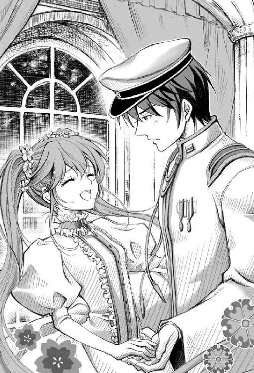
異常に血走った目で、奥座敷の主は信者らに命令する。だが、信者らは額を畳に擦り付けて主の怒りを、恐れおののきながらもひたすら堪え忍んでいる。
「『本日の信者』でしたら、供物と一緒に既に召し上がりました。それに、他の贄たち......いえ、信者たちの回復が追いついておりません。これ以上、魂を啜り続けると彼らは死んでしまいます......」
「わかってるわよ！ 全然喰い足りないって云ってるの！ いいこと、あんたたち、今日から贄をさらってくる数を増やしなさい！」
主は横一列に並んで畳に額づく信者たちを、一人ずつ蹴飛ばしながら命じる。
その中で、蹴飛ばされた信者の一人が、血を吐くような声で訴えた。
「しかし、これ以上あまりおおっぴらに行動なさいますのは......。既に教団内でもあらぬ噂が飛び交っております。どうか気をお鎮めください」
「..................」
主はその言葉を聞いて、ぎりりと音を立てて歯ぎしりする。
そして目の前にある姿見から、憎々しげに目を背けると、それを追いやるように撥ね除けた。
肆章怪奇御影様教団
カタカタと乾いた音を立てて、天井に吊された天井扇がゆっくりと澱んだ空気を攪拌しながら旋回していた。
帝都桜京の中心部に位置する近衛師団司令本部内、神憑特殊桜小隊の隊長室に招集された未來、錬、鈴の三人は隊長室の扉をノックする。
「初音未來、入ります！」
「鏡音姉弟、入ります！」
すぐに室内から「入れ」と返答があった。
未來が扉を開け、その後に錬が鈴の手を引きながら続く。
部屋の正面奥、執務机にいる海斗に未來たちは敬礼。
海斗のすぐ傍らには副隊長の鳴子が、すっと背筋を伸ばした姿勢で後方に手を組んで立っていた。 海斗は全員揃ったのを見届けて頷く。
「諸君らを呼んだのは他でもない。最近、この帝都の街から若い女性の行方不明者が多く出ていることはお前たちも知っているな？」
未來と錬は頷いた。
すでに未來たちの學校でも、行方不明者が何人も出ている。
そのうちの一人、九条蘭は影憑にさらわれ、危うく未來の目の前で影憑にされそうになったのだ。
救出された九条蘭は非常に衰弱していたので、軍病院に入院することになったらしいが、それ以前に行方不明になった生徒たちは、まだ一人も見つかっていない。
「ここしばらく、とある宗教団体を調査していたところ、言葉巧みに若い女性を騙して教団に連れ去っているということが判明した。そこで......」
「わかった、海斗兄。その悪い教団を僕らでぶっ潰すんだね！」
錬が期待に目をキラキラと輝かせ、拳を力強く握り締める。
可愛い顔をしているが、正義の名においては意外に物騒なのがこの少年だ。
「いや、おそらく末端信者の多くはこの事件とは無関係の善良な市民たちだろう。元々、この宗教団体は、奉仕活動をする人たちが集まってできた教団だからな。悪事に加担しているのは、教祖と一部の幹部に違いない。その辺りの証拠固めに、鳴子には引き続き潜入調査を続けてもらう」
海斗の説明に、彼の傍らで直立している鳴子が静かに頷く。
「じゃあ、僕らは何をすればいいの？」
錬が訊いた。海斗が即答する。
「お前たち三人は、街や學校で、その宗教団体......『御影様教団』について、できるだけ情報を......」
「お、御影様教団!?」
海斗の言葉の途中で、突然、未來が素っ頓狂な声を上げた。未來に皆の視線が集まる。
「どうした、未來。この教団のことを知っているのか？」
「最近、流歌さんが体験入信したって云ってた教団です。ボクも入信を勧められました」
「......まさか、お前たちまで入信したわけではないだろうな？」
未來は首を横に振った。錬と......鈴の抱いた人形も首を横に振っている──器用な人形だ。
海斗は額に手を添えて俯くと、深いため息を漏らした。
「また一人、やっかいごとが増えたか」
「また一人？」
小声で呟いた海斗のぼやきに、未來が首を傾げる。
「いや、こっちの話だ。お前たちには関係無い。作戦を一部変更する。未來、鈴、錬──お前たちは、俺たち以外の神憑特殊小隊に捕まって面倒なことになる前に、巡音流歌を保護。それと、これは可能ならばでかまわないが、彼女から教団の情報を訊き出してくれ。まあ、体験入信しただけでは、大したことは知らないだろうが......」
「了解！ みるくほうるカフヱへ直行し、彼女を『保護』します！」
流歌が犯罪者の片棒を担がされる前に、彼女を助けなければならない。
彼女のことだから、どんな悪事でも、親切心で何でも手伝ってしまいそうだ。
「頼んだぞ。くれぐれも先走って、単独で御影様教団に乗り込んだりするなよ。俺からは以上だ。下がっていいぞ」
「はっ！」
未來と錬は頷き、軍靴の踵を揃えて敬礼した。
「僕、今回の任務、なんか厭だなあ。流歌姉が悪い教団の信者になっていたら、僕らの敵になっちゃうの？」
隊長室で作戦会議を終えて外に出た途端、錬は頭の後ろで両手を組みながら不満そうに呟いた。今にも雨が降り出しそうな鈍色の雲翳を見上げ、切なそうなため息をつく。
「敵になんかならない。流歌さんは騙されて体験入信しただけなんだから。それに、鳴子姉の調査で御影様教団が悪い教団だってはっきりすれば、流歌さんだって教団から抜けると思うし」
「宗教にはまった人を説得するのはそう簡単じゃないよ、未來姉」
錬は疑うような瞳を未來に向ける。
「流歌さんは『初回特典』とかそういうのが欲しくて体験入信しただけだもん。信仰心とかないし。きっと大丈夫よ」
未來は記憶を手繰り寄せながら、流歌と交わした会話を思い出す。
確かに彼女はビラを配り、しきりに教団の素晴らしさについて熱く語ってはいたが、あれはただ単に、『特典』が欲しいだけの顔だった。
「じゃあ、流歌姉が僕らの敵になることはないんだね？」
「勿論。だから流歌さんにもう教団には近づかないようにって説得するの。それが今回のボクたちの任務」
「わかった！ 悪い教団に騙されている流歌姉を、僕らで助けるんだね!?」
沈んでいた錬の瞳がいつもの輝きを取り戻すと、未來も安堵したように微笑む。
「そういうこと。でもせっかくカフヱにいくんだから、ボクらのお昼ご飯もついでに済ませちゃおうか。二人は何が食べたい？」
保護と腹ごしらえが出来るのならば一石二鳥だ。
「僕、ミルクたっぷりのみるくほうるコロッケ！」
すっかり機嫌を直した錬はスキップしながら即答する。
「ああ、あれ美味しかったよね。鈴もそれでいい？」
〈コロッケ！〉
よほど気に入ったのか、鈴の抱いた人形も即答で代弁した。
「じゃあ今日のお昼はそれで決まりだね」
その言葉に錬も鈴の人形も、わーいと歓喜の声をあげる。心なしか鈴の表情も綻んで見えた。
「ほら、未來姉、早く早く！」
先をいく錬が急かすように未來に声をかけると、透明の硝子に大きな字で『みるくほうる』と書かれたカフヱの扉をいつものように押し開けた。
「いらっしゃいっ！」
カランと鳴り響くドアベルの音に威勢の良い声で迎えてくれたのは流歌ではなかった。この店を女手ひとつで護ってきた店長だ。
「こんにちは、おばさん。三人、座れます？」
未來は店長に挨拶を返しながら店内をさっと見渡した。昼時のせいか店はいつになく大勢の客で賑わっている。未來と同じ近衛師団の軍人たちに一般客も混じり、外のバルコニーの席までいっぱいだ。
「ごめんよ。ご覧の通り、あいにく満席でね。しばらく待つことになるかも知れないけど、相席でもかまわないかい？」
店長はやや早口で云いながら、入り口付近で空席を待つ客たちに視線を向ける。未來もそちらを振り向くと、ステッキを握った老紳士や書生風の男性、他にも何組かの親子連れが順番待ちをしていた。
「どうする？ 結構、待つみたいだけど」
未來は空席待ちの最後尾に移動しつつ、双子の姉弟に訊ねる。
「いいよ、僕、待つ」
〈鈴モ待ツ〉
鈴の目の前で空席待ちをしていた男が、ギョッとした面持ちで鈴の抱いている人形を見つめた。
今、人形が喋ったぞと妻の肩を叩いて驚く夫に、妻は怪訝そうな顔を向ける。
そんな遣り取りを気の毒そうに見やりながら未來は店長に答えた。
「この子たちも待つって云ってるし、ボクも待たせてもらいます」
「そうかい？ 悪いねえ、未來ちゃん」
すまなそうな表情を浮かべる店長に、気にしないでくださいと口にしながら、未來はもう一度、ぐるっと店内を見回した。
いつもならどんなに店が混んでいても、調理人を兼ねた店長が厨房から出て来ることはほとんどない。女給を雇うようになってからは、客を席に案内したり料理を運んだりするのは、その女給である流歌の役割だ。
それなのに、こんなに忙しそうな日に限って、何故か流歌の姿がどこにも見当たらない。
何故、今日に限って......。
嫌な予感が胸を過り未來は息を吞んだ。
「おばさん、今日は流歌さんの姿が見えませんけど、どうかし......」
「おおっと、いけないいけない！ あたしゃ、のんびり立ち話をしている場合じゃなかったよ。こいつを運んじまわないと、せっかくの料理が冷めちまうよ！」
未來が流歌の所在を訊ねようとした途端、店長は何かに弾かれたように踵を返すと新聞を読みながら料理を待っている窓際のテーブル席へと急ぎ足でいってしまった。
「あ......」
呼び止めようと伸ばした未來の右手が空を切る。
「おばさん、一人で忙しそうだね......流歌姉、こんなときにどこいったんだろう？」
背伸びして店内を見渡している錬に未來は小声で囁く。
「どうしようか。流歌さんがいないんじゃ、任務にならないし」
万事休す、二人で途方に暮れていると丁度店長が向かった先のテーブルで、客が流歌について質問を始めた。
未來と錬は顔を見合わせると、当然のごとくその会話に聞き耳を立てる。
「なあ、おばちゃん、今日はあのドジなメイドを見かけないけど休みなのかい？ 俺、あの子目当てでこの店に来てるんだけど」
──ドジなメイド......。
確かに何の凹凸もない平坦な床で幾度となく転ぶのは、もう流歌の特技と云ってもいい。
なんでも三日もあれば店内の食器がすべて入れ替わるとか、いつ店が潰れるか等々......。噂が噂を呼び、流歌の見事な転びっぷりをわざわざ見物に来る物見遊山な客も多いらしい。
もしかしたらこの男性もそんな客の一人なのかもしれない。
「すまないねえ。あの子は今日はちょっといないんだよ」
店長は肩をすくめて曖昧に言葉を濁す。どんなことでもずばずばと歯に衣着せぬ物言いをする店長にしては、珍しく歯切れの悪い返答だ。
「なんだ休みかよ、ついてないなぁ」
美味しそうな料理を目の前にしながら、男性は心底残念そうに呟いた。
その会話を聞いていた周囲の客たちまで、あからさまに首を横に振り、如何にも残念そうに深いため息を漏らしている。
どうやら、物見遊山な客は一人や二人どころの話ではないらしい。
まさかとは思うが、この店の混みようは、みんな流歌目当てだからなのだろうか。
「なんだいなんだい、みんなあの子が目当てかい？ あたしが転ぶんじゃ駄目かい？」
店長が空のトレイを空中に放り投げるような振りをして、おどけたポーズをとると、店内の客たちは揃って笑い出した。
そんな中、唐突に錬が叫ぶ。
「僕、わかった！」
未來はぎょっとして横にいる錬を見た。
「流歌姉のことだから、お皿を割りすぎてクビになったんだ！」
「れ、錬っ！」
未來は慌てて錬の口を両手で塞いだ。未來の腕の中で錬がじたばたともがく。
いかにもありそうな話なので、誰もがその話題には触れようとしなかったのに。
未來は錬の口元を手で押さえながら、恐る恐る横目で店内の様子を窺った。
嗚呼、空気が凍り付いている......。
これで流歌目当ての客足が遠のいたらどうしようなどと未來が思いを巡らせていると、場の雰囲気を一変させるかのように店長が笑う。
「あっ、あの子にもたまには休みでもやろうかと思ってね！ このところ休みなしで真面目に働いてくれていたからさぁ」
「なんだ休暇かあ〜〜」
間の抜けたような声があちこちからあがり、流歌目当てと覚しき客たちは、皆ほっと胸をなで下ろす。
未來も錬の口元を押さえていた手を離すと、解放されたばかりの錬が再び口を開いた。
「ぷはっ！ もう何だよ未來姉、いきなり僕の口を押さえるなんてさ！」
「あはは、ごめんごめん、だって突然あんな洒落にならないこと言葉にするんだもん、吃驚しちゃったよ。ね、鈴？」
鈴の人形は未來の言葉にこくりと頷く。
しかし錬の暴走はこれだけでは終わらず、またもや突拍子もない提案を口にした。
「ねえ、未來姉、流歌姉が休みだとおばさん一人で大変そうだから、僕たちで手伝ってあげようよ」
未來は再び錬の顔を注視する。
「ボ、ボクらでこの店を？」
錬が真剣な眼差しで未來を見つめる。
「帝都の住人が困っていたら、助けるのが僕ら帝國軍人の役目なんだから当然だよ。それに、流歌姉がお休みなら、ここで帰ってくるのを待ってればいいじゃないか」
確かに流歌が休みでは、今日の処は彼女を保護する任務を完遂できそうにない。
それに錬の云う通り、神憑特殊桜小隊という影憑を倒すために存在する未來の部隊は、その影憑が現れない限りは、帝都の警備や人助けを自主的に遂行することになっている。
たとえば、先週は街中の『どぶさらい』をしたし、その前の週は雨漏りがするという家の屋根を修繕した。神社にある大きなスズメバチの巣も駆除したし、一人暮らしの老人や病人の家を回って介護にも勤しんだ。
およそ軍隊とも思えぬ仕事ばかりではあるが、それはそれで、帝都が平和であるという証拠。未來自身も影憑と戦うよりは、街の住人の手助けをしていた方が、ずっと自分の性に合っているような気がしていた。
未來の隣にいる『正義』を行動理念とする少年も、困っている人を見かけるとどうしても放ってはおけない性格だ。
「そうだね。今日は流歌さんの代わりに、ボクたちでこのお店を手伝ってあげようか」
流歌が犯罪に関わっているはずがない。彼女に話を聞くのは、後日でもかまわないだろう。
未來はそう判断した。
「僕、お店を手伝うの厭だあああああーっ！」
突如店内に錬の情けない声が響いた。
未來たちは店の奥の部屋を借りて着替え中。隙あらば逃げようとする錬の襟首をむんずと引っ捕まえて未來は呵る。
「さっきと云ってること違うじゃない！ 駄目よ、男の子が一旦云ったことをそう簡単に取り消したりしたら！ 錬が最初に云い出したことでしょ！」
未來も鈴も、すでにメイド服に着替えを済ませている。あとは錬だけだ。
「カフヱは手伝うって云ったけど、なんで僕まで『メイド服』なんか着なくちゃいけないの!?」
「だってこれしか他に服がないんだもの。それに、おばさんが云ってたでしょ、お客様の中には軍人をよく思ってない人もいるから、いらぬ問題を起こさないように、ちゃんとコレに着替えてくれって」
往生際悪くじたばたと暴れる錬を押さえつけながら、未來はやっとのことで錬にメイド服を着せることに成功する。
思った通り、すっごく似合う、錬！
錬と鈴の姿が眩し過ぎて、未來は思わず目を細めながら、心の中で感嘆した。
こうしてお揃いの服装で仲良く並んでいると、さすがは双子、二人ともぎゅううっと抱きしめたくなるくらいに愛らしい。
あまりに可愛いすぎて、屋敷に戻ってもこの恰好でいて欲しいくらいだ。
「に、日本男子たるもの、こんな恰好で人前に出られないよ！ もし級友にでも見られたら明日から僕、學校いけない」
錬は唇を尖らせると、頰を桃色に染め、つんっとそっぽを向く。
自分から云い出したことをすでに後悔し始めている表情だ。
嗚呼、可愛い。
思わず出かかる言葉を吞み込むと、未來は気合いを入れるように錬の背中をトン、と軽く叩いた。
「大丈夫よ！ どこから見ても女の子にしか見えないから、誰にも錬だなんて解りゃしないよ。だって、すごく似合ってるし。ぷ」
「『ぷ』ってなに!?」
口元を押さえて顔を背ける未來に、錬は涙目で抗議する。
「ごめん、錬。でも本当、似合いすぎてて......くくく......」
「似合ってるから厭なんだよ！」
錬は羞恥に真っ赤になった顔を両手で隠しながら嘆く。
どうやら錬自身、似合っているという自覚はあるらしい。
未來はこれ以上噴き出さないように再び口元を手で押さえて顔を背けるが、どうしても肩が笑ってしまう。
「三人ともまだ支度に手間取ってんのかい？」
なかなか奥の部屋から出てこない未來たちにしびれを切らした店長が、様子を窺いに厨房からやってきた。そしてメイド服に着替え終わった未來たちを一目見るなり、両の手を叩いて絶賛する。
「なんだい、三人ともよく似合ってるじゃないか。錬ちゃんなんて、あたしの若い頃にそっくりだよ！」
感動に打ち震える店長が三人を抱きしめると、まるで魂の抜けたような顔で、錬はがっくりと俯いた。
「そう云えば、以前はこの帝都にも、人助けに命を賭けているような人がいてねえ。ちょっと変わった人だったけど、あんたたちみたいに、よくあちこちいっては困っている人を助けて回っていたものだよ。最近はもう見かけなくなっちまったけどさ......かなりのお年だったから、もう亡くなっちまったのかもしれないねえ......」
店長は昔を懐かしむような顔で云った。
「ちょっと変わった人って、どんな人だったんですか？」
「ん？ ああ、ちょっと変わったっていうか......まあ、一言で云うとね、『オカマ』だったんだよ」
──オカマ!?
「さあ、忙しくなるよ。しっかり働いてもらうからね。日本酒に蒸氣ブランとビフテキ、中央の席へ早く運んでおくれ！」
店長の言葉に未來は姿勢を正すと大きく頷いた。
「は、はい。ただいま！ ほら、錬。覚悟を決めて、一緒に働こう？」
いつまでも恥ずかしそうにもじもじしている錬を、未來は促す。
「う、うん、でもやっぱり僕......」
「こら。困っている人を助けるのが、錬の『正義』なんでしょう？ 錬は今、立派なことをしようとしているんだから、胸を張らなくっちゃ！」
未來は店長から料理の載ったトレイを受け取り、それを錬に手渡す。
「僕がいま正に、その困ってる人だよ......」
錬はしぶしぶとトレイを受け取りながら俯き加減に呟く。
「いつまでもそんな顔してちゃ駄目。お客様の前では愛想良くにっこりと微笑まないと。それと、料理は落とさないように気をつけて運ぶんだからね」
「ううっ。わかったよ。未來姉も知ってる人が店に来ないように祈っててよね」
ようやく覚悟を決めたのか、錬は重い足取りで店内中央へと歩いていく。穿き慣れない袴がとても歩きづらそうだ。
「未來ちゃん、あんたは客から注文を取ってきておくれっ」
「はい、店長！」
未來は元気よく敬礼。伝票を片手に、錬の背中を追うように店内中央へと小走りに向かう。
すると、先に向かっていたはずの錬が、途中で棒立ちになっていた。
どうしたんだろう？ 早くも何か失敗でもやらかしたのだろうか──。
未來は心配顔で錬の背後に近づき、後ろから彼の顔を覗き込むように声を掛けた。
「どうしたの、錬？」
「お前たちはいつからメイドに転職したんだ？」
そう応えたのは錬ではない。全ての生命活動を停止したかのようになっている錬のすぐ横のテーブル席に座っている、青藍に染まる軍服を着た男だ。その対面には、深紅の軍服を纏った美女が同席している。どちらも未來たちにとってはよく知る顔だった。
「か、海斗准佐!? それに、鳴子少尉も......来てたの？」
錬が初めて料理を運ぶことになった客というのは、この二人組だったようだ。青い顔で冷や汗をだらだらと流して錬が硬直しているのは、仕事開始早々『知り合い』にメイド服姿を見られてしまったのが原因に間違いない。
「お前たちに与えた任務はどうした？」
「見ての通り、今日は流歌さんがお休みらしいんです。だから流歌さんが戻って来るまで、いつもの奉仕活動に切り替えます」
未來は任務内容を他の客に聞かれぬように、海斗の耳元で囁くように報告した。
「未來も錬もなかなか似合っているわよ──あら、えらいえらい。鈴も手伝っているのね」
いつの間にか未來のすぐ後ろをついてきた鈴を見て鳴子が云う。一人だけ置いていかれたと思ったのか、鈴は慌ててカルガモの雛のようについて来たものらしい。ただし、文化人形の他には何も持たずに。
店長も鈴が何もできないのがわかっているのか、彼女にはこれといった指示を出していないようだ。
「錬、ごめん......もう奥で休んでていいよ」
未來は、料理の載ったトレイを両手に持ったまま放心している錬からトレイを受け取って、代わりに料理をテーブルに並べる。
「......未來姉、人助けって『正義』なんだよね？」
錬は、うつろな瞳で口を開いた。
擦れ声で呟く錬に、未來は力一杯、頷く。
「う、うん、そうだよ、錬！ ボクたちはいま正しいことをしているのよ」
「あははは......じゃあ、まだ頑張るよ、僕......」
急に何かを吹っ切ったように、実に爽やかな笑顔で錬は顔を上げた。
「ほれ、コロッケ出来たよ！」
「は、はい、店長！」
「天丼、一丁上がり！」
「はいっ！」
「とんかつ定食、あんみつ、おしるこ、ライスカレー、珈琲、まとめて早く持ってっておくれ！」
「了解！」
カフヱの仕事は想像以上に大変だった。お昼時が一番混んでいるとはいえ、未來は早くも頭がパンクしそうだった。普段これを流歌が一人で全部やっているのだから、三人もいれば楽勝だと思っていたのに......。
とんでもなかった。ここは第二の戦場だ。
──流歌さんって、いつもこんなに大変だったんだ......。
客から代金を受け取り、食器を片付けて、テーブルを拭いて、注文を受けて料理を運んで、......それを何度も何度も繰り返す内に目が回ってきて、だんだんと店内を駆けずり回るのが仕事のように思えてくる。いつもお客の側だった未來は、素直に感心した。未來は店内を見回す。
確かに何かを捨てた──否、吹っ切った錬は、初めの頃とはまるで性別が変わって──否、人が変わったように愛想良く接客している。幸い海斗たち以外、錬が男の子だと気づいた者はいないようだ。
ただその一方、鈴は相変わらず文化人形を抱きしめたまま、未來か錬の後ろをついて歩くだけ。戦力外だが、しかしこればかりは仕方ないと諦める他ない。
「大変そうね。お昼の間だけでよければ、あたしたちも手伝うわ」
昼間からアルコール──手にした日本酒を吞み干した鳴子が、すぐ横を走り抜けようとした未來に声を掛ける。
「えっ、め、鳴子姉、その恰好は!?」
「どう？ 似合うかしら」
何処でいつの間に着替えたものか、鳴子はメイド服でポーズを決める。
「鳴子姉......御影様教団の潜入調査に戻ったんじゃないんですか？」
未來は鳴子の耳元で小声で訊ねる。
「勿論、すぐにまた戻るわよ。昼は學校の教師にもならなきゃいけないし、夜は花街にもいかなきゃいけないしで......まったく、軀ひとつじゃ足りないわよね」
鳴子はそう云って笑うと、大袈裟に肩をすくめた。
その傍らで、海斗が軍服の上着を脱いで立ち上がる。
「まさか、海斗准佐も手伝ってくれるの？」
「まさかとはなんだ。妹や弟たちが目の前で働いているんだ。俺たちだけ暢気に食事というわけにもいかないだろう」
「え、じゃあ、奥の部屋にメイド服があるから、海斗准佐も着替えを......」
「お前は俺に切腹しろとでも云うのか。あんな物に袖を通してみろ、音家末代までの恥だ」
そう海斗が云ったその直後、店の入り口のカウベルが慌ただしく鳴り響いた。
振り向くと、店を飛び出そうと扉を開けた錬を、間一髪で店長が羽交い締めにして取り押さえている。
嗚呼、せっかく錬が、良い具合に吹っ切れていたのに！
「......着替えはいいです。でも、海斗准佐がお客様から注文なんてとれるの？」
「当然だ。その程度のことができずして帝都の平和が護れるか。見ろ、早速客が来た」
そこで見ていろといわんばかりに海斗は踵を返すと、律動的な動作で軍靴を響かせ、客を出迎える。その犠牲者──否、お客様は中肉中背の男性が一名。
おそらくは流歌を目当てで来たのだろう。店の中に入るなり、あからさまにきょろきょろと誰かを捜すような目つきで店内を度々見回している。
「貴様は客か？ 可及的速やかに俺の質問に答えろ」
いきなり目の前に立ちはだかるように現れた軍人に、中年男性は面食らったように訊き返した。
「だ、誰ですか、あんたいったい」
「質問しているのはこの俺だ。貴様はただ訊かれたことだけ答えればいい。客ならばそこの空いている席に座れ」
海斗は近くのテーブルを指さした。そのテーブルではまだ他の客が食事をしていたが、海斗と視線が合った途端、客はビクッと肩を震わせ、慌てて荷物をまとめて席を立つ。
空いたばかりの席に、海斗はまるで捕虜を連行するように先ほどの男を座らせた。
「よし、座ったな。現時刻をもって貴様を客と見なす。注文を云え」
「あの、今日は流歌さんは？」
「流歌などという料理は当店には存在しない」
「えっ、あ、じゃあ、本日のおすすめランチを......」
男は壁にある手書きの張り紙を見やりながら、ポケットから取り出したハンカチで噴き出た冷や汗を拭う。
「本日のおすすめランチだと？ 貴様、日本男児のくせに人からすすめられなければ、自分の食事すらまともに決められんのか、嘆かわしい！」
「ちょ、ちょっと、な、なんなんですか、この横柄な人は!?」
男は完全に怯えた表情でガタッと椅子を後ろに引き立ち上がった。
呆気にとられたように口を開けてその様子を眺めていた未來は、助けを求めて傍らにいる鳴子の腕に縋りつく。
「くっく......」
引き攣った声がすぐ頭上から降ってきた。未來が恐る恐る顔を上げると、鳴子がお腹を押さえて必死に笑いを堪えていた。
──だめだ、ボクがなんとかしないと。
未來はため息を吐くと、急いで海斗と男性客の間に割って入った。
「お、お客様、大変失礼致しました。ボクが代わりにご注文を承ります。本日のおすすめランチですねっ？」
未來はこれ以上ないくらいに、愛想良くにっこりと微笑んで見せた。このままこの客に帰られたら、店の評判に関わる。
「おい、邪魔をするな。この客は俺が尋問中だ」
「接客中って云ってくださいっ！」
「ふふっ──海斗、もう充分楽しんだし、ここは未來たちに任せてわたしたちは任務に戻りましょう」
様子を見守っていた鳴子が、ようやく助け船を出してくれた。まだ何かを云いかけている海斗の腕に鳴子は自分の腕を絡めて、そのまま強引に店の外へと連れ出す。
──二人とも、手伝ってくれるのではなかったのだろうか？
未來はどっと疲れてその場でガックリと肩を落とした。
「ふう......」
陽が傾いてきた頃、ようやく客足が途絶えてくれた。空いた客席に未來は腰掛けながら一息つく。海斗と鳴子は一人接客しただけで帰ってしまったから、いま店に残っているのは、店長と未來、鈴と錬の四人だけだ。錬は泣き疲れたのか、店の奥のテーブルに突っ伏して、いつの間にか小さな寝息を立てている。その横にちょこんと座っていた鈴も、人形を抱きかかえたまま弟に寄り添うように眠ってしまっていた。
「未來ちゃん、今日は早めに店じまいにしようか？」
奥の席で眠っている双子を優しげな瞳で見つめながら店長は云う。
「え、まだ夕方ですよ。大丈夫です。ボクたち、まだまだ頑張れます！」
店長の言葉に、未來は威勢良く立ち上がる。
「いやいや、お昼さえ乗り切ってしまえばね、あとは一人でも何とかなるもんだよ。ところで、カフヱの仕事はどうだったかい？ お客で来るときとは、随分と違うものだろう？」
「はい。思ったよりずっと大変でした。結局、ボクも何枚か、お皿割っちゃったし......」
「まあでも流歌よりは随分とマシだったよ。あの子だったら、三日もあれば店の皿を全部割ってしまいかねないからね」
あ、あの噂は本当だったんだ......。
未來は思わず、派手に転んでお皿を割る流歌の姿を思い出した。
「そういえば流歌さんのお休みって、今日一日だけですか？ もし明日もお休みなら、またボクたち手伝いに来ます」
未來の任務は流歌を保護して、御影様教団の情報を訊き出すことだ。どの道、流歌に逢うまではこの店に通うことになる。
「あ、いや、そのことなんだけどね......」
店長は頭を搔きながら、云いづらそうに視線を泳がせる。
「実のところ、あの子はクビにしちまったんだよ」
「くっ、クビ!?」
未來はびっくりして立ち上がった。その拍子に前と後ろに倒れそうになったテーブルと椅子を慌てて押さえつける。
「ど、どうしてですか!? 流歌さん、何かまずいことでもやったんですか？」
「まあ、ちょっとね......あの子があんまり景気よく皿を割るもんだから、あたしもつい勢いでクビだって云っちまったんだよ。もちろん、本当はクビにするつもりなんかなかったんだよ。でも、あのときはあたしもついカッとなっちまってねえ......」
──流歌姉のことだから、お皿を割りすぎてクビになったのかと......。
図らずも錬の云ったことが現実になってしまった。
店長から詳しい話を聞いた後、未來たちは流歌の住んでいる場所へ向かうことにした。
勿論、店長が流歌をクビにするつもりなんて、本当はなかったのだと急いで彼女に伝えるためだ。
本来なら店長が流歌に直接逢って和解した方がいいのだが、顔を合わせづらいという店長の頼みで、未來たちが間に入ることとなった。
カフヱの外に出ると、昼から崩れかけていた天気が、いよいよ本格的な土砂降りに変わろうとしていた。
未來たち三人は傘も差さず、カフヱの裏手へと回る。というのも、流歌はこのカフヱの地下倉庫を借りて住み込みで働いている──否、働いていた。
「あったよ、未來姉。この階段を下りたところが地下倉庫みたいだ」
錬が地下倉庫に下りるコンクリートの階段を指さした。降ってきた雨のせいで、その階段は流れ込んだ土や落ち葉で汚れている。
「知らなかった。カフヱの裏にこんな薄気味の悪い場所があったなんて──」
丁度、カフヱの裏手にある桜の木に遮られ、街灯の明かりもここまではほとんど届かない。
未來が先頭になって、雨で滑りやすくなった階段を慎重に一歩ずつ降りる。その後ろを、錬と鈴が続いた。
「なんか薄暗くって、如何にもお化けが出そうな場所だね」
「錬、やめて。今、そういうこと云うの」
未來はピタッと立ち止まる。
錬は頭の後ろで指を組んで、とぼけるようにそっぽを向いて音のしない口笛を吹いている。
普段、影憑なんていうとんでもない怪物と戦ってはいるが、未來にとって怪物とお化けは別物だ。
それを承知の上で、錬はメイド服を着せられたことへのささやかな仕返しのつもりで脅かしたのだろう。
〈コノ辺ハ、昔、墓地ダッタンダッテ〉
唐突に鈴の抱きかかえた文化人形が呟く。
未來はぎょっとして鈴の方を振り返るが、相変わらず鈴は、視点の定まらない瞳でぼんやりとしているだけだ。まるで他の人には見えない何かを見つめているようにも見える。
「本当なの鈴？ 噓でもいいから噓って云って」
〈未來姉ノ横ニ居ル人ガ、ソウ云ッテル〉
「ボクの横にいる人って誰!?」
未來の後ろからは双子の姉弟がついて来ているが、横には誰もいない。
「鈴、そんな本当のこと云ったら駄目だよ。未來姉は恐がりなんだから」
未來の顔から、血の気がサッと引く。錬は悪ふざけではなく、本気で云っているらしい。
「未來姉、ごめん、怖がらせて。大丈夫だよ、僕たちが一緒についてるからさ」
「ここが墓地だったこととか、横にいる人とかは否定してくれないんだね、錬」
「だって、正義の味方は噓はつけないんだ」
否定してくれなかった。素直で正直すぎるのも考えものだ。
早いところ流歌さんが地下倉庫にいるかどうかだけでも確かめて店に戻ろう。
「未來姉。この階段、雨で滑るから気をつけて──」
「うん、錬たちこそ気をつけて」
階段はそう長くはないが、一段一段の幅が狭く、さらに傾斜が急になっていた。こういうとき、『下駄つきのブーツ』はちょっと歩きづらい。
「うわあ！」
「え？」
いきなり背後で悲鳴があがった。
咄嗟に未來が振り返ると、錬がすでに手遅れな角度に前傾して両手をぐるぐると勢いよく回している。
未來が、あっと思ったときには遅かった。錬が上から降って来る。それを真似して、鈴も飛び降りて来た。未來は悲鳴をあげる暇もなくゴロゴロと階段を転がって、そのまま地下倉庫の扉を突き破って、中まで転がり込んでしまう。
「いたた......気をつけてって云ったじゃない、錬......」
「いや、いま誰かに背中を押されて......」
「誰かって誰!?」
未來は思わず深くは考えないようにする。
「......やっぱり誰もいないみたいだ。流歌姉、もう出てっちゃった後だよ」
地下倉庫にあった洋燈を見つけ、錬はそれに火を灯して辺りを見回した。
そこには積み上げられたいくつかの木箱と、ひっそりと折りたたまれた一組の布団があるだけの寂しい部屋だった。部屋の隅に布団が残されていなければ、ここに人が住んでいたとは誰も信じないだろう。天蓋付きの寝台で寝ている未來の生活とはあまりにもかけ離れすぎている。
「未來姉、これ見て！」
錬が背伸びをしながら、一番上の木箱の中を覗き込んで叫ぶ。慌てて手招きする錬の元へ、未來は急いで駆け寄った。
「何か手がかりでもあった？ あっ!?」
錬と同じく、木箱の中を覗き込んだ未來は思わず声を上げる。
そこには、割れたお皿の破片が、ぎっしりと詰まっていた。
「まさか......この木箱の中身、全部そうなの？」
未來は改めて地下倉庫に積み上げてある木箱をぐるっと見渡した。
木箱の中身が全部同じならば、いったいどれだけのお皿が彼女の犠牲になったのだろう。店長が思わず勢いで彼女にクビだと云ってしまったのも、これでは無理もないかもしれない。
しかし──。
未來は木箱の中から割れたお皿の破片をつまみ上げて考える。
自らが割ったお皿の破片に囲まれて暮らしていた流歌の胸中とは、どんなものだったのだろうか。もし未來だったら、こんな自分の失敗をいつまでも見せつけられるような部屋で暮らすなんて、とても耐えられそうにない。
しかも昔、この辺の地下は墓地だったという。
──流歌さん、変に思い詰めていなければいいけど......。
「未來姉、どうする？ 流歌姉が戻ってくるまでここで待つ？」
訊ねる錬に首を横に振ると、未來は、出ていった流歌を捜す手がかりになるようなものが何か残されていないだろうかと、彼女の持ち物で唯一残された布団に近寄った。
「あら？」
たたまれた布団の間から、何かの紙が『不自然』にはみ出ている。未來はそれを引き抜いて手に取った。すぐに錬が近づいて来て、手に持った洋燈でその紙面を照らす。
その紙は以前、流歌が商店街で配っていた御影様教団とかいう宗教団体のビラだった。
──どうしてこんな布団の間にビラが挟まって......？
不思議に思って、ふと、未來はビラを裏返す。
『今まで大変お世話になりました。捜さないでください』
それは流歌の置き手紙だった。
やはりもう、彼女はここには戻らないつもりなのかもしれない。
未來たちは店長に置き手紙のことを手短に伝えると、大急ぎで街に出た。店長も心当たりを捜しにいくと云い張ったが、それはかろうじて引き留めた。店長にはこの店で流歌が帰ってくるのを待つように云って、未來たちはカフヱを出た。
「未來姉、僕たちはこれからどうするの？」
錬が心配そうな顔で訊ねる。
「決まってる、流歌さんを捜しにいく。錬だって、このまま流歌さんと逢えなくなったら厭でしょ」
「それは勿論そうだけど......でも、捜さないでくださいって置き手紙に書いてあったんでしょ？ 捜さないでって云ってるのに、捜したら流歌姉がかわいそうだよ」
「んもー、乙女心がわかってないな、錬は。あれは捜して欲しくてそう書いたんだよ」
錬は元々丸い目を更に見張って未來を見つめた。
「ええー。それなら素直に『捜してください』って書けばいいのに。これだから女って面倒くさいんだよなあ」
あきれ顔の錬を急かして未來は歩き始める。その後ろから鈴が、錬に手を握られて引きずられるようについてくる。
「でもさ、流歌姉が何処にいったのか、未來姉には当てはあるの？」
「いきそうなところを手当たり次第に捜してみる」
「いきそうなところって？」
未來は力なく首を横に振った。
......わからない。
毎日のように顔を合わせていたと云うのに、彼女のいきそうな場所のひとつも皆目見当がつかない。自分はこれまでいったい何をやっていたんだろう。未來は悔しさに唇をかんだ。
「とりあえず、帝都中を虱潰しに捜してみるしかなさそうだね。でも、もうすでに帝都を出ていたらどうするの？」
淡々と事実だけを錬は言葉にする。ただ闇雲に街へと飛び出した未來を見て、かえって錬は冷静になるように努めているのかもしれない。
「そ、それは......」
未來は口を噤んだ。
考えないようにしていた。帝都を出ていたら捜しようがない。帝都の砦の外は、未來たちには完全に未知の世界だ。
もし流歌さんともう二度と逢えなくなったりしたら......。
「未來姉、大丈夫だよ、元気出して。流歌姉は、僕たちを置いて黙って何処かへいったりしないよ」
慰めるように云う錬の手を、未來は祈るようにぎゅっと握り締めながら頷いた。
夜の帳が徐々に帝都の空を包み、瓦斯灯の灯は帝都の街並みを黄金色と漆黒の二色とに塗り分ける。
めぼしい手がかりも得られないまま、時間だけが無情に過ぎていく。
何度か近衛師団や憲兵隊に問い合わせてもみたが、案の定、収穫はないに等しかった。帝都は狭い。もし何かの事件に巻き込まれていれば、どちらかに問い合わせればすぐにわかる。
それから帝都の街をあてもなくぐるぐると回ったが、彼女を見つけることは出来なかった。
未來は空き地に雨ざらしになっている材木の上に腰を下ろして、ぎゅっと目を閉じる。
冷たい雨はやむどころか、また強くなってきた。
「大丈夫、未來姉？」
「ごめんね、錬、鈴。つきあわせて。二人とも疲れたでしょう？」
「ううん。未來姉が気が済むまで捜すのにつきあうよ。せめて、流歌姉の写真でもあれば、人に訊ねながら歩くにしても、もっと効率がよかったんだけどね」
「そうだね......」
未來はため息をつきながら頷く。
撫子色の髪に紫のリボンをした若い女性。
写真がない代わりに、道行く人に手当たり次第、流歌の特徴を説明しながら彼女の行方を捜した。
しかし、商店街はおろか、帝都桜京駅、公園、神社、帝都桜京學院にまで捜索の手を伸ばしたが彼女の姿は何処にもなかった。
「ねえ、未來姉」
「ん、なあに、錬？」
「書き置きを残す人は、捜して欲しいから書き置きを残すって云ったよね？」
「うん......そうじゃない場合もあるかもしれないけど」
少し気弱になっているかもしれないと思いながらも、未來は答える。
「流歌姉はどっちだと思う？」
「ん......捜して欲しいと思う方。確実に」
それはあんなに目立つように手紙を置いていったことからもよくわかる。
「僕もそう思う。それなら、その書き置きの『ビラ』に、何か手がかりが残されてないかな？」
未來が手に握っているビラは、雨で少しぼろぼろになってきている。
未來は軍帽でビラが雨に濡れないようにしながら、もう一度よく確認する。
『御影様教団 ただいま信者大募集中！』
見れば見るほど、いかにも怪しい宗教団体に思える。
ビラに書かれている説明文によると、入信するだけで、どんな悩みも綺麗さっぱりなくなり、願いも何でも叶うのだとか。
本当に入信するだけでそうなるなら、誰だって皆入信するだろう。
それとも、それを現実のものとする不思議な力をこの教団の教祖は本当に持っているのか。
「あれ？」
「どうしたの、錬？」
「このビラの地図に印がついてる」
「えっ、どこ？」
未來は錬の指さす箇所を覗き込んだ。
ビラに描かれた地図の『御影様教団 総本部』と記された場所が、鉛筆で何重にもぐるぐると丸く囲まれている。
しかもよく見ると、物凄く小さな文字で何か書き足してあった。
雨で文字が消えかけてはいるが、読めないことはない。
『追伸──絶対にこの場所にはいませんから捜さないでくださいね。絶対ですよ』
未來と錬はぽかんと口を開けたまま顔を見合わせた。
しばらく地図に従って歩き続けると、三人は帝都の外周部に位置する砦へと到着した。そこからさらに砦の内部へと進入する。砦の内部は何度も増築を繰り返した細長い迷路のような構造になっていて、こうした砦がぐるっと外周に巡らされて帝都の街を形成している。
所謂、帝都は城塞都市そのものだ。
「この地図だと、御影様教団の総本部っていうのは帝都の外側にあるみたいだ。この辺りに外へ出る秘密の抜け道があるって書かれてる」
「秘密の抜け道なんてそう簡単に見つかるの？」
帝都の外の世界に出る方法なんて、未來は聞いたこともない。
「未來姉、あれ見て！」
錬が指さす方向に、そこだけいかにも怪しげな『鳥居』が立っていた。しかも神社などでよく見かける朱色の鳥居とは違い、全てが真っ黒く塗装された漆黒の鳥居。その不気味な鳥居は千本鳥居のように奥へ奥へと幾本も立ち並び、たしかに別世界への通路に見えなくもない。
未來は頭を振った。
「まさかこんなに目立つ場所が抜け道のはずがないよ、これはおとりで他に小さな扉があるはず......」
「でも、書いてあるよ」
「何が......」
未來は目を疑った。錬の指さす波形のトタン板に灰色のペンキで堂々と『ぬけみち』と書かれている。
しかも所々ペンキが垂れているのが格好良くもあり格好悪くもあり、不思議な魅力を持ったおかしな文字だった。
帝都の条例では砦の外側に出ることを特に禁じているわけではないが、仮にも『抜け道』がこんなに目立っていていいのだろうか？ やっぱりヘンだ。
そんな未來の心配をよそに、錬と鈴は仲良く手をつなぐと、黒鳥居の中へと足を踏み入れようとしている。
「あ......！ ちょっと待って、鈴！ 錬！」
手を伸ばし未來が鈴と錬を引き留めようとした瞬間、鳥居の柱の陰から黒装束の男があの言葉を叫びながら現れた。
「おかげさまっ！」
未來たちは息を吞んだ。
男の恰好は、どう見ても歌舞伎などの舞台に黒頭巾を被って登場するあの『黒子』だった。まるで通路を通せんぼうするように、黒鳥居の中央に仁王立ちしている。
「あの、もしかして御影様教団の信者の方ですか？」
「そうですよ」
黒子はあっさり認めた。
「この黒い鳥居の先は、御影様教団の総本部に繫がっているんですか？」
「はい。私はその門番です」
これもあっさりと黒子は認める。秘密でもなんでもないのかもしれない。
「この黒い鳥居、ボクたちも通っていいですか？」
「あ、お持ちのそのビラは......なるほど、体験入信希望の方々ですね？ 勿論です、さあどうぞ貴方たちもこれに着替えてお通りください。羽織るだけでも結構です。黒色は我が教団の象徴なのです。それと教団内では『合い言葉』を忘れずに」
「合い言葉？」
未來は黒子が着ているのと同じ『黒装束』を受け取りながら首を傾げた。黒装束は四着。一着多いが、一つはその大きさからしてどう見ても『人形用』だ──こんな人形用の黒装束も用意してあるなんて、なんだか徹底している。もしかしたら、御影様教団とは、未來の想像している以上に大規模な教団なのかもしれない。
未來たちに黒装束を渡し終えた黒子は話を続ける。
「合い言葉というのは、我々、御影様教団の挨拶のようなものです。そのビラにも大きく書いてありますよ」
──あ、ビラに書いてあるんだ......。
未來はホッとした。合い言葉がわからなければ通さないと云われたら困るところだった。錬なら、面倒だから門番の黒子を倒してここを通ろうと云いかねない。
未來はビラを読み上げる。
「今なら同じ物がもう一個！ しかも送料無料！」
「あ、いえ、それではなく」
「え？」
「先ほど、私が云った言葉と同じですよ」
「さっきの『おかげさま！』っていうのが合い言葉なの？」
「はい。我々、御影様教団は挨拶を大切にしていますので。おかげさま！」
確かに、ビラのあちこちに『おかげさま！』と書いてある。単なる教団の宣伝のためのキャッチコピーだと思っていた。
「お、おかげさま......」
未來は少し照れながら云う。なんだか恥ずかしい。
「さあ、そちらのお坊ちゃんと、お嬢ちゃんも」
「おかげさまっ！」
錬は元気よく云いながら、嬉しそうな顔で敬礼。こういうノリは大好きそうだ。そういえば『ごっこ遊び』をするときは、未來たち三人も合い言葉を使ってたっけ。
〈オカゲサマ！〉
不意に鈴の胸元で文化人形が声を発した。人形用の黒装束まで用意してくれたお礼かもしれない。気のせいか、その声は心持ち嬉しそうに響いた。
文化人形の声に門番の黒子も意表を突かれたようだったが、鈴は人形と同じような表情で、いつも通り文化人形を大切そうに抱きかかえて、ぼうっと突っ立っているだけだ。
「もうボクたち、ここを通っていいんですよね？」
未來の声に、しげしげと人形を凝視していた黒子は我に返る。
「はい勿論！ あ......この先は暗いですからどうぞこちらをお使いください」
黒子はそう云うと未來たちに手持ち洋燈を一つずつ手渡す。
黒鳥居を通過する際、手を振って見送ってくれている黒子に、もう一度「おかげさま！」と振り返り叫ぶと、まるで山彦のように「おかげさま！」と返してくれた。
ちょっと癖になりそうだと、未來と錬は思った。
黒装束を羽織って黒鳥居の通路を抜けると、そこには見渡す限りの『廃墟』が拡がっていた。
いつしか雨はやみ、代わりに湿った冷たい風が吹いている。
立ち並ぶ古めかしい建物は、どれも朽ちかけていて、まるで何か大きな災害に街全体が吞み込まれてしまったかのようだ。
「どうしたの、この街......」
「先の戦争や災害でこんなになっちゃったんだって。學校で先生が云ってた」
未來の問いに、錬は廃墟を哀しそうな瞳で見つめながら答えた。
「戦争や災害......？」
目の前に拡がるどこか懐かしい街並みは、たとえ朽ちていようと今の帝都より遥かに未來のいた世界に近い気がした。
「うん、第三次世界大戦と、大正兇変だよ」
「............」
『未來』のいた世界では、まだ第三次世界大戦は起きていない。大正兇変に至っては聞いたこともない言葉だ。
こちらの世界が、どういう選択の結果、このような歴史をたどってしまったのかは勿論わからない。
だが、この光景を見れば、筆舌に尽くしがたい不幸な結末を迎えたことだけは、未來にもわかる。
「戦争はすぐ終わったらしいけどね......でも、どんなものでも壊すのは一瞬あれば足りるから。戦争も、災害も──あっ、鈴、だめだよ外のモノに触れちゃ！ 學校で習っただろ？」
少し離れたところで朽ちた人形の玩具に手を伸ばそうとしている鈴を見て、錬は慌てて駆け出した。
そして駆けていった先で、錬は何かに気づき声をあげた。
「見て、未來姉。あれ！」
『御影様教団総本部、この先』
ご丁寧に案内板が出ていた。
悪の教団にしては、少々、自覚が足りない気がする。
案内板の通りに三人で進んでいくと、巨大な建造物があった。長期間放置され錆びついているが、所々に赤い塗装が残る鉄骨で組まれた塔のようにも見える。未來はその建造物をどこかで見たような気がした。
「間違いない。この変わった建物の地下が、御影様教団の総本部みたいだ」
地図と見比べながら錬が云う。
「どうする？ 未來姉」
しばらく二人で茫然と建物を見上げていたが、未來はハッと我に返った。
「中に入ってみよう。流歌さん、ここにいるかもしれないし」
ここまで来て引き返すわけにもいかない。いまひとつ得体の知れない宗教団体のようだけど、なにもいきなり取って食われたりはしないだろう。門番の黒子と話した感じだと、根は悪い人たちではなさそうだし。黒装束で顔も隠れているおかげで、堂々と正面から侵入を開始する。黒鳥居で出逢った門番のような見張りもいない。
「お互い顔が見えないから、離ればなれにならないように気をつけてね」
「大丈夫だよ。未來姉みたいに頭巾の両端からそこまで髪の毛のはみ出してる人なんて他にいないし」
云いながら錬は笑う。
「そんなこと云ったら、錬たちだって金髪が頭巾からはみ出てる」
しかも、鈴は鈴で、黒装束の文化人形を抱きしめているので間違えようがない。
「じゃあ、問題は流歌姉だね」
「え？」
「だって、もし流歌姉がこの教団にいるとしても、頭巾で顔がわからないんじゃ、捜すのは一苦労だと思うよ」
「そっか......錬の云うとおりかも」
侵入は思いの外簡単だったけれど、逆に信者の中から特定の人物を見つけ出すのは大変そうだ。
と、そのとき、不意に複数の信者が階段から下りて来た。
入り口から入ってきた未來たちと、鉢合わせになる。
「おかげさま！」
いきなり話しかけられた。未來たちも慌てて返答する。
「お、おかげさま！」
未來と錬はつい癖で敬礼してしまった。しかし、合い言葉と変装のお陰で怪しまれることもなく、信者たちは雑談しながら未來たちの横を通り過ぎていく。
その会話の内容が、未來たちの耳にも届いた。
「最近、教祖様の雰囲気、何か変わったと思わないか？」
「前にも増して大食漢になったよな」
「教祖様ともなると色々悩み事も多いんだろう。このところ、多くの信者が行方不明になってるみたいだし」
「いや、悩み事が消える教団で、教祖様が悩んでちゃ駄目でしょう」
............。
「聞いた、錬？」
信者たちが完全に立ち去ってから、未來は小声で錬の耳元で囁いた。錬が頷く。
「聞いてなかった」
「そ、そうなんだ」
この際、錬が聞いていたかいなかったかは問題ではない。
多くの信者が行方不明になっている──。彼らは確かにそう云っていた。これは事実だ。
未來は九条先輩のことを思い出す。彼女は行方不明になって、危うく影憑になりかけた。
鞄の中には、御影様教団のビラが入っていたというし、まさかこの教団の信者たちは──。
「そこで、なにをこそこそとしてらっしゃるの!?」
突然声を掛けられて、未來は心臓が飛び跳ねるほど驚いて振り返った。
黒子が一人、腕組みをしながら階段を下りてくる。
声とその軀つきから、未來と年齢の近い女性だということだけはわかる。
「ああ、やっとわたくしをお迎えにいらしたのね、待ちくたびれましたわ、未來さん」
「えっ!?」
黒頭巾をかぶっているのに、どういうわけか、この女性にはあっさり正体がばれてしまった。しかもこの女性はこちらの名前まで知っている。
でも、迎えに来たってどういうこと？
「もしかして、流歌さんですか？」
「は？ わざとらしい。なにをいまさらとぼけているの。あなたたち、どうせお父様に云われてわたくしを連れ戻しにいらしたのでしょう？ その頭巾からはみ出ている鬱陶しいくらいに長い髪、わたくしには全てお見通しですわ！」
あ、いや、もしや、この喋り方は......。
よく見ると、黒頭巾からはみ出した見事な縦巻きの髪型に見覚えがあった。
でも、何故彼女がこの教団に？
未來が首を傾げていると、ふいに目の前の黒子は暑苦しそうに頭巾を外した。
「やっぱり生徒会長！」
叫びながら、未來と錬も黒頭巾を外す。
鈴だけは頭巾を外していない。いつも通りの無反応なのか、それとも意外と黒頭巾が気に入っているのかもしれない。
「ふんっ。お屋敷に連れ戻そうったって無駄ですのよ。わたくしは絶対に帰りませんからね。あなた方は、そのようにお父様に伝えて頂戴な。わたくしの意志はこの教団の鉄塔のように固いのだと！」
......生徒会長はさっきから何を云っているんだろう？
未來たちには、まるで話が見えなかった。
「あの、生徒会長......ボクたちは生徒会長のお父様からは何も聞かされていません......」
「なんですって？ じゃあ、あなたたち、こんな処までわざわざ何をしにいらしたの？」
訝るような顔で生徒会長は未來たちを睨んだ。が、こちらの方こそ、生徒会長がこんな処で何をしているのか問いたい。
「ボクたちは、流歌さんを捜しに来たんです」
「先ほどもそんなことをおっしゃっていたわね。いったい何者ですの？」
「少し前に商店街で生徒会長も逢ったでしょう？ このビラを配っていたメイドさんです」
未來は生徒会長にビラを見せながら云った。
「ああ、あのメイド、流歌という名前でしたの......ですが、その方がこちらにいらっしゃるかは、残念ながらわたくしにはわかりかねます。なにしろ、ここの信者はみな、黒頭巾をかぶっていますから。あなたのように、特徴的な髪型をしていれば話は別なのですけど」
そう云う生徒会長も負けず劣らず特徴的な髪型をしていると未來は思ったが、口には出さなかった。やはり、黒頭巾で顔を隠されていては、人捜しは容易にはいかないかもしれない。
ガッシャーン。
突然の大きな音に、ここにいる全員──但し、鈴を除く──が振り返った。音は下り階段の方から聞こえた。それと同時に、半べそで平謝りする女性の声が続く。
「ひええっ！ ご、御免なさい、申し訳ありませんっ。御免なさい〜っ」
「ああ、あの情けない声は、たぶんまたあの人ね。まったくドジで使えないんだから」
生徒会長がフンと鼻を鳴らして、吐き捨てるように云う。
「あの人って？」
「お顔は存じませんけど、最近入ったばかりの使えない信者よ。以前、飲食店で働いていらしたとかで食堂を手伝わされているらしいのだけど......入信した日からこの教団のほとんどの食器を割ってしまったらしいわ。彼女、どれだけドジなのかしら」
「絶対流歌姉だ！」
錬がずばっと云う。未來も頷いた。
お皿の割れる音と悲鳴──それに『ドジ』評価。間違いない。流歌だ。
「いこう、錬、鈴」
「了解！」
錬も確信したように頷く。
「そんなことよりも未來さん。わたくしは当分の間、帰るつもりはないと家の者に伝えて頂戴」
「あ、わかりました、後で伝えておきます！」
やっと、流歌さんに逢える！
未來は駆け出した。錬が鈴の手を引いて未來の後にぴたりと追従する。
「え？ 止めないの？ さっさと諦めないで、もう少しわたくしを説得しなさいな！」
生徒会長が必死に追いかけてきたが、未來は走る速度を緩めない。
「すいません、先を急ぐんで」
未來は一気に階段を飛び降りた。
地下一階は食堂だった。
見渡すと、この食堂に隣接している厨房に人だかり......いや、黒子だかりができていて、大騒ぎになっていた。
未來たちもその黒子だかりに加わって、中の様子を覗き込む。
床には割れた食器が散らばっていた。それも大量に。
おそらくは、洗い終えて積み重ねておいたお皿を、不注意で倒してしまったのだろう。
先ほどのけたたましい音の発生源は、ここで間違いない。
騒ぎの真ん中で、黒頭巾の後頭部から紫色のリボンで結んだ撫子色の長い髪が覗く女性が、気が動転しているのか、おろおろとしていた。
「す、すみませんっ！ わ、わたし、『信者定食』を運ぼうとして、積み重ねたお皿に肘をぶつけちゃって......またこんなにたくさんのお皿を......嗚呼、どうしよう、どうしよう......」
「こりゃまた派手に割っちゃったねえ。あんた、前はカフヱに勤めていたって話してたから洗い場を任せても大丈夫かと思ったんだけど、これじゃあ、前の店でも迷惑かけまくっていたんじゃないのかい？」
お皿を割った女性に、やけに体格のいい男性が腰に手を当てて呆れ声で云う。
「ううっ、実はそうなんです......それでわたし、先日クビになってしまって、もうどこもいく場所がなくてこの教団に......」
「ああ、わかったわかった。あんたももう子供みたいに泣くんじゃないよ。誰だって失敗することはあるんだから。次は気をつければいいんだよ。さあ、皆で割れたお皿を片付けよう。破片で指を怪我しないように気をつけて！ さあ、皆で、おかげさま！」
黒子は泣いている彼女を慰めるように云うと、他の黒子たちも次々と彼女を励ますように「おかげさま」「おかげさま」と声を掛けた。そして、皆で散らばった破片の片付けを始める。
「ううっ。ありがとうございます。皆さんから受けたご恩はこの巡音流歌、一生忘れません、おかげさま」
お皿を割った女性は、ひたすらペコペコと頭を下げ続けた。その度に、黒頭巾の後頭部に結んでいる大きな紫色のリボンがピョコピョコと揺れる。
「あのドジな黒子のリボン、やっぱり流歌姉のじゃないの？」
未來の隣で様子を見ていた錬が、彼女の大きなリボンを指さした。
「うん。たったいま、巡音流歌って名乗ってたし」
これまでの長い前振りからしても、彼女に間違いはなさそうだ。
黒子の中で人一倍不器用に破片を拾い集めている紫色のリボンの女性にそっと近づくと、未來は小声で声を掛ける。
「流歌さん、ボクです」
「ボク？ え、えっと......どなたでしょうか？ あの、みなさん、同じような真っ黒い恰好してて、わたし、どなたがどなただか......」
「この髪型を見ても、ボクが誰だかわからない？」
未來は意味深に、自分の長い髪を、び〜んと横に引っ張ってみせた。
「え？ その左右の側頭部からにょっきりと飛び出した特徴的な髪型は......まさか、未來さんですか!?」
流歌が黒頭巾の下で目を丸くしているのが、その口調でわかる。
「......流歌さん、声が大きい。ボクたちは任務でこの教団を探りに来たんです。一緒に錬と鈴もいます」
「あっ」
流歌は慌てて黒頭巾の上から口を手で押さえた。未來のすぐ隣にいる小柄な二人の正体にも気づいたようだ。流歌は破片を拾い上げながら、他の黒子たちに聞こえないように続ける。
「任務って、なにか事件でもあったんですか？」
まるで他人事のように流歌は首を傾げた。
「流歌さんを助けに来たんです。この怪しいカルト教団から」
「えっ、助けに？ 楽しいカルタ教団って、何のことですか？」
「......カルト教団。この御影様教団のことです。今は詳しく話せないけど、軍が摑んだ情報ではこの教団はとっても危険なんです。だから流歌さんも、こんな変な教団からは一刻も早く抜けた方がいいんです」
「え？ みんないい人たちですよ。だってほら、見てくださいよ。わたしの不注意でこんなにたくさんのお皿を割ってしまったのに、みなさん、誰も怒らないで、こうして一緒に片付けのお手伝いまでしてくださるんです......わたし、感動して涙が出ました」
流歌は心の底から心酔したように天を仰いだ。
「何を説明しても無駄だよ、未來姉。もう流歌姉は完全に洗脳されてる。店長も待ってるし、軍が本格的に介入してくる前に、力ずくで連れて帰ろう」
──錬の云うとおりかもしれない。この教団のどこかに影憑が潜んでいるかもしれないし、流歌さんの安全確保がボクらの任務だ。彼女が万一、影憑に襲われでもしたら取り返しのつかないことになる。それに流歌さんなら、疑いもせずに自分から影憑の口に飛び込みかねない。
「実は店長に頼まれて流歌さんを捜しに来たの。だからお願い。ここは素直に、一緒にカフヱに戻って」
「店長に？ い、いえ、駄目ですよ。わたし、帰れません」
流歌は頑なに首を横に振った。
「どうして？ 流歌さんだって、店長が本気でクビだって云ったわけじゃないってわかっているんでしょう？」
「そ、それは......でもわたしがカフヱに戻ったら、あのお店いつか潰れちゃいます。この教団だってわたしのせいで潰れるかもしれません......」
流歌は哀しげな瞳で、足元に散らばっているお皿の破片に視線を落とす。
──うん、それは素直にすごいと思う。
軍が介入するより、彼女をしばらく預かってもらうだけで、この教団を潰せるのではないかと不埒な想像をしてしまう。
「でも、みんな、流歌さんがいなくなってすごく寂しがってるよ。大勢のお客さんたちだって」
「......未來さんも、ですか？」
「え？」
「未來さんも、わたしがいないと寂しいですか？」
流歌は視線をそらして訊ねる。未來は力一杯、頷いた。
「もちろん！」
「わたし、未來さんにも秘密にしていること、たくさんありますよ。それでも──いいですか？」
──流歌さん？
「あれ？ きみたち見かけない黒子だけど......」
突然、男の声が未來の頭上から降ってきた。
気配も感じさせずに背後を取った『忍者』姿の男に、未來はとっさに身構える。
「ああ、もしかして新しく入信した子たちかな？ 私はこの教団の『お導き役』をしている者だ。わからないこと、困ったことがあったら、私に何でも訊ねてくれ。この教団は、どんな悩みでも相談に乗るからね──おかげさま！」
──どうやって誤魔化そう......。
未來が一瞬、答えに躊躇している間に横から流歌が答える。
「未來さんたちは本日この教団に入ったばかりで、決してこの教団が楽しいカルタ教団だと思って調べに来た軍人さんじゃないですよ。本当ですよ？ 神憑特殊桜小隊とは全然違いますよ？」
必死にかばおうとする流歌の言葉に、忍者と未來は啞然とした。お皿の破片を拾っていた他の信者たちも、何事かと未來たちを取り囲むように集まり始める。
駄目だ──もう完全に正体がばれてしまった。こうなったら、流歌さんだけでも連れて逃げるしかない。
「神憑特殊桜小隊って、影憑退治を専門とする、あの軍人さん？」
忍者の問いに、
「正体がばれたら仕方がない。如何にもボクは......神憑特殊桜小隊、初音未來！」
そう云って未來は黒装束を脱ぎ捨てた。続いて錬と鈴も黒装束を脱ぎ捨て、正体を現す。
「......お前はここで何をやっているんだ？ 俺たちの潜入が台無しじゃないか」
ため息をつきつつ、突然別の男が未來の肩に手を置いた。
「きゃああああ。か、海斗様ああぁぁーっ!?」
黄色い声を上げたのは未來ではなかった。頭巾を脱ぎ捨てた生徒会長がその男──海斗の腕にしがみつく。
「わたくしをお迎えに来てくださったのですね!?」
「嗚呼、やっかいごとが......あ、いえ、御前賀大将閣下の命を受けて、悠那お嬢様をお迎えにあがりました。我々と一緒に屋敷へお戻りになってください」
生徒会長にしがみつかれた海斗は口調は丁寧ながらも、逃げるように一歩下がった。しかし生徒会長は一歩半前に進んでさらに距離を詰める。
「ええ、わかりましたわ。教祖様にわたくしの願いを叶えていただいたら、すぐにどこへでもご一緒致します」
「えっ？ さっきは絶対に帰らないって云ってたのに」
「誰がそんなこと云いましたの、未來さん！ ここは空気を読むところでしょう!?」
悠那にキッと睨まれ、未來は押し黙る。すると背後から、くっくと笑いを堪える声が聞こえた。振り返ると、赤い軍服を着た女性──鳴子が口を押さえて立っていた。
「あなた、この教団のお導き役なんでしょ？ いったいいつになったらわたくしを教祖様に逢わせてくださるのかしら。お迎えも来たし、さっさと願いを叶えてもらって、わたくし帰りたいのですけど」
生徒会長は茫然としているお導き役に詰め寄った。
「教祖様は若い女性としかお逢いになりません。みなさんの年齢をお伺いしてもよろしいですか？」
「俺は二〇だ」
「あ、いえ......若い女性の方のみで」
「一八です」「わたくしは一五ですわ」
流歌と生徒会長が答えた。
「一四です」「僕と鈴は一二。双子だから」
未來と錬が続けて答えた。
「なるほど。皆さん、お若いですね。それに美しい。教祖様にお逢いする資格は充分にあります。最後に、そちらの方は？」
残る一人に全員が視線を向ける。
鳴子だ。
「......じゅ、一四歳」
──えっ、ボクと同い年!?
「なにを云ってる。お前は、二......ぐっ！」
鳴子が軍靴で海斗の言葉を一瞬で止めた。
「な、なるほど。わかりました。では、教祖様の処へご案内いたします」
「よし、いくぞ」
「あ、いえ......女性の方のみで」
「俺は彼女らの保護者だ。ついていくぞ」
「僕も鈴の保護者だから。ついていくよ」
「わ、わかりました。でも男性の方々は教祖様のお部屋の手前まで、でお願いしますよ。ではこちらへ。ご案内いたします」
食堂を出てそこからさらに下へ続く階段をいくつも下りてから、長い長い廊下を歩いていく。
「どこまで連れていかれるんだろう？」
歩きながら少しかがんで、未來は小声で錬の耳に囁く。
「きっと罠だよ。僕たちをまとめて始末するつもりだ。未來姉、気をつけて」
「錬も注意してて。いざとなったら、流歌さんと生徒会長をボクたちで......」
「倒すの？」
「違う。倒しちゃ駄目。護るの！ 命がけで」
「こちらのお座敷の一番奥の部屋に、教祖様がいらっしゃいます」
未來と錬が囁き合っている間に、どうやら到着したようだ。
「いくぞ」
「あ、保護者の方々はご遠慮ください」
お導き役が止めるのも聞かず、海斗は襖を、無遠慮に開けた。
「おい、誰もいないじゃないか」
海斗がお導き役の胸ぐらを乱暴に摑む。
「いえ、もっとずっと奥の部屋なのです。一番奥の......奥座敷が教祖様のお部屋でございます」
海斗はお導き役の胸ぐらから手を離した。
お導き役が次々と襖を開けて、その後に海斗たちが続く。
「この金太郎飴のような襖はどこまで続くんだ？」
海斗が問いかけたとき、今度は襖を開けずに、お導き役は襖の前で畳に正座をし両手を付けて頭を下げた。
「教祖様、若い信者の方々と、その保護者の方々をお連れいたしました」
「なんなのよ、その『保護者の方々』って！」
いきなり内側から襖が開いた。
教祖と目が合った。
「あっ！ お前は!?」
教祖と未來が、同時に声を上げた。
教祖──いや、千本桜の前で未來を襲ったオカマ忍者がそこにいた。
「なんであんたたちが、アタシの教団にいるのよ!? アタシは今すぐ新しい『贄』を連れてこいと命じたのよ！」
教祖はお導き役を睨み付けて吠えた。
「なるほど。教祖とはお前のことだったか」
海斗がいきなり軍刀──雪清に手を掛ける。
「未來の頭がおかしくなったことへの恨み、晴らさせてもらうぞ」
海斗の目が完全に据わっている。
「そう......アタシを倒しに来たってわけね。でもそういうのを、飛んで火に入る夏の虫っていうのよ。ちょうどよかったわ。最近、一人二人の生命力を『吸魂』したところで、若返れなくなっているのよね」
「吸魂だと？ そうまでして若返って何がしたい？」
「何がしたいですって!? アタシはもっともっと生きなきゃいけないの！ アタシがこのまま老衰で死んだら、長年アタシが築き上げてきた『ご奉仕の精神』が潰えてしまうでしょう!? あんたたちだって、生き物を食べているじゃないの！ 動物から、植物から！ アタシはただ、若い人から死なない程度に生命力を『吸魂』しているだけよ！」
ご奉仕の精神......。
じゃあ、この人は、いつまでもご奉仕を続けたいがために、今まで何人も......。
「どんなに立派な理由があっても、人命を引き替えにはできない」
海斗が雪清に手を掛けたまま、一歩前へ出る。
「ふん、アンタたち不老不死の恩恵を受けた神憑に、アタシたち影憑の呪いの何がわかるっていうのよ!?アタシたちは他人の魂を啜り続けなければ生きていけないのよ！」
──不老不死？ ボクたちが？
「ちょっとよろしくて。話がよくわからないのだけれど......この教団に入信したら、わたくしの恋が叶うって云ったわよね？ いますぐ、叶えなさいよ。あなたが教祖なんでしょ？」
畏れもせず、生徒会長がうんざりとした声を出した。
「なんなの、この態度のでかい娘は？」
「はっ。新しい信者でございます。多少、性格に問題はありますが、教祖様の『お食事』としては、問題はないかと」
お導き役が答える。
「そうね。若くて綺麗な女なら、性格はどうでもいいわ。でも、この娘たちを喰らう前に──やっかいな人たちをまとめて始末する必要があるわね」
教祖──オカマ忍者は、生徒会長と流歌を御馳走を見るような目で見て舌なめずりしながら、あの『鎖鎌』を手に取って構えた。
「今この場で、その首を落としてやるわ！」
教祖が叫ぶと同時に、横薙ぎに鎌が唸る。
「危ない、全員伏せろ！」
「きゃああああああああ！」
生徒会長が、恐怖の悲鳴を上げた。
海斗がしがみつく生徒会長を抱きかかえたまま跳んだ。
同時に未來は流歌を、錬は鈴を抱いて跳ぶ。
「か、海斗様！ おやめになって、こんな処で！ あ、いえ、海斗様が宜しいのでしたらわたくし......」
生徒会長の頰が恥じらうようにさっと朱に染まった。
鎖鎌を避けてやむなく畳の上に生徒会長を押し倒した海斗の顔から、急速に血の気が引いていく。
「おい、誰かこれを......鳴子」
海斗は助けを求めるように鳴子の方へと振り向く。
だがそのときには鳴子は一人、反撃に移っていた。
風車のついた長針──神器『紅車』を頭を低くした姿勢で両手に構え、教祖めがけて神速の特攻をかける。
鎖鎌の攻撃を右へ左へと躱すと、教祖の両肩に紅車を突き刺す！ その瞬間、教祖の傷口から墨のような黒い液体が噴き出した。
「痛いじゃないのおおおぉぉぉ！」
「教祖様!?」
叫びながらお導き役が鳴子に体当たりし、倒れた彼女にすかさず瞬速の手裏剣を飛ばした！
間一髪、手裏剣を躱した鳴子は、一旦、海斗のところまで下がる──。
「教祖様！」
障子や襖が開いて、ワラワラと忍者たちが姿を現した。お導き役を入れて全部で五人。
「鳴子、御前賀大将の娘とメイドを護れ！ 民間人の保護を最優先！」
「了解！」
すかさず鳴子が、うっとり顔で海斗と未來にそれぞれしがみついている生徒会長と流歌を小脇に抱えて後方に下がる。
「教祖様をお護りするのだ！」
「おおっ！」
教祖を囲み忍者の盾が出来あがる。
「桜小隊特攻役と云えば僕の出番！」
鳴子に後れを取った錬が鳴子とその位置を入れ替えるように仕掛けた。
「喰らえ！ 弐扇！」
二柄の扇──神器『弐扇』を両手に構え、教祖に向かって一直線に疾走する錬。
お導き役たちが放った無数の手裏剣が錬を襲う！
「そんなもん効くもんかっ！」
変幻自在の弐扇が瞬時に巨大化し、全ての手裏剣を弾き返す。
「くっ、面妖な武器を！ 突破を許すな！」
お導き役らは全員抜刀し、いっせいに錬に斬りかかる！
間一髪、鳴子の投げた風車──『紅車』が、その動きを止めた。
すかさず抜刀した海斗が間合を詰め、神速の一撃──。
「雪清・壱の太刀！」
「くわあっ！」「ぬぐううっ！」
一瞬にして二人の忍者を同時に倒した。
直後──、血飛沫ではなく、真っ白い雪が舞い散った。
「あ！ こいつらも影憑だったんだ！」
錬が目を丸くして叫んだ。
──神器『雪清』は魔を清浄な白雪へと浄化する。つまり、教祖を護る忍者たちも錬の云う通り、その正体は影憑だということだ。
「アタシの大切な信者によくもやってくれたわね！ あんたたち、もういいから下がってなさい！」
「しかし、教祖様お一人では！」
「アタシの必殺技で、あいつらをまとめて片付けてやるわ。巻き添えを喰らいたくなかったら云うとおりにしなさい！」
教祖は顔色を変え、禍々しい気を放ちながら前に出る。
「『必殺腐鎌』！ 世界の全てよ腐界に墜ちなさいいぃぃ！」
教祖の軀から伸びた影が鎖鎌に同化すると、教祖は鎌を縦横無尽に振り回し始めた。
空気を切り裂く不快な音が未來に迫る！ 未來は瞳を見開いて息を吞んだ。
「危ない、未來姉！」
「未來！」
鈴を護って鎖鎌から距離をとる錬と海斗が同時に叫んだ。
周りの天井や襖や畳が次々と切り裂かれ、そこから瞬く間に腐敗していく。
「きゃあっ！」
未來は咄嗟に頭をかばって目を瞑る。
しかし、鎖鎌は襲っては来なかった。ゆっくりと開けた目に映ったのは、未來を抱きしめる海斗だった。
その背には深々と鎌が刺さっている。海斗の顔に初めてわずかな苦悶の表情が浮かぶ。
「海斗兄様！」
「ふほほほほ、この『腐鎌』を喰らったが最後、傷口からどんどん腐っていくのよ！」
鎖を手繰り寄せながら、教祖は勝ち誇ったように嘲嗤った。
「か、海斗兄様が腐っちゃう！」
未來は驚いて海斗を見た。海斗は苦笑してみせる。
「これくらいでいちいち慌てるな。それに、兄様ではない。任務中は准佐と呼べ」
「こ、こんなときにまで......」
「神憑はこの程度の傷で死ぬことはない。未來、『桜大幣』だ」
「えっ、でもボクはまだ......」
「あの教祖の魂を救えるのはお前だけだ。自分の力を信じろ、未來。いくぞ！」
「は、はい、海斗准佐！」
目尻に涙を浮かべて力いっぱい返答をしてみせる未來に、海斗は不敵な笑みを返すと、再び雪清を抜いて反転し構える。
雄叫びを上げて真っ直ぐに突き進む海斗と共に、未來も走った！
再び襲い来る鎖鎌の攻撃を鳴子の紅車と、そして、錬の投擲した弐扇が食い止める。
「アタシの武器は鎖鎌だけじゃないのよ！ これで死になさいっ！」
教祖の背中から新たに無数の影が触手のように飛び出した。
数十本の影触手が一斉に未來に狙いを定めて迫り来る。
「避けろ、未來！」
未來は海斗の言葉が、まるで聞こえなかったかのように、そのまま突き進む。
教祖の頭上に、光の鱗粉を振りまく『蛾』を見たからだ。
鈴の神器──『光蝶』。
鱗粉を浴びた数十本の影触手が、急速に勢いを失う。
その隙に乗じ、未來は、祈るように瞳を閉じる。
──千本桜、帝都を護る桜の神様......お願い、力を貸して！
「桜大幣!!」
未來は力の限りの言霊を乗せて叫んだ。
その言葉に応えるように、未來の前方に目も眩むような光の粒子が集結する。
光の粒子は五芒星を描き、その光の中心から桜の花びらで出来たお祓い棒──『桜大幣』が出現した。
「ええええええいいっ！」
未來は裂帛の気合いと共に叫ぶと、教祖の頭上に桜大幣を振り下ろした。
瞬間渦巻く風と共に視界を塞ぐほどの、無数の桜の花びらが舞い踊る。
「こ、これは!? あ、アタシの若さが、ああっ！」
桜の花びらと閃光に包まれ、教祖は断末魔の如き悲鳴を上げた。
あまりのまばゆさに未來の目も眩む。
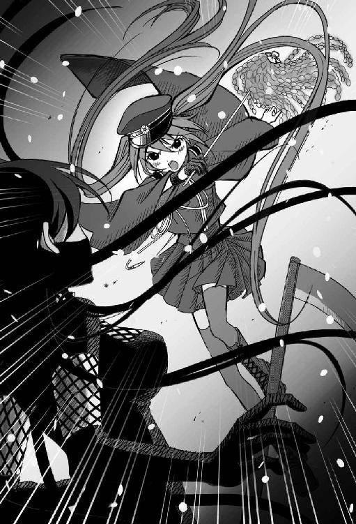
──た、倒したの？
やがて光が消え、桜が舞い落ちる畳の上に、枯れ木と見紛うような老人が横たわっていた。
「!?」
「これが教祖の本当の姿だ」
海斗は冷ややかな視線で教祖を見下ろす。
未來は思わず息を吞み、その場に立ちすくんでしまう。
「まさか......ボクが祓ったせいで......こうなっちゃったの？」
「元々、老人だったのだ。永い間、他人の若さを吸い取っていたんだろう。そのために、若い女を集めていたんだ」
淡々と告げる海斗の言葉に、未來はそれ以上正視できずに視線をそらして俯いた。
まだ動ける忍者が、横たわっている老人の前に跪く。
「教祖様！」
「おのれっ、教祖様の仇！」
彼らは溢れる涙を片手で拭うと、振り向きざまに抜刀し、未來に襲いかかる。
「お待ちなさい！」
虚を突かれた未來の喉元で、三本の刀がぴたりと静止する。
海斗の雪清が、全ての刀を同時に受けきっていた。
「勝手にアタシを......殺さないでちょうだい」
お導き役たちは刀を捨て、息も絶え絶えに横たわる教祖の傍らに座った。
海斗も雪清を鞘に納め、未來はホッと安堵のため息をつく。
「きょ、教祖様......」
「アタシの負けよ。いくらご奉仕の精神を途絶えさせたくはなかったとしても、人間を喰らってまで生き延びちゃいけなかった」
「教祖様......」
「起こしてちょうだい」
よろよろと教祖が立ち上がろうとするのを、お導き役が支える。
「ごめんなさいね。あなたたちまで影憑にしてしまって。そのお嬢さんに祓ってもらって、人間に戻りなさい」
「ちょっと、あなた、なに一人で勝手に諦めてますの？」
いつの間にか、未來と海斗の後ろで生徒会長が仁王立ちしていた。
その横には、鳴子と流歌もいる。
錬と鈴の二人は戦闘が終わった途端、緊張の糸が解けたのか、二人仲良く並んで睡眠中だ。
それを後目に生徒会長は腰に両手を当てて、今や老人の姿に戻った教祖に詰問する。
「わたくしの恋を叶えてくれるという約束は、どうなさるおつもり？」
当然の要求だとでも云うような生徒会長の言葉に、教祖は全ての毒気を抜かれたような表情で、優しく息を吐いた。
「恋愛ぐらい自分の力でなんとかしなさいな。あんたほど若くて綺麗なら、どんな男だってイチコロよ。自信を持って上手くおやんなさい......でもまあ、あんたを信者にしたアタシにも責任があるから、教祖の最後の仕事として、あんたの恋の成就を祈っといてあげるわよ......」
教祖は、力無くそう答えると、フッとその意識を手放した。お導き役が支えてゆっくりと畳の上に寝かせる。
流歌が声を震わせながら未來に訊ねる。
「あのう、教祖様、亡くなっちゃったんですか？」
未來はゆっくりと首を横に振る。
「じゃあ大丈夫なんですね、よかった......ところで未來さん。わたしを助けに来てくださったんですよね？」
流歌は目を潤ませながら、未來の手を握った。
「もちろんです。ボクたち姉妹......いえ、友達じゃないですか」
未來は力強く頷いて流歌の手を握り返す。
「有り難うございます。このご恩は一生忘れません。いつか、未來さんに何かあったら、今度はわたしが、この命に代えて護りますね」
流歌は珍しく真顔になって云う。
その瞬間、走って来た生徒会長に流歌は突き飛ばされた。
「わたくしの、白馬の王子様ぁ！」
駆け寄ってきた生徒会長が未來の横を素通りして、一瞬にして身構えた海斗に抱きついた。
「海斗様が助けに来てくださらなかったら、きっとわたくし命を落としていたことでしょう。海斗様が身を挺して救ってくださったこの命、今後は海斗様のためだけに生きていこうと、この悠那、かたくかたくかたく決意いたしました......」
「あー。ご無事で何よりです。もうすぐ他の神憑隊や憲兵と共にお父上もお見えになられることでしょう。あ！ 来られたようですよ。御前賀大将閣下、お嬢様はこちらです！」
まるで計ったかのようなタイミングで、近衛師団が奥座敷になだれ込んできた。その陣頭には、生徒会長の父、御前賀大将の姿があった。周囲が一気に慌ただしくなる。
「海斗准佐......よくぞ娘を──いや、無辜の信者たちを助けてくれた。礼を云うぞ」
「いえ、隊務ですので。では失礼致します！」
海斗は抱きつく悠那から逃げるように、敬礼もそこそこに踵を返した。
「ああん、海斗様ったら！ 未來さん、海斗様を捕まえて！」
えっ、ボクが？
「未來！ 何をぐずぐずしている。帰るぞ、お前も手伝え！」
疲れて眠ってしまった双子を、海斗が軀をかがめて背中におぶる。
「ご、ごめんなさい、生徒会長、ボクもいかないと」
錬を背負って先に駆け出した兄を、未來も鈴を背負って追いかける。
現場から消えた隊長の代わりに、鳴子が近衛師団が連行する教祖らの護送に付き添っている。
残念そうに深いため息をつく生徒会長の横に、流歌がそっと並んだ。
「これをきっかけに、またご奉仕に熱心な教団に戻って欲しいですね」
「なに云ってるのよ、あなた」
生徒会長は呆れたような顔で流歌を見やった。
「あの出来損ないの未來さんが、命を賭して救った教団だもの。当然、良い方に変わってくれなければ、このわたくしが許しません」
伍章雪桜兄妹
帝都をどんよりと低く覆った鈍色の空が、本格的な冬の訪れを告げていた。
そんな寒空の中で、みるくほうるカフヱの二階にある露台の手摺りの上に腰かけた未來は、白く染まった帝都の街と千本桜を遠くに見つめながら、雪に混ざってひらひらと舞い落ちる桜の花びらに手を伸ばしては、一人物思いにふけるように深いため息をついていた。
いつまでも露台に出たきり戻って来ない妹を訝しげな表情で見つめている男に、店長は痺れを切らしたように声を掛ける。
「あの子はいったいどうしちまったのかねえ......あんたら、兄妹げんかでもしたのかい？」
「はは......まさか。我が隊は先日の大捕物の後で目下、休暇中です。各自、休暇を自由に過ごしているに過ぎませんよ」
素っ気なくそう答えると、海斗は和硝子のゴブレットの底に残った蒸氣ブランを一息に飲み干した。
同じテーブルで鳴子はほろ酔い気分で日本酒を呷り、鈴は昼寝中の錬の隣で画用紙に絵を描いている。
店内はこの天候のせいか、神憑特殊桜小隊の隊員以外に客はいない。
カフヱ唯一のメイドである流歌も暇で暇で仕方ないらしく、先刻から何度も口もとに手を当てて欠伸をかみ殺している。
「何でも良いから謝ってきちまいなよ。あんな寒空の中にいつまでもいたらあの子が風邪ひいちまう」
未來の様子がおかしいのはこの兄のせいだと決めつけてやまない店長に苦笑すると、海斗は弁解を諦めて椅子から立ち上がった。
露台に続く窓の近くに置かれた木目調の古ピアノに手をかけ、海斗はビロード張りのタッセルフリンジをあしらった丸椅子に腰かける。
そして露台の妹の横顔を一瞬見やってから、昔を懐かしむような表情を浮かべ、思い出の一曲を奏で始めた。
「この曲は......『早春賦』だね」
美しい旋律だがどこかもの悲しいその調べに、店長は涙ぐみながら天井を仰ぐ。
「あたしも若い頃によく歌った曲だよ。大正乙女はね、みんなこの歌と共に恋をしたもんだ。あの頃は良かったねぇ。世界大戦に大正兇変にと御國は大変な有様だったけど、乙女たちは悲観なんかしなかったよ。未来を夢見て、美しくも儚い恋の花をいっぱい咲かせていてねぇ......」
音楽の力は偉大だ。
一瞬にして時間を遡ることも、忘却の彼方から記憶を蘇らせることも難無くやってのける。
この歌は小さい頃から未來もお気に入りで、海斗がこの曲を弾き始めると膝の上によじ登って来ては、二人で共に歌っていた想い出の曲のはずだった。海斗は鍵盤に合わせ、自らも囁くような声で歌い出す。
♪春は名のみの 風の寒さや
谷の鶯 歌は思えど
時にあらずと 声も立てず......
未來は思わずピアノの音と歌声に振り返った。
一瞬だけ兄と視線が合ったような気がして慌てて目をそらす。
──この歌、知ってる......あれ？ でもどこで聴いたんだっけ......？
不思議と懐かしさを感じさせる曲だった。
この世界のことは何一つ知らないはずなのに、なぜか昔から知っているような奇妙な違和感──。
いや、考えてみれば、こちらに来てから似たようなことが何度かあったような気がする。
こちらが現実で、あちらの世界が夢だったのかもしれないと錯覚してしまいそうな──。
不意に、背後で硝子戸が開く音が聞こえた。
顔を上げると、顰めっ面の兄がこちらへと向かって歩いて来る。
「こんな所にいつまでもいて寒くないのか？」
不機嫌そうな態度とは裏腹に、海斗は未來に自分の外套を羽織らせた。
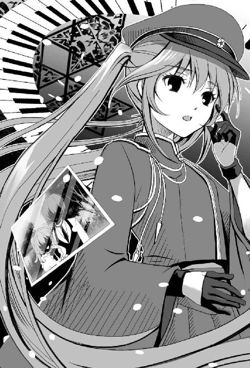
「まさかまた、『へいせい』とかいう夢やら、『家督』のことを考えていたんじゃないだろうな？」
どこかうんざりした顔で尋ねる海斗に、未來は唇を尖らせそっぽを向いた。
「考えていたけど......もう云わないもん。云うと兄様が悲しそうな顔をするから」
「............」
妹の予想外の言葉に、海斗は腕を組んでしばらく押し黙ると、やがて観念したようにため息をつく。
「......いいから、聞いてやるから話してみろ」
「えっ、本当!? いいの!?」
身を乗り出して問いかける未來に、海斗は男に二言はないと自信たっぷりに頷いて見せた。
「ボクのいた世界はね、本当に夢みたいな世界だったんだよ。この世界とは全然違って便利なものがたくさんあって、それをこっちでも作れたらきっとみんな喜ぶと思うんだけど......」
「ほう......どんなふうに便利だと云うんだ？」
「えっと、たとえばボタン一つでお米が炊けるし、電話はケータイっていってこんな小さくてみんなそれを持ち歩きながら喋ってて──テレビっていう箱の中にはたくさんの人が入ってて、ニュースとか歌番組とか一晩中やってるんだよ」
「ほう、それはすごいな」
「うん、すごいでしょ！ あとね、電子レンジっていう箱なんか野菜や肉を入れてボタンを押して、チーンっていうと、完成した料理が出てくるんだから！」
「じゃあ、いこうか」
海斗は慈しむような優しげな顔で頷くと、未來の手をそっと取る。
「どこへ？」
「病院」
えーっ!?
「外で何を話してるんだか知らないけど、なんだかねぇ、こうしてみてるとやっぱり仲が良い兄妹だね」
店内から露台にいる二人の様子を窺っていた店長はにこにこと微笑みながら、今にもテーブルに突っ伏して居眠りしてしまいそうな流歌の脇腹を小突きながら云った。
「えっ、はあ、そうですねえ......緊急事態です。わたしも、うかうかしてられません......」
「あんたは、うとうとの間違いだろう。客が少ないからって居眠りなんかしてたら承知しないよ」
呆れ果てたように店長は云った。そのやりとりを見て、くすくすとおかしそうに鳴子が笑う。
「おやなんだい。あんただってあの音のぼっちゃんとは懇ろなんだろうに......随分と楽しげだね？ 気にはならないのかい？」
「あの男は、自分の理想に向かって生きてるような人ですからね。そう一筋縄じゃいかないんですよ。ましてや華族様相手に傍焼きだなんて、とんでもない」
鳴子は戯けたように笑うと代金をテーブルの上に置いて、一人ふらりと店を出ていってしまう。
「なんなんだろうね、いつも影のように寄り添ってると思いきや、そうでもないのかねぇ？ じれったい関係はヤキモキして精神上宜しくないよ」
鳴子の去った後を見送りながら店長は首を傾げる。
「椿は凍てつく雪の中でこそ美しく咲くんですよ......」
「はあ、なんの話だい？ また寝言の続きかい？」
眉根を寄せて聞き返す店長に、流歌は秘密ですとにっこりと微笑んだ。
そして海斗と未來と覚しき人物に白と桃色のクレヨンで雪と桜を散らしている鈴の絵を眺めながら、小声で呟いた。
「でも、雪と桜って......どちらも儚いんですよねぇ......」
「兄様ったら、いつも極端なんだから！」
「病院が厭なら神社だ。いや、むしろ神社の方がいいかもしれん」
「なんで神社!?」
「何か悪い物にでも取り憑かれているのかもしれないからな。お前の頭を祓ってもらう」
「えーっ!?」
未來は海斗の手から逃れるように露台の横にある階段を駆け下りると、帝都の街へと飛び出した。
通りから目の前に広がる千本桜の大樹を見あげる。
いつかこの世界と別れなければならない日が来たら、ここでの物語をあちらの兄妹たちにも話そう。
平成の日本も色々あるけど、大正一〇〇年の日本も大変なんだよ、と。
同じ日本の空の下、人々は命の糸を紡ぎ、日本という歴史の錦を織り続けて力強く生きている。
どんな国難にも負けない強い大和魂は、時を違えど決して変わらない。
永久に咲き続ける千本桜と帝都桜京の物語をあの時代の彼らに話す日が来るまで、大正一〇〇年の世で懸命に生きようと未來は心に誓った。
了
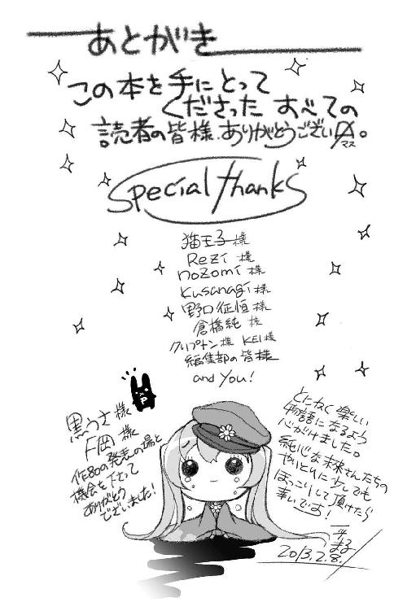
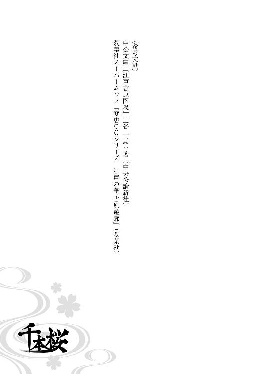
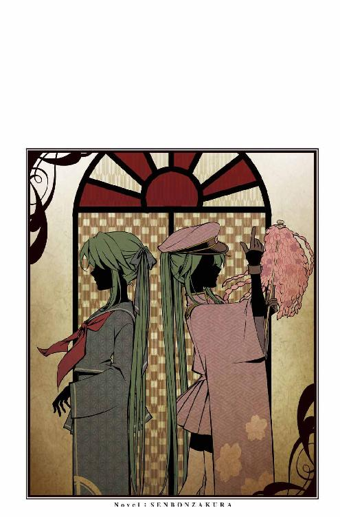
黒うさＰ
「千本桜」「ＡＣＵＴＥ」「紅一葉」「カンタレラ」の４曲でミリオン再生を果たしたヒットメーカー。音楽創作グループ「WhiteFlame」でも活動中。
一斗まる
ゲームの原画やキャラクターデザイン、漫画、ＣＤジャケットなど、幅広く活躍するイラストレーター。本書で小説の設定・執筆も担当。
『小説 千本桜』は、楽曲『千本桜』を原案としています。
『初音ミク』『鏡音リン・レン』『ＫＡＩＴＯ』『巡音ルカ』『ＭＥＩＫＯ』の公式設定とは異なります。
『初音ミク』とは、クリプトン・フューチャー・メディア株式会社が、２００７年８月に企画・発売した「歌を歌うソフトウェア」であり、ソフトのパッケージに描かれた「キャラクター」です。発売後、たくさんのアマチュアクリエイターが『初音ミク』ソフトウェアを使い、音楽を制作して、インターネットに公開しました。また音楽だけでなく、イラストや動画など様々なジャンルのクリエイターも、クリプトン社の許諾するライセンスのもと『初音ミク』をモチーフとした創作に加わり、インターネットに公開しました。その結果『初音ミク』は、日本はもとより海外でも人気のバーチャル歌手となりました。３Ｄ映像技術を駆使した『初音ミク』のコンサートも国内外で行われ、その人気は世界レベルで広がりを見せています。
（『鏡音リン・レン』『ＫＡＩＴＯ』『巡音ルカ』『ＭＥＩＫＯ』は、同じくクリプトン社から発売されたソフトウェアです。）
ＷＥＢサイト
http://piapro.net
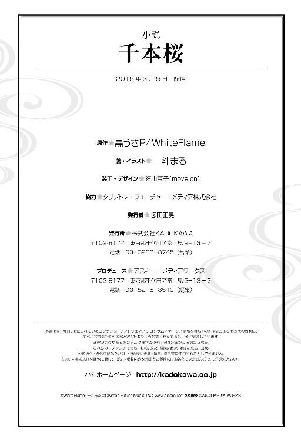